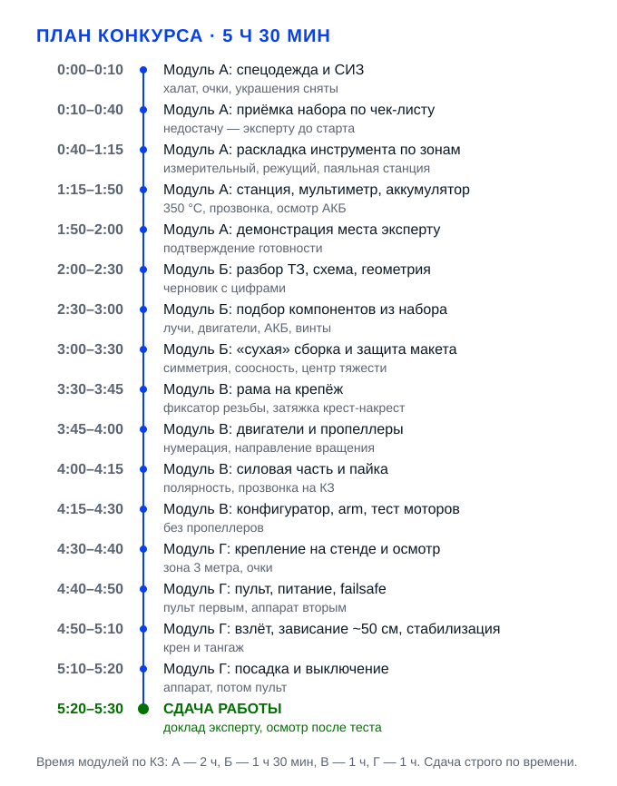
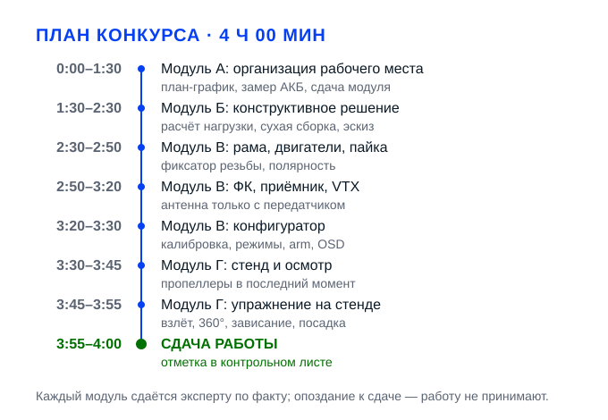
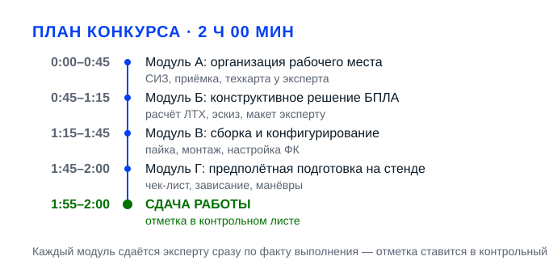

Разработка и сборка БПЛА (Р)
Задания ниже — официальные файлы «Абилимпикс» (источник: abilympics-russia.ru), разложенные по категориям. Решения написаны по тексту задания, регламенту и критериям оценки; в них указано, что именно проверяет эксперт.
Школьник
14–16 лет, базовый уровень заданияВыдержка из официального конкурсного задания: страницы, относящиеся к категории «Школьник» (стр. 9–11 источника).
Пошаговое решение
Задание для школьников — четыре модуля на 5 часов 30 минут: организация рабочего места (2 часа), разработка конструктивного решения БПЛА (1 час 30 минут), сборка и конфигурирование (1 час) и предполётная подготовка на стенде (1 час). Аппарат один и тот же на всех этапах: в модуле Б вы выбираете из выданного набора детали и собираете «сухую» раму, в модуле В она встаёт на крепёж и получает электрику, в модуле Г впервые работает винтами. Поэтому ошибка не исчезает — она переезжает в следующий модуль и всплывает через час, когда исправлять её уже некогда. Цифры в тексте взяты из типового набора (рама 450 мм, двигатели 2212 на 920 оборотов на вольт, пропеллеры 1045, аккумулятор 3S), подставляйте свои из выданного технического задания: порядок работы от этого не меняется.

Задача 1. Организовать рабочее местоМодуль А · 2 часа
Модуль А в категории «Школьники» длится два часа — больше, чем сборка и настройка вместе. Это не ошибка в задании: организацию рабочего места здесь оценивают как отдельный результат, и проверять здесь приходится каждую позицию набора. К концу модуля место должно быть полностью готово к соревнованиям, а инструменты и расходники — к работе: паяльник прогрет, мультиметр проверен, крепёж пересчитан и разложен, аккумулятор осмотрен, риски сняты. Всё, что вы недоделаете здесь, придётся делать в модуле В, отнимая время у сборки, поэтому первые два часа — самая выгодная инвестиция конкурса.
Действие 1.1. Надеть спецодежду и средства защиты
Шаг 1.1.1
Надеваем халат или фартук, застёгиваем его полностью и убираем всё, что свисает: широкие рукава подворачиваем выше запястья, шарфы и галстуки снимаем. Сверху надеваем защитные очки и поправляем дужки так, чтобы очки сидели плотно и не сползали при наклоне над столом. Халат должен быть сухим и чистым: влажная ткань на рабочем месте с напряжением 12–16 вольт — это лишний путь для статики и грязи, которая потом окажется на плате.
Спецодежда и СИЗ — первая позиция последовательности модуля А, и эксперт отмечает их до старта, а не в конце. Очки нужны не формально: при пайке флюс и припой разбрызгиваются в радиусе тридцати-сорока сантиметров, а при откусывании пластиковых стяжек кусок улетает точно в лицо. Глазная травма в первые минуты конкурса означает, что работа закончилась, не начавшись.
Проверьте себя у зеркала или попросите волонтёра посмотреть со спины: халат застёгнут на все пуговицы, рукава не свисают над столом, очки сидят без зазора у висков. Наклонитесь над столом — если очки съезжают на нос, дужки надо подтянуть сразу, а не в момент пайки.
Частая ошибка — надеть очки «на лоб» и надеть их только когда эксперт подойдёт: за два часа работы такой момент обязательно найдётся, и балл за СИЗ снимается вместе с баллом за безопасность. Вторая ошибка — работать в свитере с длинным свободным рукавом, который цепляет жало паяльника и провода.
Эксперт фиксирует спецодежду и очки в первые минуты модуля А и дальше следит, остаются ли очки на глазах в течение всей работы, особенно при пайке. Отдельно отмечается, сняты ли украшения и убраны ли волосы: это видно сразу, без вопросов.
Шаг 1.1.2
Снимаем кольца, часы, браслеты, цепочки и длинные серьги, длинные волосы убираем под резинку и под головной убор, если он выдан. Ногти коротко подстрижены — ими неудобно брать винты М3 и легко поцарапать изоляцию провода. В карманах халата не должно быть ничего металлического. Обувь закрытая, на нескользящей подошве: под столом лежат провода и обрезки стяжек, а на полу может быть капля флюса.
Металл на руке — это замкнутый контур рядом с контактами питания: кольцо, случайно коснувшееся плюса и минуса разъёма XT60, даёт короткое замыкание и прожигает палец. Часы и браслеты дополнительно цепляются за провода и сдёргивают плату со стола. Требование снять украшения входит в блок безопасности, который оценивают отдельно от результата сборки.
Руки осмотрены: украшений нет, ногти короткие, волосы убраны и не падают на стол при наклоне. Проверьте ещё одну вещь — карманы: там не должно быть ничего металлического, что может выпасть на плату, когда вы наклоняетесь над рамой.
Оставить обручальное кольцо «оно не мешает» — на школьной категории это проверяют на входе, и объяснение «я привык» не принимается. Вторая ошибка — убрать волосы только спереди: сзади они всё равно падают на стол, когда вы наклоняетесь над рамой.
Эксперт проверяет руки и волосы до старта, а дальше смотрит, не снимает ли участник очки и не поправляет ли волосы руками во время пайки. Отдельно фиксируется, лежат ли снятые украшения на столе: значит, требование выполнено осознанно.
Шаг 1.1.3
Осматриваем сами СИЗ перед работой: на стёклах очков не должно быть трещин, глубоких царапин и засохших капель флюса, дужки целые, резинка не растянута. Если выданы нитриловые перчатки — проверяем, что они по размеру и не рвутся при надевании, потому что в слишком тесных перчатках пальцы сводит уже через десять минут работы с винтами. Порванные или мутные очки меняем сразу у эксперта, а не пытаемся работать в них.
Повреждённые очки не защищают: трещина на стекле — это концентратор напряжения, и при ударе осколок летит в глаз. Мутное стекло заставляет наклоняться ближе к жалу паяльника, а это и ожог лица, и потеря контроля над точкой пайки. Замена СИЗ до старта — обычная процедура, она не штрафуется, а вот работа в повреждённых очках считается нарушением.
Очки прозрачные, без трещин, стекло чистое — смотрите через них на текст задания и убеждаетесь, что он читается без искажений. Перчатка не тянет и не рвётся, когда вы сжимаете и разжимаете кулак. Всё, что не подходит, отложено в сторону и показано эксперту.
Работать в очках с трещиной «потому что других нет»: эксперт снимет балл за СИЗ, а риск травмы останется вашим. Вторая ошибка — надеть перчатки на всю работу, включая пайку: в нитриле пальцы скользят по проводу, и держать жало рядом с рукой становится опасно.
Эксперт может попросить показать очки и перчатки при приёмке рабочего места: состояние СИЗ входит в оценку организации труда. Замена повреждённых очков до старта нарушением не считается, а работа в них считается.
Действие 1.2. Принять оборудование и инструмент по чек-листу
Шаг 1.2.1
Берём чек-лист и идём по нему сверху вниз, не перескакивая: две центральные платы рамы, четыре луча, четыре бесколлекторных двигателя, четыре регулятора оборотов или одна плата 4-в-1, полётный контроллер, приёмник, пульт, аккумулятор, зарядное устройство, четыре пропеллера двух направлений, крепёж, стяжки, силовые и сигнальные провода, разъёмы, термоусадка. Каждую позицию отмечаем карандашом в списке и выкладываем на стол рядами, чтобы сразу видеть, чего не хватает.
Приёмка — единственный момент, когда недостающее ещё можно получить: после старта замена идёт только через главного эксперта и только если причина признана уважительной. Кроме того, выложенные рядами детали дают вам картину набора целиком, и в модуле Б вы выбираете компоненты не наугад, а из того, что реально лежит перед вами. На приёмку уходит до получаса из двух часов модуля А, и это нормально.
Все строки чек-листа отмечены, ни одна позиция не осталась непроверенной. Проверьте себя так: закройте список и назовите вслух, сколько у вас двигателей, пропеллеров и регуляторов. Если хотя бы одно число не вспомнилось, значит, позиция не проверена по-настоящему.
Начать приёмку и бросить её на середине, увлёкшись рамой: потом выясняется, что пропеллеров двух направлений, а не четырёх, и половина модуля В уходит на поиски. Вторая ошибка — сваливать всё в одну кучу: считать в куче крепёж и разъёмы бессмысленно, вы всё равно пересчитаете их заново.
Эксперт подходит к столу в начале модуля А и смотрит, работает ли участник по списку или разбирает коробку руками: наличие отметок в чек-листе — прямой признак организованности.
Шаг 1.2.2
Пересчитываем крепёж и расходники поштучно: для рамы 450 мм обычно нужно восемь винтов М3×10 с гайками на лучи, шестнадцать винтов М3×8 на двигатели, четыре винта на полётный контроллер и запас пять-десять процентов. Винты раскладываем по ячейкам блистера или по бумажным конвертам с подписью, стяжки — пучком по десять штук, термоусадку — по диаметрам. Отдельно откладываем то, что уже погнуто, сорвано или имеет слизанные шлицы.
Пересчёт экономит время в модуле В, где каждая минута на счету: искать один винт М3×8 в общей куче — это две-три минуты, а их всего шестьдесят на сборку и настройку. Погнутый винт, закрученный в алюминиевый луч, срывает резьбу, и луч приходится менять, а замены в наборе нет. Разложенный крепёж ещё и показывает эксперту, что участник понимает, из чего состоит конструкция.
Количество винтов и гаек совпадает с расчётом, все они рассортированы и подписаны, дефектные отложены отдельно и показаны эксперту. Проверьте на просвет: винт с погнутым стержнем даёт заметную тень, его видно сразу, если смотреть вдоль резьбы.
Ссыпать весь крепёж в одну банку и считать «на глаз»: в модуле В вы потратите время на поиск, а в конце окажется, что два винта остались лишними, а двадцати не хватило. Вторая ошибка — закрутить первый попавшийся винт в луч: короткий не держит, длинный упирается в обмотку двигателя и перетирает её.
Эксперт может пересчитать крепёж вместе с участником при приёмке: расхождение с чек-листом фиксируется как недостача оборудования, а не как ваша ошибка, если заявлено до старта.
Шаг 1.2.3
Если чего-то не хватает, деталь повреждена или не соответствует заданию — идём к главному эксперту или его заместителю сразу, не позднее чем за пятнадцать минут до старта, и говорим точно: какой позиции нет, сколько не хватает, в чём дефект. Формулировка должна быть короткой и предметной, например «нет двух пропеллеров обратного вращения и один луч с трещиной у посадочного отверстия». Всё, что сказано после старта, уже не меняет набор.
Позже претензию не примут: считается, что участник согласился с выданным набором и принял его без замечаний. Кроме того, спокойное и точное обращение — часть оценки коммуникации: эксперт видит, умеет ли школьник формулировать проблему, а не паниковать. Молчание здесь самое дорогое решение, потому что дефект всё равно всплывёт, но уже внутри сборки.
Факт обращения зафиксирован экспертом, и вы получили ответ: замену, дополнение или объяснение, почему набор именно такой. Уходите от стола эксперта с пониманием, что делать дальше, а не с надеждой, что «обойдётся».
Тянуть до последней минуты и просить замену, когда все уже разложили инструмент: время уходит, а эксперты заняты приёмкой других участников. Вторая ошибка — начать спорить и доказывать, что набор некомплектный, вместо того чтобы назвать конкретные позиции.
Эксперт оценивает, как участник формулирует проблему и обращается за помощью: точность и спокойный тон здесь работают лучше громкости. Обращение до старта фиксируется как заявленная недостача, после старта — как замечание участника.
Действие 1.3. Разложить инструмент по зонам
Шаг 1.3.1
Делим стол на четыре зоны и держим их до конца конкурса. Перед собой, ближе к краю, кладём измерительный инструмент: линейку, штангенциркуль, мультиметр. В центре — антистатический коврик и на нём рама, потому что именно там идёт основная работа. Справа ставим паяльную станцию с включённой вытяжкой, слева или в стороне — режущий инструмент: бокорезы, нож, надфиль, свёрла. Стяжки, термоусадку и крепёж держим в лотках между центром и паяльной зоной.
Раскладка по зонам — прямое требование последовательности модуля А: измерительный инструмент перед собой, режущий в стороне, паяльная станция справа для правшей с включённой вытяжкой. Смысл не в аккуратности ради аккуратности: когда режущий инструмент лежит рядом с платой, вы один раз за два часа обязательно заденете им провод или смахнёте винт. Зоны ещё и ускоряют работу — рука сама находит нужное, не отрывая взгляда от рамы.
Проверьте раскладку по простому правилу: чтобы взять любой инструмент, вам не нужно переставлять что-то другое и не нужно тянуться через раму. Режущее не пересекается с зоной платы, паяльник стоит так, что шнур уходит назад, а не через стол. Если хотя бы одно условие нарушено, переложите сейчас.
Сложить всё в один поднос «чтобы не разбрасывать»: через полчаса инструмент перемешан, бокорезы лежат на проводах, а паяльник приходится переставлять на каждом шаге. Вторая ошибка — поставить паяльник слева левой рукой не подумав: шнур пойдёт через рабочую зону и будет цеплять раму.
Эксперт обходит рабочие места в начале модуля А и смотрит именно на раскладку: зонирование и доступность инструмента — видимый признак организации труда.
Шаг 1.3.2
Включаем паяльную станцию и выставляем 350 градусов для силовых проводов и разъёмов; для тонких сигнальных проводков хватит 320. Даём станции прогреться до того, как загорится индикатор готовности, и только потом трогаем припой. Жало протираем о латунную стружку или влажную губку, облуживаем кончиком припоя с флюсом и убираем лишнее. Вытяжку включаем за пять минут до первой пайки, а не в момент, когда пошёл дым.
Температура определяет качество пайки: на 350 градусах припой плавится за две-три секунды и не успевает перегреть изоляцию провода, а на 400 и выше изоляция плывёт, медь окисляется и соединение получается рыхлым. Непрогретое жало даёт холодную пайку, которая держится до первого толчка при закреплении на стенде. Вытяжка нужна потому, что дым от флюса раздражает глаза, а в очках это особенно мешает.
Жало ровно облужено, припой плавится при касании за секунду-две, на кончике нет нагара и чёрного оксида. Проверьте температуру на ненужном обрезке провода: капля припоя должна растекаться по меди, а не собираться шариком.
Работать на холодном жале и давить им в провод по пять секунд: изоляция плавится, медь темнеет, пайка получается матовой и хрупкой. Вторая ошибка — выкрутить температуру на максимум «чтобы быстрее»: разъём XT60 ведёт, контакты выпадают из корпуса, и деталь приходится менять.
Эксперт смотрит на паяльную станцию при обходе: выставлена ли температура, включена ли вытяжка, лежит ли паяльник в подставке, а не на столе. Проверяет он и цифры: 350 градусов для силовых проводов и 320 для сигнальных.
Шаг 1.3.3
Проверяем мультиметр до работы: включаем, смотрим, что батарея не разряжена и дисплей читается, проверяем целостность щупов и надёжность посадки в гнёздах. Ставим режим измерения постоянного напряжения на предел 20 вольт и прозвонку. Проверяем прибор на заведомо известном источнике — например, на выданном аккумуляторе 3S, который должен показать около 11,1–12,6 вольта, или на любой батарейке.
Мультиметр — единственный прибор, которым вы докажете, что полярность не перепутана и короткого замыкания нет. Если прибор врёт или щуп отошёл, вы получите ложное «всё хорошо» именно там, где нужен контроль. Проверка на известном источнике занимает минуту и отсекает главную причину ошибок — разряженную батарею прибора.
Напряжение свежего аккумулятора 3S попадает в диапазон 11,1–12,6 вольта, на 4S — 14,8–16,8 вольта. Прозвонка замыкает щупы с писком, разомкнутые щупы писка не дают. Если показания плавают или прибор не включается, меняйте батарею сразу.
Проверять полярность «на глаз» без прибора: цвет провода не гарантирует ничего, особенно на перепаянном разъёме. Вторая ошибка — держать мультиметр в режиме прозвонки, когда измеряете напряжение: прибор покажет единицу и вы решите, что цепи нет.
Эксперт может попросить показать, как участник проверяет напряжение: умение работать с контрольно-измерительным прибором входит в требования к квалификации.
Действие 1.4. Снять риски и предъявить рабочее место эксперту
Шаг 1.4.1
Убираем со стола всё, что не участвует в работе: упаковку, обрезки, лишние провода, инструмент, которым не пользуемся. Провода укладываем так, чтобы они не свисали с края стола и не пересекали рабочую зону — их фиксируем стяжкой или отводим назад за станцию. Рабочую поверхность протираем насухо: флюс, капли припоя и металлическая стружка на столе проводят ток и прилипают к плате. Антистатический коврик кладём под раму и проверяем, что он не сдвигается.
Свисающий провод — это рычаг: за него цепляют рукой, он тянет за собой разъём и вырывает контакт вместе с площадкой. Металлическая стружка на столе замыкает контакты под платой, и вы этого не увидите до первого включения. Чистая поверхность и убранные провода входят в результат модуля А — рабочее место, полностью готовое к соревнованиям.
Проведите ладонью по поверхности: на руке не должно остаться стружки, капель и пыли. Посмотрите на стол сбоку, на уровне крышки: свисающих проводов и инструмента на краю быть не должно. Потяните за каждый провод у разъёма — он не должен уходить со стола.
Оставить провода свисать «они не мешают»: в модуле Г при закреплении на стенде один такой провод натянется и вырвет разъём из полётного контроллера. Вторая ошибка — протереть стол влажной тряпкой и начать работу сразу, не дождавшись, пока высохнет.
Эксперт осматривает стол перед стартом модуля Б и отмечает чистоту, отсутствие свисающих проводов и наличие антистатической защиты. Ему важно увидеть, что провода уложены, а не просто сдвинуты к краю: на этом пункте чаще всего расходятся оценка и самооценка.
Шаг 1.4.2
Осматриваем аккумулятор: корпус без вздутия, изоляция проводов целая, разъём не оплавился, контакты не разогнуты, балансировочный разъём на месте. Проверяем напряжение по банкам мультиметром: для 3S это 11,1–12,6 вольта, разница между банками не больше 0,1 вольта. Кладём аккумулятор в стороне от паяльной станции, на негорючую подставку, и не оставляем его на краю стола, откуда он может упасть.
Аккумулятор — самый опасный предмет на столе: при коротком замыкании он даёт десятки ампер и воспламеняется за секунды, а потушить литиевый пожар водой нельзя. Вздутый корпус говорит о внутреннем повреждении, и такой аккумулятор нельзя ни заряжать, ни ставить на аппарат. Осмотр и замер входят в подготовку инструментов и расходников к работе — это результат модуля А.
Корпус ровный, без мягких вздутых участков, изоляция целая, разъём сухой и без следов перегрева. Напряжение в норме и одинаковое по банкам, разброс не больше 0,1 вольта. Если аккумулятор тёплый без причины — отложите его и скажите эксперту.
Поставить аккумулятор рядом с паяльником или на металлический лоток с винтами: случайное касание жала или падение винта на разъём даёт короткое замыкание. Вторая ошибка — замерить только общее напряжение, не глядя на банки: одна просевшая банка испортит поведение аппарата в полёте.
Эксперт смотрит, как участник обращается с аккумулятором: где он лежит, проверено ли напряжение, понимает ли школьник риск литиевой батареи. Отдельно отмечается, убран ли аккумулятор от паяльной станции и не оставлен ли на краю стола.
Шаг 1.4.3
Проверяем, что рядом есть средства на случай возгорания: ёмкость с песком или углекислотный огнетушитель, аптечка, свободный проход к выходу. Проговариваем про себя порядок действий: при дыме или искрении сначала обесточиваем аппарат, отключаем аккумулятор за разъём, а не за провод, и только потом тушим. Затем приглашаем эксперта, показываем готовое место и коротко называем, что где лежит и что уже проверено.
Демонстрация готовности — обязательный последний пункт последовательности модуля А: рабочее место считается готовым только тогда, когда это подтвердил эксперт. Заодно вы получаете шанс услышать замечание до старта, когда его ещё можно исправить за минуту. Знание порядка действий в аварийной ситуации прямо входит в требования к квалификации школьной категории.
Эксперт подошёл, посмотрел и подтвердил готовность; вы назвали, где огнетушитель или песок, где аптечка и в каком порядке отключается питание. Место выглядит так, что к работе можно приступать прямо сейчас, без доработок.
Позвать эксперта и молча стоять, ожидая оценки: демонстрация — это короткий рассказ, а не пауза. Вторая ошибка — отложить демонстрацию «пока не доделаю мелочь» и начать модуль Б без подтверждения: замечания всплывут позже и будут стоить дороже.
Эксперт задаёт один-два вопроса по организации места и по действиям при возгорании аккумулятора — это самая быстрая проверка понимания безопасности. Ответ на вопрос о тушении он оценивает как часть блока безопасности, а не как формальность.
Задача 2. Разработать конструктивное решение БПЛАМодуль Б · 1 час 30 минут
Модуль Б — это проектирование на бумаге и на столе, без клея и пайки: нужно изучить техническое задание, выбрать из выданного набора детали, собрать «сухую» конструкцию по выбранной схеме, проверить симметричность и соосность и объяснить эксперту свой выбор. Результат модуля по КЗ сформулирован мягко — продуман план и предварительный вариант решения задачи, — но именно здесь закладывается всё, что потом нельзя исправить в модуле В: база рамы, расположение полётного контроллера, центр тяжести. Полтора часа только кажутся запасом: работаем в жёстком порядке — цифры, детали, макет.
Действие 2.1. Разобрать техническое задание и выбрать схему
Шаг 2.1.1
Берём выданное техническое задание и читаем его дважды: первый раз целиком, чтобы понять задачу, второй — с карандашом, выписывая в черновик каждую цифру. В таблицу идут тип аппарата, требуемый размах, взлётная масса, полезная нагрузка, желаемое время полёта, ограничения по размерам и условиям эксплуатации. Рядом с каждой цифрой сразу ставим единицу измерения — миллиметры, граммы, минуты, — потому что дальше все расчёты идут только по этим числам.
Модуль Б длится полтора часа, и треть этого времени уходит не на сборку, а на понимание задания: в КЗ прямо сказано, что сначала изучается ТЗ с параметрами размаха, веса и типа, и только потом выбираются детали. Тот, кто выписал данные один раз и в одном месте, дальше считает спокойно и может себя проверить; тот, кто держит цифры в голове, к третьему шагу путает граммы с килограммами и миллиметры с сантиметрами.
В черновике не меньше шести строк, у каждой стоит единица измерения, и ни одна цифра не осталась только в тексте задания. Проверьте себя так: закройте ТЗ и назовите вслух требуемый размах и взлётную массу — если не вспомнили, значит, не выписали.
Читать задание по диагонали и брать похожую цифру из чужого блока: в КЗ у школьников, студентов и специалистов разные модули и разное время, и утащить чужое значение проще, чем кажется. Вторая ошибка — записывать числа без единиц: «450» потом означает и миллиметры размаха, и граммы массы.
Эксперт подходит к столу в первые минуты модуля Б и смотрит, есть ли черновик с выписанными данными: умение читать техническую документацию входит в требования к квалификации.
Шаг 2.1.2
Выбираем схему аппарата: квадрокоптер «X» или «крест». В схеме «X» лучи расходятся под 45 градусов к направлению полёта, и вперёд смотрит промежуток между двумя двигателями; в схеме «крест» один луч смотрит строго вперёд. Для школьного задания с четырьмя двигателями и визуальным пилотированием берём «X»: камера или взгляд пилота видит пространство между пропеллерами, а не сами лопасти, и аппарат устойчивее к боковому ветру.
Схема определяет всё остальное: расположение полётного контроллера, ориентацию приёмника, нумерацию двигателей и даже то, как аппарат поведёт себя при отказе одного мотора. В КЗ выбор схемы назван отдельным пунктом последовательности, и эксперту нужно объяснить причину выбора, а не просто показать собранную раму. Ошибка в схеме на этом этапе не критична, но она потянет за собой переделку компоновки в модуле В.
На черновике нарисован эскиз сверху: четыре луча, отмечено направление полёта, подписаны номера двигателей от первого до четвёртого. Проверьте по эскизу, что диагонали пересекаются в одной точке — центре платформы, — и что направление полёта совпадает с промежутком между первым и вторым двигателем.
Выбрать схему «крест» и при этом поставить полётный контроллер стрелкой вперёд по лучу: в конфигураторе аппарат будет считать вперёд другое направление, и при первом взлёте он начнёт уходить в сторону. Вторая ошибка — нарисовать эскиз «как получится», без направления полёта.
Эксперт слушает обоснование выбора схемы: важна не сама схема, а способность объяснить, почему она подходит под параметры задания. При этом он смотрит, нарисован ли на эскизе вектор направления полёта: без него объяснение неполное.
Шаг 2.1.3
Считаем геометрию. Диагональ рамы — расстояние между осями противоположных двигателей; для пропеллера диаметром 254 мм (10 дюймов) она должна быть не меньше 450 мм, иначе лопасти соседних моторов пересекутся. Длина луча при этом около 225 мм от центра, плюс посадочная площадка под двигатель. Размах по осям двигателей получается примерно 318 мм, а полный габарит с пропеллерами — около 570 мм. Расчёт записываем рядом с эскизом.
Геометрия — единственная часть проекта, которую нельзя исправить настройками: если диагональ мала, пропеллеры будут задевать друг друга, появится вибрация, а на стенде в модуле Г аппарат поведёт себя непредсказуемо. В КЗ требуется проверить симметричность и соосность лучей, и проверять их можно только относительно посчитанных чисел, а не «на глаз по линейке».
Проверьте арифметику обратным счётом: 225 мм умножить на два — 450 мм диагонали; 450 разделить на 1,414 — около 318 мм между соседними осями; к 318 прибавить 254 мм пропеллера — примерно 570 мм габарита. Все три числа сходятся между собой и записаны в черновике.
Считать диагональ как сумму двух лучей, забыв про посадочные площадки: реальная база получается на 15–20 мм меньше расчётной, и пропеллеры 10 дюймов начинают «целоваться» на перегазовке. Вторая ошибка — взять раму 450 мм под пропеллеры 12 дюймов: лопасти срезают друг друга в первый же запуск.
Эксперт смотрит на черновик с расчётом и на эскиз: наличие чисел рядом с рисунком — признак того, что решение продумано, а не собрано наугад. Если чисел нет, он попросит посчитать вслух, и это съест время модуля.
Действие 2.2. Подобрать компоненты из выданного набора
Шаг 2.2.1
Берём две центральные платы и четыре луча и проверяем, что они из одного комплекта: расстояние между крепёжными отверстиями на плате должно совпадать с отверстиями на луче, а паз на луче — входить в паз платы без зазора и без натяга. Прикладываем луч к верхней и нижней плате, совмещаем отверстия и убеждаемся, что при полной посадке плоскости плат параллельны. Детали, которые не совпадают по отверстиям, откладываем сразу.
Совпадение отверстий — не формальность: при несовпадении на полмиллиметра винт входит по резьбе, но тянет луч на перекос, и рама получается винтом. Винтовая рама теряет жёсткость, а на стенде это проявляется как медленные колебания по крену, которые невозможно убрать настройками. В модуле В переделывать раму уже некогда.
Плата и луч соединяются от руки без люфта, отверстия совпадают, зазор между плоскостями не больше 1 мм по всему периметру. Проверьте каждую из четырёх пар «луч — плата»: достаточно одной несовпадающей пары, чтобы рама пошла винтом.
Подобрать детали по цвету или по порядку из коробки, не примеряя: у похожих лучей разная длина, и рама получается асимметричной. Вторая ошибка — силой вогнать луч в паз: карбоновая кромка скалывается, и в месте скола появляется трещина, которая разойдётся при первой вибрации.
Эксперт смотрит, примеряет ли участник детали до сборки: подбор компонентов — отдельный пункт последовательности модуля Б. Ему достаточно увидеть, что луч приложен к плате до затяжки винтов, а не после.
Шаг 2.2.2
Проверяем двигатели: маркировку, направление резьбы на валу, длину проводов и состояние изоляции. Типовой двигатель для такой рамы — 2212 с оборотами около 920 оборотов на вольт, и таких должно быть четыре: два с правой резьбой и два с левой, чтобы гайки пропеллеров не отворачивались от вращения. Осматриваем колокол: он должен вращаться от руки свободно, без заеданий и без осевого люфта, провода у выхода из обмотки не перетёрты.
Направление резьбы — это защита от самоотвинчивания: на двигателе, вращающемся по часовой стрелке, ставится гайка с левой резьбой, и наоборот. Перепутать пару проще всего, потому что внешне двигатели одинаковые. Если поставить гайку не с той резьбой, она держится на двух витках и улетает вместе с пропеллером на первой перегазовке.
Двигатели вращаются от руки с одинаковым усилием, осевого люфта нет, провода целые. На корпусе читается маркировка, и вы можете назвать, какой двигатель с какой резьбой и на какой луч пойдёт. Разложите двигатели по лучам заранее и подпишите позиции.
Взять четыре одинаковых двигателя, не проверив резьбу: два окажутся с одной резьбой, и на двух лучах гайки будут отворачиваться в полёте. Вторая ошибка — не проверить провода: перетёртая изоляция у выхода из обмотки даёт замыкание на корпус, и регулятор сгорает при первом включении.
Эксперт может попросить показать, как участник отличает двигатели с правой и левой резьбой: это базовая проверка понимания силовой установки. Проверяется и то, разложены ли двигатели по лучам заранее.
Шаг 2.2.3
Подбираем аккумулятор под двигатели и раму: смотрим напряжение в банках (3S или 4S), ёмкость в миллиампер-часах, разъём и максимальный ток разряда. Для двигателей 920 оборотов на вольт и рамы 450 мм типовой вариант — 3S ёмкостью 3300 мАч с разъёмом XT60, что даёт около 8–10 минут полёта при взлётной массе порядка 1,2 кг. Проверяем, что разъём аккумулятора совпадает с разъёмом платы распределения питания.
Аккумулятор должен соответствовать и двигателям, и регуляторам: слишком высокое напряжение перегревает обмотки, слишком низкое не даёт тяги для взлёта. Разъём — самая частая несовместимость в наборе: XT60 и XT30 внешне похожи, но не соединяются, и попытка воткнуть один в другой ломает контакты. В модуле Б это ещё можно исправить подбором, в модуле В — только перепайкой.
Напряжение и ёмкость соответствуют расчёту, разъём совпадает по типу и полу, контакты не разогнуты. Проверьте полярность проводов на разъёме: красный должен идти к плюсовому контакту, и это видно по маркировке на корпусе разъёма.
Взять аккумулятор 4S к двигателям, рассчитанным на 3S, «чтобы было мощнее»: обмотки перегреваются, а регуляторы уходят в защиту на первой же перегазовке. Вторая ошибка — не сверить разъём и обнаружить несовместимость в модуле В, когда плата уже припаяна.
Эксперт смотрит на обоснование выбора аккумулятора: в школьной категории достаточно объяснить соответствие напряжения и разъёма, но объяснение должно быть.
Шаг 2.2.4
Проверяем пропеллеры: их четыре, по два правого и левого вращения, диаметр и шаг соответствуют расчёту (например, 1045 — десять дюймов диаметра и шаг 4,5 дюйма). На каждом пропеллере есть маркировка направления и стрелка на лопасти; складываем их парами и смотрим на просвет, нет ли трещин и заусенцев у комля. Отдельно проверяем посадочные отверстия: они должны садиться на вал двигателя без перекоса.
Пропеллер — расходник, который ломается чаще всего, и на нём же держится вся тяга. Пара перепутанных направлений даёт не нулевую тягу, а опрокидывание аппарата при взлёте: два винта тянут вверх, два вниз. Трещина у комля не видна на глаз сверху, но именно там лопасть отрывается на оборотах, и осколок летит в сторону участника.
Четыре пропеллера, два из них с маркировкой правого вращения, два — левого, все целые. Проверьте каждый на просвет у лампы: трещина проявляется тёмной линией у основания лопасти. Посадочное отверстие садится на вал плотно, без качания.
Взять четыре пропеллера одного направления, потому что «в наборе так лежало»: аппарат не взлетит, а при попытке взлёта завалится набок. Вторая ошибка — поставить пропеллер с трещиной, рассудив, что «пока полетает»: на стенде он разлетится в первые секунды.
Эксперт проверяет, различает ли участник пропеллеры правого и левого вращения: это обязательный элемент подбора силовой части. Он может попросить показать стрелку на лопасти — маркировка направления есть на каждом винте.
Действие 2.3. Собрать «сухую» конструкцию без клея и пайки
Шаг 2.3.1
Собираем макет на винтах от руки, без фиксатора резьбы и без пайки: сначала прикручиваем два луча к нижней плате, затем остальные два, сверху накладываем верхнюю плату и стягиваем всё четырьмя винтами. Винты затягиваем пальцами до упора, но не ключом, чтобы потом можно было разобрать без усилия. Двигатели пока не ставим — на этом этапе важна только геометрия рамы, и лишние детали мешают её видеть.
«Сухая» сборка — прямое требование последовательности модуля Б, и смысл её в том, чтобы проверить решение до необратимых операций. Пока нет фиксатора резьбы и пайки, любую ошибку можно исправить за минуту: переставить луч, развернуть плату, поменять схему. После модуля В такая переделка стоит уже получаса и части баллов за аккуратность.
Рама стоит на столе ровно, все четыре луча на месте, верхняя и нижняя платы стянуты, винты держат. Покачайте раму за концы лучей: она должна двигаться как одно целое, без скрипа и без относительного смещения плат.
Стянуть винты ключом «чтобы надёжнее»: резьба в алюминии срывается, и при разборке винт проворачивается впустую. Вторая ошибка — прикрутить лучи только к нижней плате и считать раму собранной: без верхней платы конструкция работает на изгиб и разболтается за десять минут.
Эксперт подходит посмотреть на макет в середине модуля Б: он оценивает, собрана ли конструкция по заявленной схеме и можно ли её разобрать без повреждений.
Шаг 2.3.2
Проверяем симметричность: измеряем штангенциркулем или линейкой расстояние от центра платформы до конца каждого луча и сравниваем четыре числа между собой. Разница не должна превышать 1 мм. Затем измеряем расстояния между концами противоположных лучей — обе диагонали должны быть равны с той же точностью. Если одно плечо длиннее, ищем причину: луч не досел в паз, попал не тот луч или мешает заусенец.
Симметрия — это не эстетика: при разной длине лучей центр тяжести уходит с оси, и аппарат в зависании постоянно уводит в одну сторону, а регуляторы работают с разной нагрузкой. В КЗ проверка симметричности и соосности выделена отдельным пунктом, и её результат эксперт видит на макете, а не в отчёте. Исправлять перекос в собранном аппарате придётся пересборкой всей рамы.
Четыре расстояния от центра до концов лучей отличаются не больше чем на 1 мм, обе диагонали равны. Проверьте дополнительно на просвет, приложив линейку к двум противоположным лучам: они должны лежать на одной прямой, без излома в центре.
Мерить «на глаз» и считать, что разница в 5 мм не видна: она видна сразу, аппарат стоит с наклоном, и в модуле Г вам придётся триммировать то, что надо было просто пересобрать. Вторая ошибка — подгонять длину подпиливанием карбона: кромка лохматится, и луч теряет прочность.
Эксперт может сам взять линейку и проверить диагонали: симметрия — один из самых быстрых и объективных признаков качества разработки. Ему важно, чтобы участник мерил именно диагонали, а не только длину лучей.
Шаг 2.3.3
Проверяем соосность и посадку двигателей: прикладываем двигатель к посадочному месту луча и смотрим, совпадают ли четыре отверстия без натяга, а вал стоит строго вертикально относительно плоскости рамы. Все четыре площадки должны быть в одной плоскости — проверяем, положив раму на ровную плиту или стекло и покачав её: люфт не больше 1 мм. Заодно проверяем, что отверстия под винты не перекрыты элементами платы.
Соосность вала и вертикальность двигателя определяют, куда направлен вектор тяги: при перекосе в два-три градуса аппарат тянет в сторону, и компенсировать это приходится постоянным креном, теряя запас управления. Посадочные площадки в одной плоскости — условие ровного старта: если один двигатель выше, рама при взлёте наклоняется в его сторону.
Все четыре двигателя садятся на свои места без усилия, отверстия совпадают, валы стоят вертикально. Рама, положенная на стекло, не качается: просвета под лучами нет или он одинаковый со всех сторон. Покачайте раму, положив её на стекло, и посмотрите на просвет под каждым лучом по очереди.
Притянуть двигатель винтами, не проверив посадку: перекошенный двигатель встаёт на два винта из четырёх, а два оставшихся срывают резьбу. Вторая ошибка — поставить двигатели до проверки плоскости рамы: потом уже не понять, что даёт перекос — луч или площадка.
Эксперт смотрит на посадку двигателей и на плоскость рамы: соосность входит в перечень проверок модуля Б наравне с симметрией. Он может приложить линейку к плоскости рамы и посмотреть на просвет под всеми лучами.
Действие 2.4. Продумать компоновку и предъявить макет эксперту
Шаг 2.4.1
Раскладываем на макете остальные компоненты и определяем каждому место: полётный контроллер — в геометрическом центре платформы, стрелкой вперёд по направлению полёта; приёмник — на задней части, антеннами вниз и в стороны, подальше от силовых проводов; аккумулятор — сверху или снизу в центре, с возможностью сдвинуть его на 10–15 мм для балансировки; плата распределения питания — между платами рамы. Каждое место отмечаем на эскизе и подписываем.
Компоновка определяет центр тяжести, а центр тяжести — поведение аппарата в воздухе. Полётный контроллер в центре нужен потому, что все его датчики измеряют движение относительно собственной точки установки: смещённый контроллер даёт ошибку в оценке угловой скорости и рыскание. Приёмник рядом с силовыми проводами ловит помехи, и это проявляется как короткие провалы управления на газу.
На эскизе у каждого компонента есть место и подпись, полётный контроллер стоит в центре пересечения диагоналей. Проверьте по эскизу, что ни один компонент не перекрывает отверстия крепления и не выступает за габарит рамы больше чем на 5 мм.
Поставить полётный контроллер сбоку, «где удобнее проводка»: аппарат будет медленно уходить в сторону на зависании, а вы потратите время на триммирование вместо проверки систем. Вторая ошибка — разместить приёмник вплотную к проводам питания: помехи проявляются не сразу, а на максимальном газе в модуле Г.
Эксперт смотрит на эскиз компоновки и на разложенные компоненты: понимание того, почему контроллер стоит в центре, важнее самой картинки. Он проверяет, подписан ли на эскизе каждый компонент, а не только его место.
Шаг 2.4.2
Проверяем центр тяжести на макете: подвешиваем раму за две противоположные диагонали поочерёдно и смотрим, в какую точку она приходит в равновесие. Точка пересечения диагоналей и точка равновесия должны совпадать с точностью до 5 мм. Затем кладём аккумулятор на предполагаемое место и повторяем проверку — при смещении аккумулятора на 10 мм центр тяжести уходит примерно на 8 мм, и это видно сразу.
Балансировка — единственная настройка, которую нельзя сделать программно: конфигуратор не знает, где у вас лежит масса. Аппарат с центром тяжести вне оси требует постоянной коррекции, быстрее разряжает аккумулятор и хуже держит зависание на высоте 50 см, которое проверяют в модуле Г. Проверка занимает две минуты и снимает половину будущих проблем с устойчивостью.
Рама в равновесии приходит в центр пересечения диагоналей, разница не больше 5 мм. С аккумулятором на месте картина не меняется. Если равновесие уходит вперёд — сдвиньте аккумулятор назад на 10–15 мм и повторите.
Определять центр тяжести «на глаз» по симметрии рамы: симметричная рама ещё не значит сбалансированная, потому что аккумулятор и провода весят больше, чем кажется. Вторая ошибка — балансировать без аккумулятора, а потом ставить его сбоку.
Эксперт может попросить показать, как участник проверяет балансировку: в школьной категории достаточно метода подвешивания, но он должен быть выполнен.
Шаг 2.4.3
Приглашаем эксперта и показываем макет: называем выбранную схему, размах и диагональ, показываем на эскизе места компонентов, объясняем, почему полётный контроллер в центре и как двигается аккумулятор для балансировки. Рассказ строим на три коротких блока — что требуется по ТЗ, какое решение выбрано, чем оно подтверждено, — и держим в руках эскиз, чтобы показывать числа, а не вспоминать их.
Предъявление макета — отдельный пункт последовательности модуля Б: результат модуля сформулирован как «продуман план и есть предварительный вариант решения задачи», и проверить это можно только по объяснению участника. Эксперт в этот момент решает, можно ли переходить к сборке, и заодно даёт замечания, пока их ещё дёшево исправить.
Вы назвали схему, размах, диагональ и места четырёх основных компонентов, не подглядывая в задание. Эксперт кивнул и не задал уточняющих вопросов по геометрии — значит, объяснение было полным. Назовите числа без пауз: если приходится вспоминать, вы их не считали.
Показать макет молча и ждать оценки: тогда эксперт спросит сам, и вопросы будут неудобными. Вторая ошибка — рассказывать про процесс «я тут прикрутил, потом подумал» вместо решения: оценивают результат и логику, а не хронику.
Эксперт слушает объяснение и задаёт один-два вопроса, например почему выбран «X», а не «крест», или что изменится при другой массе нагрузки. Хороший ответ называет числа: размах, диагональ, массу — и связывает их с заданием.
Задача 3. Собрать БПЛА и сконфигурировать его параметрыМодуль В · 1 час
Модуль В — час, за который макет превращается в аппарат: рама встаёт на крепёж с фиксатором резьбы, на лучи садятся четыре бесколлекторных двигателя, паяются силовые провода, подключается полётный контроллер и настраивается конфигуратор. Результат по КЗ — дрон полностью собран и готов к предподлётным испытаниям на стенде, все функции в рабочем состоянии. Час на всё это мало, поэтому порядок жёсткий: механика, потом силовая часть, потом электрика, потом настройка, и каждая операция заканчивается проверкой. Любая переделка здесь съедает время у модуля Г, где аппарат уже должен летать на стенде.
Действие 3.1. Собрать раму на крепёж окончательно
Шаг 3.1.1
Разбираем макет и собираем заново, уже с фиксатором резьбы: наносим одну каплю среднего фиксатора (синего) на резьбу каждого винта, ставим винт в отверстие и затягиваем крест-накрест — сначала все четыре винта наживляем, потом подтягиваем по диагонали в два прохода. Усилие умеренное: винт М3 в алюминии затягивается до ощутимого сопротивления, без рывка. Фиксатор наносим на винт, а не в отверстие, чтобы излишек не выдавило на плату.
Фиксатор резьбы — единственное, что удерживает винт при вибрации: за десять минут работы двигателей винт без фиксатора ослабляется на четверть оборота, а за полчаса выкручивается полностью. В КЗ результат модуля В — аппарат, готовый к предподлётным испытаниям, а аппарат с ослабшим креплением к ним не готов. Затяжка крест-накрест нужна, чтобы платы не повело: последовательная затяжка по кругу перекашивает раму.
Все винты затянуты, головки утоплены, фиксатор не выступил на поверхность платы. Через десять минут работы проверьте затяжку ещё раз: винт, который стронулся от лёгкого усилия, надо подтянуть и записать в причины. Рама не должна скрипеть при скручивании руками.
Капнуть фиксатор в отверстие платы: излишек выдавливается насквозь и попадает на соседние элементы, а через сутки схватывает так, что винт не выкрутить без нагрева. Вторая ошибка — затягивать винты по кругу с полным усилием сразу: плата встаёт с перекосом, и рама получается винтом.
Эксперт проверяет затяжку выборочно, двумя пальцами: винт не должен проворачиваться. Наличие фиксатора видно по следам на резьбе при разборке, а сорванные шлицы говорят о затяжке с перекосом.
Шаг 3.1.2
Укладываем провода и стягиваем их пластиковыми хомутами: силовые провода идут вдоль лучей с внутренней стороны, сигнальные — отдельно от силовых, на расстоянии не меньше 10 мм. Хомут затягиваем так, чтобы провод не передавливался, и обрезаем хвостик бокорезами под корень, заподлицо с замком. Концы обрезанных хомутов не должны торчать остриём — о них легко порезать палец при осмотре аппарата на стенде.
Разведённые провода — это и порядок, и помехозащита: сигнальный провод, идущий рядом с силовым, ловит наводки, и в полёте это проявляется как подёргивание аппарата на газе. Обрезанный заподлицо хомут не цепляется за пропеллер и не режет руку. Аккуратная проводка входит в оценку качества сборки, которую эксперт смотрит на готовом аппарате.
Силовые и сигнальные провода разведены, хомуты затянуты и обрезаны без острых концов, провода не касаются двигателей и не выходят в зону вращения пропеллеров. Проведите пальцем вдоль пучка: нигде не должно быть натяжения и острых кромок.
Стянуть силовые и сигнальные провода одним хомутом «чтобы не болтались»: наводки на приёмник и на сигнальные линии регуляторов дают сбои управления. Вторая ошибка — обрезать хвост хомута с остриём: на стенде при осмотре вы порежетесь сами, а эксперт отметит неаккуратность.
Эксперт осматривает проводку на предмет натяжения, острых концов и близости сигнальных проводов к силовым. Ему важно увидеть, что провода не касаются подвижных частей: натянутый провод — это будущий обрыв.
Шаг 3.1.3
Проверяем жёсткость собранной рамы: берём двумя руками за концы противоположных лучей и аккуратно скручиваем в разные стороны, затем сводим и разводим концы. Рама должна сопротивляться, а не играть; допустимый упругий ход — не больше 2–3 мм на конце луча, и после снятия усилия всё возвращается в исходное положение без щелчков. Отдельно проверяем, что платы не соприкасаются с проводами двигателей.
Жёсткость рамы — это устойчивость аппарата: полётный контроллер измеряет угловую скорость корпуса, и если рама играет, датчик видит колебания самой конструкции, а не движение аппарата. На стенде это выглядит как дрожь на зависании, которую невозможно убрать настройками. Проверка занимает полминуты и отсекает переделку в модуле Г, где каждая минута нужна для полёта.
Рама упруго сопротивляется скручиванию и возвращается без остаточной деформации, щелчков и хруста нет. Платы параллельны, зазор между ними одинаковый по всей площади. Винты после проверки остались затянутыми.
Проверять жёсткость, положив раму на стол и надавив на центр: так проверяется прочность платы, а не жёсткость конструкции, и плату можно сломать. Вторая ошибка — оставить проверку на потом: расшатанную раму придётся разбирать, когда двигатели уже припаяны.
Эксперт может сам скрутить раму руками: реакция конструкции на нагрузку — объективный признак качества сборки. Если рама играет, он попросит подтянуть крепёж до проверки моторов: после включения это уже опасно.
Действие 3.2. Установить двигатели и пропеллеры
Шаг 3.2.1
Ставим четыре двигателя на лучи в соответствии с эскизом компоновки и нумерацией: первый и третий — по одной диагонали, второй и четвёртый — по другой, направление полёта между первым и вторым. Каждый двигатель сажаем на четыре винта М3×8, провода выводим внутрь рамы, а не наружу под пропеллер. Винты затягиваем по диагонали, без фиксатора: двигатель может понадобиться снять при настройке.
Нумерация двигателей — это язык, на котором конфигуратор разговаривает с аппаратом: если первый мотор стоит не там, где ждёт программа, аппарат при взлёте перевернётся. Длина винта критична: слишком длинный винт М3×8 входит внутрь колокола и цепляет обмотку, замыкая её на корпус, — двигатель сгорает вместе с регулятором при первом включении. Провода внутрь рамы уводят потому, что снаружи их срезает пропеллер.
Двигатели стоят по схеме, номера совпадают с эскизом, все четыре винта затянуты, колокол вращается свободно. Проверьте пальцем зазор между винтом и колоколом: винт не должен выступать внутрь больше чем на 1 мм.
Поставить двигатели «как встали» и разобраться с нумерацией в конфигураторе: программа предложит тест моторов, и выяснится, что первый крутит не тот мотор, а время на перестановку уйдёт из настройки. Вторая ошибка — взять винты М3×10 вместо М3×8: они упираются в обмотку и перетирают её.
Эксперт проверяет соответствие расположения двигателей схеме и свободу вращения колоколов до включения питания. Ему важно, чтобы номера совпадали с эскизом: по этой нумерации потом проверяют тест моторов.
Шаг 3.2.2
Проверяем каждый двигатель до подключения: вращаем колокол от руки и слушаем, нет ли хруста, задевания за обмотку и ощутимого магнитного «залипания» через равные промежутки. Смотрим осевой люфт — вал не должен ходить вверх-вниз больше чем на 0,5 мм. Проверяем, что провода не пережаты лучом и не касаются острых кромок, а места выхода проводов из обмотки защищены термоусадкой или каплей герметика.
Механическая проверка ловит дефект до того, как он станет электрическим: подшипник с хрустом на оборотах греется и клинит, а перетёртая изоляция даёт замыкание на корпус, от которого сгорает регулятор. Замена двигателя на этом этапе занимает две минуты, после первого включения — уже десять, а замены в наборе может не оказаться.
Все четыре колокола вращаются одинаково легко, без хруста и заеданий, осевой люфт в норме, провода целые. Сравните усилие на всех четырёх: разница в усилии больше чем в два раза говорит о дефекте подшипника.
Проверять только один двигатель, решив, что остальные такие же: дефект обычно один на партию, и именно он окажется на том луче, который вы не проверили. Вторая ошибка — оставить провода без защиты у выхода из обмотки: при вибрации они перетираются о карбон за десять минут работы.
Эксперт смотрит на механическое состояние двигателей и на защиту проводов: это часть проверки качества монтажа силовой части. Он проворачивает колоколы сам и слушает: хруст подшипника слышен без приборов.
Шаг 3.2.3
Ставим пропеллеры по направлению вращения: на двигатели, которые будут крутиться по часовой стрелке, идут винты с маркировкой правого вращения и гайкой с левой резьбой, на противоположные — наоборот. Пропеллер садится на вал до упора, гайка затягивается пальцами и потом дотягивается ключом на четверть оборота. На этом этапе ставим пропеллеры только для примерки и сразу снимаем до настройки в конфигураторе.
Направление пропеллера — вопрос не эффективности, а управляемости: при двух перепутанных винтах аппарат не взлетает, а опрокидывается, и в модуле Г это выглядит как отказ аппарата. Затяжка гайки на четверть оборота после пальцев — компромисс: слабая гайка отворачивается, перетянутая срывает резьбу вала. Снимать пропеллеры перед настройкой обязательно: в конфигураторе проверяют вращение моторов, и с винтами это опасно.
Каждый пропеллер сидит на своём двигателе по направлению, гайка затянута, люфта нет. Проверьте, что лопасти не задевают за луч и за провода: зазор до ближайшего элемента не меньше 10 мм. Проверните пропеллер рукой: он идёт с небольшим сопротивлением магнитов, без задевания за луч.
Поставить все четыре пропеллера одинаково «по картинке»: половина окажется перевёрнутой, и аппарат при взлёте завалится. Вторая ошибка — оставить пропеллеры на аппарате при настройке моторов в конфигураторе: случайный газ на столе — это порезы и разбитые лопасти.
Эксперт проверяет направление пропеллеров на готовом аппарате перед стендом: это одна из самых быстрых проверок правильности сборки. Ему достаточно взглянуть на стрелки на лопастях и сравнить их с соседними.
Действие 3.3. Смонтировать и спаять силовую часть
Шаг 3.3.1
Готовим провода к пайке: снимаем изоляцию на 3–4 мм, не надрезая медные жилы, скручиваем их в плотный жгут и облуживаем на 350 градусах с флюсом за две-три секунды до ровного блеска. Так же облуживаем контактные площадки платы распределения питания. Припаиваем провод к площадке, прижимая его на две секунды и не шевеля до застывания припоя, затем надеваем термоусадку и прогреваем её феном или жалом.
Качество пайки определяет, доживёт ли аппарат до стенда: холодная пайка держится до первой вибрации, а перегретая теряет прочность и окисляется. Зачистка на 3–4 мм — оптимум: короче — припой не захватывает жилы, длиннее — оголённая медь выступает за площадку и может замкнуть на соседнюю. Термоусадка защищает место пайки от изгиба, а именно на изгибе провод и отламывается.
Припой лежит гладкой блестящей галтелью, жилы не торчат, изоляция не оплавлена. Потяните провод пальцами с умеренным усилием: он не должен шевелиться в пайке. Термоусадка обжала место соединения без зазора.
Греть площадку вместе с проводом по пять-семь секунд: плата перегревается, контакт отслаивается, и дорожка уходит вместе с проводом. Вторая ошибка — паять без флюса на окисленной меди: припой ложится шариком и держится на честном слове.
Эксперт осматривает паяные соединения при приёмке модуля В: блеск, галтель и отсутствие наплывов видны без приборов. Он смотрит и на термоусадку: открытая медь и перегретая площадка заметны сразу.
Шаг 3.3.2
Соблюдаем полярность: красный провод — плюс, чёрный — минус, и это правило не меняется ни на аккумуляторе, ни на плате распределения, ни на регуляторах. Перед пайкой разъёма XT60 проверяем мультиметром, какой контакт аккумулятора даёт плюс, и только потом припаиваем провод к соответствующему контакту. Пайку выполняем по одному проводу: сначала плюс, даём остыть, потом минус.
Перепутанная полярность — самая дорогая ошибка модуля В: при первом включении выгорают регуляторы, полётный контроллер и приёмник, а замены в наборе нет, и модуль Г становится недостижим. Пайка по одному проводу нужна потому, что два разогретых контакта в одном корпусе разъёма легко сдвигаются и замыкаются между собой.
Мультиметр в режиме прозвонки показывает ноль между красным проводом и плюсовым контактом разъёма, и бесконечность между плюсом и минусом. Проверьте это до первого включения питания, а не после. Прозвонку делайте до подключения аккумулятора, а не сразу после него.
Ориентироваться на цвет провода в наборе: встречаются комплекты с чёрным плюсом, и цвет ничего не гарантирует. Вторая ошибка — паять плюс и минус одновременно, держа разъём пальцами: корпус ведёт, контакты смыкаются, и разъём приходится менять.
Эксперт проверяет полярность мультиметром вместе с участником перед включением питания: это ключевая точка контроля модуля В. Он просит показать прозвонку до подачи питания — самая дешёвая проверка и самая дорогая ошибка.
Шаг 3.3.3
Соединяем силовую цепь: выход аккумуляторного разъёма идёт на плату распределения питания, от неё — на четыре регулятора или на плату 4-в-1, от регуляторов — на двигатели. На входе питания ставим электролитический конденсатор, если он есть в наборе: он гасит броски напряжения при резком газе. Все соединения фиксируем стяжками, провода укладываем вдоль лучей, чтобы они не попадали в зону вращения пропеллеров.
Конденсатор на входе — не украшение: при резкой перегазовке двигатели потребляют ток в десятки ампер, напряжение проседает, и полётный контроллер может перезагрузиться прямо в воздухе. Правильная укладка проводов предотвращает их перетирание пропеллером — самая частая причина потери аппарата на стенде. В КЗ результат модуля В требует, чтобы все функции были в рабочем состоянии, а перебитый провод питания означает отказ.
Силовая цепь собрана по схеме, конденсатор на месте и соблюдена полярность его выводов (минус помечен полосой на корпусе). Провода не касаются двигателей и не выходят за габарит лучей больше чем на 10 мм.
Поставить конденсатор без учёта полярности: электролит при обратном включении вздувается и лопается за несколько секунд работы, разбрызгивая электролит на плату. Вторая ошибка — оставить петлю провода над лучом: пропеллер срезает её на первом же запуске.
Эксперт смотрит на силовую цепь целиком: правильность соединений, наличие конденсатора и укладку проводов. Отдельно он смотрит, где лежат провода относительно лучей и пропеллеров: петля над лучом срезается на первом запуске.
Шаг 3.3.4
Проверяем силовую цепь мультиметром до включения питания: в режиме прозвонки ставим один щуп на плюс разъёма, другой — на минус, и убеждаемся, что прибор не пищит. Затем проверяем каждый выход на двигатели относительно плюса и минуса: короткого замыкания быть не должно ни на одном. Отдельно проверяем, что плюс и минус не звонятся на карбон рамы и на корпуса двигателей.
Прозвонка перед включением — единственный способ поймать замыкание, пока оно не поймало вас: ошибка в пайке стоит двух минут проверки, а включение с замыканием стоит всего набора. Проверка на корпус рамы нужна потому, что карбон проводит ток, и притёртый о луч провод замыкает питание на конструкцию. В КЗ предполётная подготовка начинается с проверки отсутствия коротких замыканий — и начинается она здесь.
Мультиметр не пищит между плюсом и минусом, не пищит между любым выходом и корпусом рамы. Сопротивление между плюсом и минусом в режиме измерения сопротивления — не меньше нескольких килоом, а не единицы ом.
Включить питание сразу после пайки «чтобы проверить, работает ли»: при замыкании выгорают регуляторы, а запах горелой изоляции останется на весь модуль. Вторая ошибка — проверять только между плюсом и минусом, не глядя на выходы двигателей: замыкание чаще всего именно там, где паяли последним.
Эксперт может попросить показать результат прозвонки перед первым включением: это обязательная контрольная точка сборки. Если прозвонка не показана, он попросит повторить её при нём.
Действие 3.4. Подключить полётный контроллер и настроить конфигуратор
Шаг 3.4.1
Подключаем полётный контроллер к компьютеру через USB-кабель, желательно короткий и без удлинителей. Открываем диспетчер устройств и смотрим, появился ли порт: если драйвер не встал, ставим его из папки с программой конфигуратора и перезапускаем подключение. Запускаем конфигуратор, выбираем порт в списке и нажимаем «Подключить», дожидаясь, пока в окне появятся данные с платы: версия прошивки, тип платы, напряжение.
Без устойчивого соединения с компьютером настройка невозможна: каждая операция в конфигураторе — это запись параметров в память платы, и обрыв связи посреди записи оставляет контроллер в нерабочем состоянии. В КЗ подключение контроллера к компьютеру и запуск программы-конфигуратора — отдельный пункт последовательности модуля В, и он идёт до базовой настройки, а не после.
В конфигураторе видны версия прошивки и тип платы, напряжение питания отображается и меняется при подключении аккумулятора. Порт не пропадает при лёгком шевелении кабеля — если пропадает, замените кабель сейчас, а не в момент записи.
Работать с длинным удлинителем USB или с кабелем «только для зарядки»: порт то появляется, то исчезает, и однажды связь оборвётся именно при сохранении настроек. Вторая ошибка — подключать аккумулятор и USB одновременно, не прочитав инструкцию к плате: некоторые контроллеры этого не допускают.
Эксперт подходит к компьютеру и смотрит, установлено ли соединение и читаются ли данные с платы: работа с программным обеспечением входит в требования к квалификации.
Шаг 3.4.2
В конфигураторе выбираем тип модели — квадрокоптер со схемой «X» — и сохраняем. Проверяем карту каналов приёмника: стики должны отклоняться в правильные каналы, а направление совпадать с движением стика. Выставляем протокол регуляторов в соответствии с набором (обычный PWM или цифровой, если регуляторы его поддерживают), сохраняем и перезагружаем плату, чтобы параметры вступили в силу.
Тип модели определяет, как контроллер распределяет тягу между моторами: при неверной схеме аппарат при попытке взлёта заваливается набок, потому что программа считает передним другой луч. Карта каналов — вторая по частоте ошибка после полярности: при перепутанных каналах стик газа управляет рысканием. Обе настройки входят в базовую настройку модуля В по КЗ.
После сохранения и перезагрузки в конфигураторе отображается выбранная схема, а в окне приёмника стики двигаются по своим каналам: газ — вверх-вниз, рыскание — влево-вправо, тангаж и крен — на двух других каналах. Значения меняются от минимума до максимума без рывков.
Оставить схему по умолчанию, не сверив её с реальной рамой: программа будет считать передним другой луч, и первый взлёт закончится переворотом. Вторая ошибка — сохранить настройки и не перезагрузить плату: часть параметров применится только после перезапуска, и вы будете искать причину не там.
Эксперт смотрит на экран в момент выбора схемы и проверки каналов: важно, чтобы участник понимал, что именно он меняет. Он смотрит и на карту каналов: при перепутанных каналах стик газа управляет рысканием.
Шаг 3.4.3
Калибруем акселерометр: ставим аппарат на ровную горизонтальную поверхность, убираем с него инструмент и провода, нажимаем калибровку и ждём подтверждения. Затем проверяем реакцию на наклоны: в окне конфигуратора наклоняем аппарат вперёд — модель на экране должна наклоняться так же, назад — так же, вправо и влево — аналогично. Если направление не совпадает, проверяем ориентацию платы и настройку осей.
Калибровка акселерометра задаёт контроллеру понятие «горизонт»: без неё аппарат считает горизонталью то положение, в котором стоял на столе при прошивке, и в зависании уходит в сторону. Проверка наклонов ловит перевёрнутую ориентацию платы — ошибку, которая в полёте выглядит как полная потеря управления. В КЗ базовая настройка включает проверку реакции на стики и настройку режимов, и калибровка — её обязательная часть.
После калибровки модель на экране стоит ровно при ровном аппарате. При наклоне вперёд на 30 градусов модель показывает тот же наклон и в ту же сторону, по всем четырём направлениям. Калибровку повторяют, если после неё аппарат стоит с наклоном больше двух градусов.
Калибровать, держа аппарат в руках или на наклонном столе: контроллер запомнит наклон как горизонт, и аппарат будет постоянно уезжать в сторону. Вторая ошибка — не проверить направление наклонов: перевёрнутая плата проявляется только на взлёте, когда исправлять уже поздно.
Эксперт смотрит, ставит ли участник аппарат на ровную поверхность перед калибровкой и проверяет ли наклоны после неё. Калибровка «на весу» или на краю стола даёт постоянный увод, и это он тоже отмечает.
Шаг 3.4.4
Настраиваем арминг и защиту: назначаем arm на отдельный канал или тумблер, как требует задание, и проверяем, что без этого тумблера моторы не запускаются. Проверяем тест моторов в конфигураторе — по одному, на минимальном газе, с пропеллерами, обязательно снятыми, — и убеждаемся, что каждый мотор крутится в свою сторону и соответствует номеру на схеме. В конце настраиваем failsafe: при потере сигнала моторы должны останавливаться.
Arm на отдельном канале — требование последовательности модуля В: случайный запуск моторов на столе опасен, и защита от него обязательна. Тест моторов без пропеллеров ловит две ошибки сразу — неверный порядок и неверное направление вращения; обе в полёте означают переворот. Failsafe проверяют до стенда, потому что потеря связи на стенде с работающими моторами — это разбитый аппарат.
При включённом питании и выключенном тумблере моторы молчат, при включённом — раскручиваются по одному и в нужную сторону. Номера моторов в тесте совпадают с эскизом. При выключении пульта моторы останавливаются в течение секунды.
Крутить моторы с надетыми пропеллерами «для проверки тяги»: на столе это порезы и разбитые лопасти, а эксперт остановит работу. Вторая ошибка — не проверить направление вращения до стенда: на стенде аппарат с двумя неверными моторами не взлетает, и время модуля Г уходит на разборку.
Эксперт присутствует при тесте моторов: он проверяет, сняты ли пропеллеры и совпадает ли реакция моторов со схемой. Пропеллеры должны быть сняты до нажатия кнопки теста, а не после — это вопрос безопасности.
Задача 4. Провести предполётную подготовку на стендеМодуль Г · 1 час
Модуль Г — час на стенде, где аппарат впервые работает винтами. По КЗ нужно закрепить БПЛА на испытательном стенде, провести визуальный осмотр, включить пульт и питание в правильном порядке, выполнить взлёт с зависанием на высоте около 50 см, проверить стабилизацию по крену и тангажу, посадить аппарат и выключить питание в обратном порядке. Результат — испытания пройдены, системы и функции исправны, дрон готов к полёту. Здесь выясняется, чего стоили предыдущие четыре с половиной часа: любая ошибка в сборке или настройке проявляется в первые секунды работы моторов.
Действие 4.1. Закрепить аппарат на стенде и осмотреть его
Шаг 4.1.1
Ставим аппарат на стенд и фиксируем его так, как предусмотрено конструкцией: на динамическом стенде — через штатное крепление к платформе, с верёвочными ограничителями — за четыре точки рамы, симметрично, с одинаковой слабиной каждой верёвки. Слабину выставляем так, чтобы аппарат мог подняться на 60–70 см, но не больше: при высоте зависания около 50 см запас должен быть в пределах десяти-двадцати сантиметров. Проверяем, что крепление не перекрывает провода питания и не давит на плату.
Крепление на стенде — первое требование модуля Г, и оно же главная страховка: незакреплённый аппарат при ошибке в настройке улетает в стену или в людей, и работа заканчивается вместе с конкурсом. Симметричная фиксация нужна, чтобы аппарат не разворачивало на ограничителях: при разной длине верёвок он натягивает одну раньше других и заваливается на бок. Запас по высоте рассчитывается от той высоты, на которой будет проверяться зависание.
Аппарат закреплён в четырёх точках, все верёвки одинаковой слабины, при подъёме на 60 см ни одна не натягивается раньше остальных. Покачайте аппарат рукой: он должен ходить свободно вверх-вниз, но не разворачиваться вокруг вертикальной оси больше чем на 15 градусов.
Привязать аппарат за один луч или за хвост: при первом же импульсе тяги его развернёт, верёвка натянется рывком и вырвет крепление вместе с куском рамы. Вторая ошибка — сделать слабину «на всякий случай» по метру: аппарат успевает набрать скорость и бьётся о стенд при натяжении.
Эксперт проверяет крепление до включения питания: он смотрит на симметрию точек фиксации и на запас высоты, а также на то, не зажаты ли провода. Он тянет за верёвки по очереди: разная слабина означает разворот на перегазовке.
Шаг 4.1.2
Проводим визуальный осмотр по кругу, начиная с креплений и заканчивая проводами: все винты рамы и двигателей на месте и затянуты, гайки пропеллеров затянуты, лопасти целые, изоляция проводов не перетёрта, разъёмы вставлены до упора, нигде нет оголённых жил и следов перегрева. Отдельно смотрим на место, где провода проходят рядом с карбоном: там чаще всего появляется потёртость. Результат осмотра проговариваем вслух по пунктам.
Осмотр перед включением — требование последовательности модуля Г: надёжность креплений, целостность пропеллеров и отсутствие коротких замыканий проверяются до подачи питания, потому что после подачи проверять уже нечего. Осмотр вслух нужен не для отчёта, а для себя: проговаривая пункт, вы действительно смотрите на него, а не проводите рукой над аппаратом. Это самая дешёвая страховка в модуле Г.
Все винты на месте, гайки пропеллеров затянуты, лопасти без трещин и сколов, изоляция целая, разъёмы сидят до щелчка. Проверьте покачиванием каждый пропеллер: люфта на валу быть не должно, а лопасть не должна касаться лучей.
Осматривать аппарат, не снимая пропеллеры с двигателей и проворачивая их рукой: порез о кромку карбона — обычное дело на стенде. Вторая ошибка — пропустить потёртость провода о карбон, потому что она с внутренней стороны луча: именно там замыкание и случится.
Эксперт наблюдает за осмотром и может задать вопрос по любому пункту: последовательность и полнота осмотра — часть оценки модуля Г. Он может попросить назвать три самых вероятных места потёртости провода.
Шаг 4.1.3
Организуем зону безопасности: убеждаемся, что вокруг стенда свободно не меньше трёх метров, зрители и другие участники стоят за ограничительной линией, все, кто находится рядом, надели защитные очки. Огнетушитель или ёмкость с песком должны быть в пределах двух шагов. Проверяем, что кабель питания и пульт находятся у вас в руках, а не на полу под ногами, и что вы стоите сбоку от плоскости вращения пропеллеров, а не перед аппаратом.
Зона безопасности — не формальность: пропеллер 10 дюймов на рабочих оборотах даёт тягу в несколько килограммов, и оторвавшаяся лопасть улетает на десятки метров. Стоять сбоку нужно потому, что плоскость вращения пропеллеров — самое опасное направление, а не направление полёта. В требованиях к квалификации школьной категории прямо записано умение действовать в соответствии с мерами безопасности при полётах.
Зона в три метра свободна, все рядом находящиеся в очках, огнетушитель или песок на месте, пульт в руках, вы стоите сбоку от аппарата. Если хотя бы одно условие не выполнено, работу не начинаете — сначала наводите порядок.
Запускать моторы, когда кто-то наклонился над стендом «посмотреть поближе»: это самая частая причина травм на соревнованиях, и эксперт остановит работу немедленно. Вторая ошибка — держать аппарат рукой при первом запуске: при ошибке в настройке он дёргается с усилием, которое рукой не удержать.
Эксперт проверяет зону безопасности перед каждым включением питания: нарушение этого пункта останавливает модуль. Он смотрит и на то, где стоит сам участник — сбоку от плоскости вращения, а не перед аппаратом.
Действие 4.2. Включить системы в правильном порядке и проверить их
Шаг 4.2.1
Включаем пульт управления первым: нажимаем кнопку питания, ждём, пока экран загрузится и появится индикация модели. Проверяем, что в памяти пульта выбрана правильная модель, все тумблеры стоят в нижнем положении, а стик газа — в нуле. Если пульт предупреждает о положении тумблеров или газа, переводим их в исходное состояние и подтверждаем. Только после этого берём разъём аккумулятора.
Порядок включения — пульт, затем аппарат — это правило, а не традиция: если включить аппарат первым, он не увидит сигнал передатчика и уйдёт в failsafe, а некоторые контроллеры в этом состоянии начинают медленно раскручивать моторы. Тумблеры внизу и газ в нуле нужны потому, что пульт передаёт текущее положение стиков при включении: с поднятым газом аппарат получит команду на взлёт сразу, как только включится питание.
На экране пульта отображается выбранная модель, все тумблеры в нижнем положении, стик газа в нуле, индикатор заряда пульта не ниже половины. Если пульт требует подтверждения — подтверждаем и ждём главного экрана.
Включить аппарат первым, а пульт потом: контроллер уйдёт в failsafe, и вы потратите время на выяснение, почему моторы не реагируют. Вторая ошибка — оставить газ поднятым с прошлого включения: аппарат дёрнется в момент подачи питания, и хорошо, если он закреплён.
Эксперт смотрит на порядок включения и на положение тумблеров: это базовая проверка дисциплины работы с аппаратом. Поднятый тумблер армирования до подачи питания означает, что аппарат взлетит от первого движения стика.
Шаг 4.2.2
Подключаем аккумулятор к аппарату, держа разъём за корпус, а не за провода, и сразу убираем его в сторону, чтобы он не болтался рядом с пропеллерами. Ждём серию звуковых сигналов регуляторов и подтверждения готовности. Затем включаем тумблер армирования и проверяем реакцию: при отклонении стика газа на минимум моторы раскручиваются до малых оборотов, при отклонении стика крена аппарат наклоняется в сторону отклонения.
Проверка реакции на стики — прямое требование последовательности модуля В, и на стенде она повторяется в условиях, близких к полёту. Направление реакции важнее её наличия: если при отклонении стика вправо аппарат наклоняется влево, взлетать нельзя — управление инвертировано, и первая же попытка зависания закончится ударом о стенд. Звуковые сигналы регуляторов подтверждают, что питание дошло до всех четырёх.
Регуляторы подали сигнал готовности, arm сработал, моторы раскручиваются плавно и синхронно, аппарат наклоняется в сторону отклонения стика. При отпускании стика аппарат возвращается к горизонту без рывка.
Дёргать разъём за провода: жилы вырываются из контактов, и питание пропадает в самый неподходящий момент. Вторая ошибка — начать проверку стиков, не убедившись в направлении реакций: инвертированный канал в конфигураторе проявляется именно здесь, и обнаружить его лучше до газа.
Эксперт наблюдает за подключением питания и за первой реакцией моторов: плавность и синхронность он оценивает на слух и на глаз. Он слушает звуковые сигналы вместе с участником: серия подтверждений говорит, что питание дошло до всех регуляторов.
Шаг 4.2.3
Проверяем failsafe до полёта: при работающих моторах на малом газе выключаем пульт и смотрим, что моторы останавливаются в течение одной-двух секунд. Затем включаем пульт снова, ждём восстановления связи, повторно армируем и убеждаемся, что аппарат снова управляется. Если моторы продолжают работать после выключения пульта — работу прекращаем и правим настройку защиты в конфигураторе, пока аппарат закреплён.
Failsafe — единственная защита на случай потери связи, и на стенде её проверяют обязательно: сигнал может пропасть от помехи, от разряженного аккумулятора пульта или от случайно задетого тумблера. Аппарат, который при потере сигнала продолжает крутить моторы, на стенде упирается в ограничители, а в полёте уходит неуправляемым. В КЗ предполётная подготовка требует, чтобы системы и функции были исправны, и failsafe входит в их число.
После выключения пульта моторы останавливаются за одну-две секунды, аппарат не дёргается. После повторного включения связь восстанавливается, arm срабатывает снова, реакции на стики сохраняются. Проверку повторите дважды, чтобы исключить случайность.
Проверять failsafe, не закрепив аппарат или держа его в руке: при задержке остановки моторы успевают раскрутиться, и аппарат вырывается. Вторая ошибка — пропустить проверку, решив, что «и так настроено»: именно этот пункт чаще всего и оказывается ненастроенным.
Эксперт фиксирует результат проверки failsafe: это отдельная контрольная точка предполётной подготовки. Он засекает время остановки моторов: больше двух секунд — повод править настройку защиты до продолжения теста.
Действие 4.3. Выполнить предполётный тест на стенде
Шаг 4.3.1
Плавно поднимаем газ и выводим аппарат на зависание на высоте около 50 см — так указано в задании. Газ добавляем короткими импульсами, понемногу, дожидаясь реакции после каждого: резкий рывок стика на стенде приводит к удару о верхний ограничитель. На высоте 50 см удерживаем аппарат ровно, корректируя только крен и тангаж, и следим, чтобы верёвки или крепление оставались с запасом слабины.
Зависание на высоте около 50 см — это и есть проверяемый результат модуля Г: на такой высоте видно, держит ли аппарат горизонт, нет ли увода в сторону и не перегреваются ли двигатели. Плавный вывод на режим нужен потому, что регуляторы и контроллер работают с запасом по току, и резкий газ на стенде даёт броски напряжения, от которых контроллер может перезагрузиться. Удержание высоты — первый признак того, что сборка и настройка сделаны верно.
Аппарат висит на высоте 45–55 см, не касаясь ограничителей, крен и тангаж близки к нулю, увода в сторону нет. Моторы работают ровно, без визга и без разной громкости — одинаковая громкость говорит о равномерной нагрузке.
Дать полный газ «чтобы проверить тягу»: аппарат бьётся в верхний ограничитель, лопасти ломаются, и модуль Г заканчивается на первой минуте. Вторая ошибка — выводить на режим, не убедившись, что аппарат стоит по уровню: наклон на старте сразу уводит его в ограничитель.
Эксперт смотрит на высоту зависания и на стабильность: он оценивает, держится ли аппарат в пределах 45–55 см без постоянных подруливаний. Он смотрит и на верёвки: если они натянуты, аппарат вышел за расчётную высоту.
Шаг 4.3.2
Проверяем стабилизацию по крену и тангажу: короткими отклонениями стика наклоняем аппарат вперёд, назад, вправо и влево на 10–15 градусов и отпускаем стик. Аппарат должен сам вернуться к горизонту за одну-две секунды, без раскачки и без остаточного наклона. Затем проверяем рыскание: поворот на 15–20 градусов по курсу и возврат в ноль. Каждое движение делаем по одному, дожидаясь полной стабилизации.
Стабилизация — это то, за что отвечает полётный контроллер, и её проверка показывает, правильно ли откалиброван акселерометр и совпадает ли ориентация платы с реальной рамой. Раскачка после возврата говорит о перерегулировании или о вибрации рамы, остаточный наклон — о смещённом центре тяжести. В КЗ стабилизация по крену и тангажу названа отдельным пунктом предполётного теста, наравне со взлётом и посадкой.
После каждого отклонения аппарат возвращается к горизонту за одну-две секунды и остаётся ровно, без колебаний. Наклон при отклонении стика совпадает по направлению с движением стика на всех четырёх каналах.
Проверять стабилизацию резкими бросками стика: аппарат входит в колебания, и вы не понимаете, это плохая настройка или ваша рука. Вторая ошибка — принять раскачку за норму: на реальном полёте она превращается в потерю управления на ветру.
Эксперт наблюдает за реакцией аппарата на отклонения и за тем, насколько уверенно участник работает стиками. Он считает секунды до возврата к горизонту и отмечает остаточный наклон после отпускания стика.
Шаг 4.3.3
Сажаем аппарат: плавно снижаем газ короткими импульсами, подводим к площадке и на высоте 10–15 см сбрасываем тягу до минимума, давая аппарату сесть с легким касанием. Не ловим его рукой и не хватаем за раму до полной остановки моторов. После касания удерживаем стик газа внизу, дожидаемся, пока моторы остановятся, и только потом снимаем arm. Газ держим одной рукой, второй аппарата не касаемся.
Посадка проверяет то, что не проверяет зависание: управляемость на малом газе и способность аппарата снижаться без раскачки. Мягкое касание показывает, что регуляторы работают линейно и нет провала тяги на малых оборотах. Нельзя хватать аппарат до остановки моторов: даже на малом газу пропеллер оставляет глубокие порезы, и это самая частая травма на стенде.
Аппарат касается площадки без удара, моторы останавливаются после снятия arm, винты целы. Проверьте после посадки, не нагрелись ли двигатели: тёплые допустимо, горячие — признак перегрузки или трения.
Снижаться резко, сбрасывая газ полностью: аппарат падает с высоты 50 см, лопасти ломаются, и на повторный тест времени не остаётся. Вторая ошибка — снять arm в воздухе, рассчитывая на мягкое падение: контроллер этого не любит, а аппарат приземляется плашмя.
Эксперт смотрит на посадку и на то, как участник обращается с аппаратом после касания: дисциплина на земле оценивается так же, как в воздухе. Он проверяет, снимает ли участник армирование до того, как коснулся аппарата руками.
Шаг 4.3.4
Выключаем питание в обратном порядке: сначала отключаем аккумулятор на аппарате, держа разъём за корпус, и убираем его на негорючую подставку, и только потом выключаем пульт. Снимаем аппарат со стенда, осматриваем пропеллеры и крепления после работы. Затем докладываем эксперту результат: что проверено, на какой высоте держался аппарат, как вела себя стабилизация, какие замечания остались, и сдаём рабочее место.
Обратный порядок выключения — аппарат, потом пульт — требование последовательности модуля Г, и он защищает от ситуации, когда пульт выключен, а аппарат ещё под питанием и ждёт сигнала: контроллер в этом состоянии уходит в failsafe, а некоторые — раскручивают моторы. Осмотр после работы ловит трещины и ослабшие за час вибрации винты. Доклад эксперту — это то, по чему он фиксирует результат модуля: испытания пройдены, системы исправны.
Аппарат обесточен, пульт выключен, аккумулятор на подставке и не нагрет. Пропеллеры целы, винты затянуты, на стенде не осталось инструмента. Доклад сделан по пунктам и содержит числа: высота зависания, поведение при отклонениях, замечания.
Выключить пульт первым, оставив аппарат под питанием: контроллер уходит в failsafe, и на стенде это выглядит как самопроизвольный запуск моторов. Вторая ошибка — сдать работу молча, не назвав результатов: эксперт фиксирует то, что услышал и увидел, а не то, что было в вашей голове.
Эксперт принимает доклад и может задать уточняющий вопрос по любому этапу: понимание того, что и зачем проверялось, входит в оценку модуля Г. Доклад он оценивает по числам: высота зависания, поведение при отклонениях, оставшиеся замечания.
Студент
учащиеся колледжей и техникумовВыдержка из официального конкурсного задания: страницы, относящиеся к категории «Студент» (стр. 9–12 источника).
Пошаговое решение
Категория «Студенты» — четыре часа и четыре модуля, и разница со школьниками не в объёме работы, а в её глубине. Полтора часа уходит на организацию рабочего места с планом-графиком, проверкой аккумулятора мультиметром и настройкой измерительного инструмента, час — на разработку конструктивного решения с расчётом нагрузки, подбором аккумулятора и эскизом компоновки, ещё час — на сборку с монтажом полётного контроллера, приёмника и видеопередатчика, и последние полчаса — на предполётную подготовку с проверкой всех режимов полёта и комплексным упражнением на стенде. Ключевые критерии задания — качество монтажа и настройки, безопасность, эффективность решения и соблюдение времени, и проверяются они одновременно: одна и та же операция оценивается и как аккуратная, и как безопасная, и как быстрая. Дальше — по шагам: что делать, зачем, как проверить, что ломается и на что смотрит эксперт.

Задача 1. Организовать рабочее место и подтвердить готовностьМодуль А · 1 ч 30 мин
Полтора часа на то, чтобы стол стал рабочим местом, а не складом деталей: надетые СИЗ, проверенный по чек-листу комплект, разложенный по зонам инструмент, измеренный мультиметром аккумулятор и написанный план-график на оставшиеся два с половиной часа. Модуль А сдаётся эксперту отдельно и до старта сборки, поэтому здесь же закрываются все вопросы по недостаче и по дефектным деталям. Дальше время только расходуется, а не приобретается.
Действие 1.1. Войти в зону и надеть СИЗ
Шаг 1.1.1
Надеваем халат или фартук, застёгиваем его полностью, убираем волосы под головной убор и сразу, до включения паяльной станции, надеваем защитные очки. Снимаем часы, кольца и браслеты: металл на руке рядом с горячим жалом и литиевым аккумулятором — лишний риск, а свисающий над столом рукав цепляется за провод и тянет паяльник. Обувь закрытая, рукава подвёрнуты выше локтя, чтобы не тянуться через горячую подставку.
Спецодежда и СИЗ — первый пункт критерия «Безопасность», который в конкурсном задании объявлен абсолютным приоритетом и оценивается на всех этапах, а не только на входе. Очки нужны именно при пайке и при первом подключении аккумулятора: капля припоя и искра от разъёма летят в сторону лица, и это единственный вид брака, который нельзя исправить переделкой. Аккуратный внешний вид эксперт читает как готовность к работе с первой минуты.
Проверьте себя по трём признакам: волосы не выглядывают ни спереди, ни сзади; очки сидят на глазах, а не на лбу; на руках нет металла, а рукава не свисают над столом. Попросите волонтёра посмотреть со спины — свой затылок участник не контролирует.
Самая частая ошибка — надеть очки «на лбу» и вспомнить о них, когда пошёл дым от флюса: к этому моменту критерий безопасности уже потерян, и вернуть его нельзя. Вторая — работать в рубашке с длинным рукавом, который ложится на горячую подставку паяльника: ткань плавится мгновенно, и участник получает ожог в первом же модуле.
Эксперт фиксирует СИЗ до старта и потом следит, остаются ли очки на глазах в моменты пайки и подключения питания. Отдельно отмечается, сняты ли украшения: это видно на первой же операции с проводом.
Шаг 1.1.2
Осматриваем стол до раскладки инструмента: поверхность сухая и чистая, рядом нет стакана с водой и открытых напитков, свободный край не занят сумкой. Проверяем розетку и удлинитель, а сетевой шнур паяльной станции укладываем вдоль стола, а не поперёк прохода. Огнеупорную сумку для аккумуляторов ставим справа на краю стола, чтобы аккумулятор можно было опустить в неё одним движением, не перенося через всю рабочую зону.
Особые указания к компетенции прямо говорят: все работы с литиевыми аккумуляторами ведутся только в огнеупорных сумках и контейнерах, а напряжение проверяется перед каждым подключением. Пожар литиевой банки останавливает работу всей площадки, поэтому место для сумки выбирается заранее, а не в момент, когда из аккумулятора пошёл дым. Ровно лежащий шнур питания — это ещё и критерий «Скорость»: за спотыкание о провод теряют время.
Стол сухой, посуды с жидкостью на нём нет, шнуры лежат вдоль кромки и не пересекают проход, удлинитель с запасом по длине, огнеупорная сумка открыта и стоит в пределах вытянутой руки. Проверьте рукой: если провод приходится переступать, значит, он лежит неправильно.
Классика — поставить сумку под стол «чтобы не мешала»: в аварийной ситуации до неё нужно наклоняться, а горящий аккумулятор в руке уже не донести. Вторая ошибка — оставить бутылку с водой рядом с паяльной станцией: одно неловкое движение, и вода попадает на горячий металл или на плату под напряжением.
Эксперт смотрит на организацию зоны в первые минуты модуля А и отдельно проверяет наличие огнеупорной сумки и её положение относительно рабочего места.
Действие 1.2. Принять комплект и разложить инструмент
Шаг 1.2.1
Берём чек-лист, выданный организатором, и идём по нему сверху вниз, отмечая каждую позицию карандашом: рама с лучами, четыре двигателя, регуляторы оборотов, полётный контроллер, приёмник, видеопередатчик, антенна, аккумулятор, пропеллеры, крепёж, разъёмы, термоусадка. Винты пересчитываем отдельно — их всегда не хватает именно на последнем луче. Всё, чего нет или что выглядит повреждённым, записываем на обратной стороне листа с указанием количества.
Пункт модуля А в задании звучит как «проверить комплектность выданного оборудования и инструмента по чек-листу», и это единственный момент, когда недостачу закрывают без потери времени. После старта замена идёт через главного эксперта, и если не хватит двух винтов М3, идти за ними придётся в разгар модуля В, когда из часа сборки каждая минута на счету. Отмеченный список заодно работает как план раскладки.
Все строки чек-листа отмечены, количество совпадает с указанным, повреждённых деталей нет. Отдельно пересчитайте крепёж: винты под двигатели, под лучи и под платы — разные, и путать их нельзя. Если чего-то не хватает, это уже записано в список замечаний, а не держится в голове.
Начать раскладку «на глаз», а недостачу обнаружить при затяжке последнего луча — типичная потеря пятнадцати минут и части баллов за организацию. Вторая ошибка — промолчать про треснувший луч: на стенде он лопнет под нагрузкой, и разбирать придётся уже собранный дрон.
Эксперт подходит к столу и сверяет отмеченный чек-лист со своим экземпляром; наличие отметок видно сразу и говорит о том, работал участник по документу или по памяти.
Шаг 1.2.2
Раскладываем инструмент по зонам, как требует последовательность модуля: измерительный — прямо перед собой, это мультиметр, штангенциркуль и линейка; режущий — в стороне слева, чтобы не тянуться через плату; паяльная станция — справа для правшей, с включённой вытяжкой и подставкой под паяльник; пинцет и бокорезы — ближе к центру. Отвёртки ставим в подставку жалом вниз, а не россыпью: лежащая отвёртка скатывается под раму в самый неподходящий момент.
Порядок на столе — часть критерия «Качество: аккуратность монтажа», потому что беспорядок почти всегда означает случайное касание жала с проводом или платой. Зонирование экономит секунды на каждой операции: за час сборки их набегает несколько минут, а «Скорость» оценивается отдельно. Вытяжка при пайке обязательна по особым указаниям, и её включение проверяют.
Проверьте три вещи: до паяльника не нужно тянуться через всю раму, режущий инструмент не лежит в зоне пайки, вытяжка включена и забирает дым от жала. Подставка под паяльник стоит устойчиво и не переворачивается при касании.
Оставить паяльник лежать на столе между операциями: через минуту жало прожигает провод или кожу, и участок приходится переделывать. Вторая ошибка — включить станцию, но не включить вытяжку: дым флюса идёт в лицо, а эксперт фиксирует нарушение требований безопасности.
Эксперт обходит столы в модуле А и смотрит именно на расположение паяльной станции и наличие вытяжки: эти два пункта видно без вопросов. Ещё он отмечает, лежит ли паяльник в подставке в паузах между операциями, а не на столе.
Шаг 1.2.3
Если по чек-листу чего-то не хватает или деталь повреждена, подходим к эксперту сразу и говорим коротко и точно: что именно, сколько и в чём дефект — например, «нет двух винтов М3×8 и трещина на третьем луче». Деталь показываем в руках, не унося её со стола, и ждём решения. Если дефект спорный, просим зафиксировать его в контрольном листе до начала работы, а не после.
Особые указания требуют согласовывать с экспертом любое отклонение от задания и любое нештатное решение, а недостача компонента — как раз такое отклонение. Если промолчать, дальше участник либо собирает конструкцию не по ТЗ, либо тратит время модуля Б на поиск замены, и оба варианта стоят баллов за эффективность. Точная формулировка проблемы показывает владение ситуацией.
Эксперт подтвердил проблему и назвал решение: замену, дополнение или разрешение работать с тем, что есть. Факт обращения и его итог зафиксированы — в контрольном листе или на вашем чек-листе. Отдельно проверьте, что по каждому замечанию есть либо замена, либо разрешение работать без детали.
Молча «обойтись» без двух винтов, поставив один на два луча: конструкция теряет жёсткость, и на стенде появляется вибрация, из-за которой аппарат уходит в раскачку. Обратная ошибка — начать спорить и требовать замену в резкой форме: это оценивается ещё и как коммуникация.
Эксперт отмечает, обратился ли участник до начала сборки и насколько точно сформулировал проблему. Важна и форма: спокойный тон и точная формулировка оцениваются отдельно от содержания.
Действие 1.3. Проверить аккумулятор мультиметром
Шаг 1.3.1
Достаём аккумулятор из огнеупорной сумки и осматриваем корпус: нет ли вздутия, потёртостей, потемневших или оплавленных контактов, запаха электролита. Включаем мультиметр в режим постоянного напряжения, ставим предел 20 В и касаемся щупами разъёма балансира: сначала два крайних контакта — это общее напряжение, потом попарно соседние, чтобы увидеть каждую банку. Числа записываем на чек-листе рядом с номером аккумулятора.
Проверка напряжения перед подключением — прямое требование особых указаний, и она закрывает два риска сразу: переразряженная банка под нагрузкой уходит ниже трёх вольт и портится безвозвратно, а разбаланс больше 0,1 В говорит о том, что аккумулятор уже работал с перегрузкой. По напряжению видно и заряд: на 4,2 В на банку рассчитывают время полёта, а на 3,8 В его не хватит на комплексное задание модуля Г.
На банку приходится от 3,7 до 4,2 В, разброс между банками не больше 0,05–0,1 В, сумма совпадает с напряжением на силовом разъёме. Корпус целый, разъём не грелся, все числа записаны. Запишите и общее напряжение, и по банкам: при разбалансе важна именно разница между ними.
Подключить аккумулятор, не посмотрев на напряжение: при 3,3 В на банку просадка под тягой вырубает полётный контроллер в момент взлёта, и аппарат падает на стенд. Вторая ошибка — не заметить вздутие: такая банка может загореться при заряде, а на площадке её заряжают тут же.
Эксперт смотрит, пользуется ли участник мультиметром осознанно: на каком пределе измеряет, куда ставит щупы, записывает ли результат. Отдельно отмечается, что участник не берёт аккумулятор в руки без сумки и не кладёт его на стол.
Шаг 1.3.2
В режиме прозвонки или на пределе 200 Ом проверяем силовой разъём: между плюсом и минусом сопротивления быть не должно, прибор показывает обрыв. Затем осматриваем контакты: они не разжаты, не окислены, корпус не оплавился, защёлка держит. Аккумулятор возвращаем в огнеупорную сумку и держим её закрытой до момента подключения на стенде. Если прибор показывает сопротивление, разъём откладываем в сторону и зовём эксперта.
Короткое замыкание в разъёме — самый быстрый способ потерять весь набор: проводники на 14 AWG плавятся за секунды вместе с разъёмом и временем модуля. Проверка занимает полминуты и входит в критерий «Безопасность», который оценивается на всех этапах. Закрытая сумка нужна и по регламенту, и потому что открытый аккумулятор на столе легко задеть жалом паяльника.
В режиме прозвонки прибор молчит между контактами разъёма, контакты чистые и упругие, корпус целый. Сумка закрыта, аккумулятор лежит в ней, а не на столе. Убедитесь, что щупы не касаются друг друга и посторонних металлических предметов на столе.
Проверять разъём, держа щупы под углом и замыкая их между собой: получается искра, и разъём обгорает. Вторая ошибка — оставить аккумулятор на столе рядом с паяльником «чтобы был под рукой»: это прямое нарушение указаний по безопасности.
Эксперт проверяет, где находится аккумулятор в ходе модулей А и В: на столе или в огнеупорной сумке. Ему также видно, держит ли участник аккумулятор за корпус, а не за провода.
Действие 1.4. Составить план-график и настроить измерения
Шаг 1.4.1
На листе А4 рисуем таблицу из четырёх строк — модули А, Б, В, Г — и напротив каждой ставим время: 1:30, 1:00, 1:00, 0:30. Внутри модулей разбиваем работу на шаги с контрольными точками: сухая сборка к концу модуля Б, пайка силовой части к середине модуля В, конфигуратор к 2:45, стенд к 3:30. Отдельной строкой пишем резерв десять минут и подчёркиваем его, чтобы не занимать под текущие операции.
План-график — дополнительное требование именно студенческой категории, и проверяется оно не наличием листа, а совпадением реального хода работы с заявленным. Четыре часа на четыре модуля не оставляют места на «доделаю потом»: если пайка затянется, из модуля Г вычитается время на стенд, а стенд — отдельный результат с комплексным заданием. Резерв нужен потому, что в наборе всегда находится что-то, идущее не по плану.
В таблице четыре строки с временем, у каждого модуля есть контрольная точка со временем достижения, резерв обозначен отдельно. Сумма по строкам не превышает 4:00 — сложите и проверьте. Контрольные точки должны быть привязаны к действиям, а не к желаниям: «пайка закончена», а не «постараюсь успеть».
Написать план «сделаю всё по заданию» без времени — такой лист эксперт не засчитывает. Вторая ошибка — занять резерв первой же задержкой и потом гнать модуль Г в спешке: спешка на стенде с вращающимися пропеллерами опаснее потерянных баллов.
Эксперт просматривает план-график в начале модуля А и потом сверяет с ним темп работы, особенно переход между модулями В и Г. Если темп отстаёт от плана, он ждёт от участника решения, а не оправданий.
Шаг 1.4.2
Проверяем мультиметр на исправность: щупы целые, изоляция без трещин, батарейка жива — при замыкании щупов в режиме прозвонки прибор пищит. Штангенциркуль обнуляем на сомкнутых губках и проверяем по лучу рамы, обычно это 12 или 16 мм. Линейку и угольник кладём рядом с рамой, чтобы проверять геометрию, не перекладывая детали через весь стол. Проверяем и запасную батарейку, если она есть в наборе.
Настройка измерительного инструмента — третий пункт студенческого модуля А, и нужен он не для отчётности: по штангенциркулю проверяется симметрия лучей, по мультиметру — полярность и целостность цепи. Прибор с севшей батарейкой показывает ноль там, где на самом деле обрыв, и участник принимает неверное решение. Сбитый ноль штангеля даёт ошибку в полмиллиметра на каждой детали.
Мультиметр в режиме прозвонки пищит на замкнутых щупах и молчит на разомкнутых; штангель на сомкнутых губках показывает 0,00; угольник приложен к лучу без просвета. Заодно проверьте, что штангель не заедает при движении рамки и губки смыкаются ровно.
Работать щупами с треснувшей изоляцией: при измерении под напряжением рука оказывается рядом с оголённым металлом, а это уже травма, а не баллы. Вторая ошибка — не обнулить штангель и потом подгонять лучи под неверный размер, пересверливая отверстия.
Эксперт смотрит, проверяет ли участник инструмент перед работой, и отдельно — обнулён ли штангель: это видно по первому же измерению. Отдельно смотрит, лежит ли инструмент в зоне, из которой им удобно пользоваться, а не за рамой.
Шаг 1.4.3
Когда стол разложен, чек-лист отмечен, аккумулятор измерен и план готов, подходим к эксперту и приглашаем его к своему месту. Показываем три вещи по порядку: отмеченный чек-лист, план-график с временем и результаты замеров аккумулятора. Стоим рядом и отвечаем на вопросы, не начиная сборку до отметки в контрольном листе. Если эксперта нет на месте, ждём его, а не начинаем работу «пока он не видит».
Каждый модуль сдаётся эксперту по факту выполнения, и модуль А сдаётся так же, как остальные: без отметки он считается незавершённым, даже если стол в идеальном порядке. Приглашение до старта сборки удобно и вам: замечания по организации исправляются за минуту, а не после того, как рама собрана. Ответы о замерах показывают, что участник понимает, зачем их делал.
Эксперт поставил отметку в контрольном листе, вопросов к организации стола не осталось. Если он указал на замечание, оно исправлено до начала модуля Б. Проверьте, что эксперт увидел все три документа, а не только чек-лист.
Начать сборку, не позвав эксперта: отметки нет, и модуль А формально не сдан, даже если всё сделано правильно. Вторая ошибка — показать лист и сразу уйти к раме, не ответив на вопрос: оценивается и понимание, а не только наличие бумаги.
Эксперт оценивает именно этот момент как сдачу модуля А и ставит отметку; здесь же видно, насколько участник владеет своими же замерами. Ответ на вопрос «зачем вы это мерили» для него важнее самих чисел в листе.
Задача 2. Разработать конструктивное решение и обосновать егоМодуль Б · 1 ч 00 мин
Час на то, чтобы из одинакового набора деталей получилось осмысленное решение под числа из технического задания: выбранная схема рамы, сухая сборка с проверенной симметрией, расчёт аккумулятора под заданное время полёта, эскиз компоновки с местами крепления и проверенная центровка. Модуль сдаётся показом макета с объяснением выбора, поэтому решение нужно уметь защитить словами и числами, а не только собрать руками.
Действие 2.1. Прочитать ТЗ и выбрать схему
Шаг 2.1.1
Берём техническое задание и выписываем на черновик все числа: требуемый размах, взлётную массу, тип аппарата, время полёта, состав полезной нагрузки, ограничения по габаритам. Читаем бланк целиком, включая последние строки после таблиц: требования к компоновке часто стоят именно там. Если какого-то параметра в бланке нет, отмечаем это отдельно и уточняем у эксперта до выбора деталей, а не после сборки.
Результат модуля Б по заданию — «продуман план; есть предварительный вариант решения задачи», и проверяется он на соответствие числам из бланка. Конструкция, собранная «как обычно» без учёта размаха и массы, на защите выглядит произвольной, и баллы за эффективность выбранного решения снимаются целиком. Уточнение у эксперта до выбора деталей — законная процедура, после сборки это уже отклонение от ТЗ.
На черновике не меньше шести чисел с единицами измерения, каждое обведено и подписано. Сверьте ещё раз с бланком: размах в миллиметрах, масса в граммах, время в минутах, напряжение в вольтах. Если один параметр в бланке противоречит другому, об этом тоже нужно спросить до сборки.
Пропустить требование по времени полёта и собрать аппарат под короткий полёт: комплексное задание модуля Г длится дольше, и дрон садится по низкому напряжению посреди упражнения. Вторая ошибка — додумать параметр «по опыту» вместо вопроса эксперту.
Эксперт подходит в начале модуля Б и слушает, как участник пересказывает ТЗ своими словами и какие числа называет первыми. Он же проверяет, не переписал ли участник числа с чужих слов, а не из бланка.
Шаг 2.1.2
Выбираем схему: «крест» с лучами под 90° или «X» с разворотом лучей и моторов в углы. Для FPV-компоновки с камерой берём «X» — так в кадр не попадают пропеллеры, а масса садится ближе к геометрическому центру. Укладываем лучи на центральную платформу, совмещаем отверстия и проверяем, что все четыре луча одинаковой длины и повёрнуты на одинаковый угол относительно платформы.
Схема определяет не только вид, но и управляемость: в «X» момент инерции по крену и тангажу одинаков, поэтому аппарат ровно висит и одинаково реагирует на стики в обе стороны. «Крест» с камерой между лучами даёт в кадре пропеллеры и требует другой компоновки, а это уже отклонение от требований к FPV. Выбор схемы нужно уметь объяснить — это часть защиты макета.
Все четыре луча одинаковой длины, углы между соседними равны, отверстия совпадают без перекоса, платформа не выступает за пределы лучей больше чем на пару миллиметров. Приложите линейку к двум противоположным лучам: их концы должны лежать на одной прямой.
Смешать лучи из разных наборов: отверстия совпадут, но диагонали разойдутся, и аппарат будет уводить в сторону на каждом взлёте. Вторая ошибка — выбрать схему «потому что так красивее», не связав её с камерой и центровкой.
Эксперт слушает обоснование выбора схемы и смотрит, совпадает ли оно с тем, что собрано на столе. Его интересует, назовёт ли участник схему словом, а не покажет пальцем.
Шаг 2.1.3
Раскладываем детали набора по группам: рама и крепёж, двигатели, регуляторы, полётный контроллер, приёмник, видеопередатчик с антенной, аккумулятор. Проверяем маркировку двигателей: четыре цифры в названии — размер статора, число после KV — обороты на вольт, и все четыре двигателя должны быть одинаковыми. Отдельно отбираем крепёж под каждый узел, чтобы винты не искались в процессе сборки.
Комплектация у всех участников одинаковая, поэтому выигрыш даёт не выбор «лучших» деталей, а правильное решение из того, что дали, — это и есть критерий эффективности. Разные двигатели по KV дают разную тягу на лучах, и аппарат валится в сторону при первом же взлёте. Разложенный крепёж экономит минуты, которых в модуле В всего час.
Все четыре двигателя с одинаковой маркировкой, регуляторы рассчитаны на ток двигателя с запасом, разъём аккумулятора совпадает с разъёмом платы. Крепёж разложен по группам и пересчитан. Сверьте маркировку на всех четырёх двигателях между собой, а не только с бланком.
Поставить три двигателя одного типа и один другой: аппарат уходит в крен при взлёте, а на стенде это выглядит как неверная настройка, хотя причина в железе. Вторая ошибка — взять регулятор на ток ниже паспортного двигателя: он сгорит в первом же полёте.
Эксперт проверяет маркировку двигателей и соответствие регуляторов, обычно одним взглядом на разложенные детали. Отмечает, отложены ли дефектные детали в сторону, а не смешаны с годными.
Действие 2.2. Собрать макет и проверить геометрию
Шаг 2.2.1
Собираем конструкцию без клея и пайки: лучи вставляем в платформу, ставим крепления двигателей, наживляем винты от руки, но не затягиваем. Пропеллеры на этом этапе не ставим вообще. Держим собранный макет над столом и слегка покачиваем — так слышно, есть ли люфт в соединениях и не стучит ли луч в платформе при перекосе. Проверяем, что лучи входят в платформу до упора, а не на половину толщины.
Сухая сборка — обязательный шаг последовательности модуля Б, потому что на ней проверяется геометрия до того, как что-то зафиксировано навсегда. После фиксатора резьбы и стяжек переделать компоновку можно только разбором, а времени в модуле всего час. Люфт, найденный сейчас, лечится подбором винта, а найденный на стенде — вибрацией и потерей управления.
Макет стоит на столе ровно, все четыре луча касаются плоскости, люфта нет, платформа не играет при покачивании. Диагонали измерены штангелем и совпадают между собой. Отдельно посмотрите на просвет между лучом и платформой: его быть не должно.
Сразу затянуть всё «чтобы не развалилось» и потом обнаружить перекос: отверстия уже разбиты, и лучи встают с люфтом. Вторая ошибка — поставить пропеллеры на сухую сборку: вращать их на незакреплённом макете опасно, а по указаниям винты ставятся в последний момент.
Эксперт смотрит на сухую сборку как на черновик решения: важно, чтобы участник проверял геометрию, а не просто складывал детали одну к другой. Если участник сразу тянется за отвёрткой, он ждёт объяснения, зачем вообще была сухая сборка.
Шаг 2.2.2
Измеряем штангелем обе диагонали между осями противоположных двигателей — они должны совпадать с точностью до миллиметра. Затем прикладываем угольник к лучу и платформе: угол 90° по всем четырём, без просвета. Проверяем соосность посадки двигателей: ось вала перпендикулярна плоскости луча, крепление не подклинивает и не тянет мотор в сторону. Разницу записываем на черновике, а не запоминаем.
Симметричность и соосность установки лучей — отдельный пункт последовательности модуля Б, и на них держится вся стабилизация: полётный контроллер считает моторы симметричными, и любая ошибка геометрии превращается в постоянный крен, который регуляторы компенсируют наклоном аппарата. Диагонали, разошедшиеся на 3–4 мм, дают заметный увод уже на висении.
Диагонали равны, углы по 90°, все моторы стоят в одной плоскости, при покачивании рамы ничего не стучит. Разница диагоналей — не больше одного миллиметра, числа записаны на черновике рядом с эскизом. Разницу диагоналей назовите вслух: это и есть результат проверки.
Проверить симметрию «на глаз»: глаз не видит два миллиметра на диагонали в 220 мм, а на висении это уже крен в несколько градусов. Вторая ошибка — затянуть винты крепления моторов с перекосом, из-за чего вал встаёт не вертикально и подшипник гудит.
Эксперт наблюдает за измерениями: смотрит, чем и как участник меряет, и просит назвать результат вслух. Он просит повторить измерение при нём, чтобы увидеть сам процесс, а не только цифру.
Шаг 2.2.3
Приглашаем эксперта и показываем макет: называем выбранную схему, объясняем, почему лучи развёрнуты именно так, показываем замеренные диагонали и место, куда встанет аккумулятор. Говорим коротко, по три-четыре предложения на пункт, и держим макет так, чтобы эксперт видел его сверху. Если звучит вопрос по компоновке, отвечаем числами, а не «так удобнее».
Задание требует показать эксперту макет и объяснить свой выбор, и это отдельная точка сдачи модуля Б: результат модуля — продуманный план и предварительный вариант решения. Объяснение проверяет, понимает ли участник, почему конструкция такая, а не просто повторяет последовательность из бланка. Здесь же видно слабое место: если участник не может назвать диагонали, значит, он их не мерил.
Эксперт увидел макет сверху, услышал обоснование схемы и числа замеров. Вопросов без ответа не осталось, отметка о сдаче модуля Б в контрольном листе поставлена. Проверьте, что макет стоит на столе, а не висит в руках: так эксперт видит геометрию.
Показать макет молча или объяснять «как в задании написано»: баллы за осмысленность решения не начисляются, хотя конструкция может быть правильной. Вторая ошибка — показывать макет одной рукой, уронив луч на стол перед экспертом.
Эксперт оценивает именно защиту макета: ясность объяснения, владение числами и готовность ответить на вопрос по компоновке без подготовки. Вопрос, который он задаёт чаще всего: почему выбрана именно эта схема, а не другая.
Действие 2.3. Рассчитать нагрузку и подобрать аккумулятор
Шаг 2.3.1
Считаем на черновике: берём ёмкость аккумулятора в ампер-часах, умножаем на 0,8, потому что разряжать литий до нуля нельзя, и делим на средний ток четырёх двигателей в висении. Для набора на 5-дюймовой раме средний ток обычно 15–25 А, значит банка 1,5 А·ч даёт около четырёх-пяти минут полёта. Проверяем, что расчётное время перекрывает комплексное задание модуля Г с запасом не меньше минуты.
Подбор аккумулятора по напряжению и ёмкости под заданные двигатели и требуемое время полёта — прямое требование студенческого модуля Б, и от него зависит, дойдёт ли аппарат до конца упражнения. Напряжение задаёт число банок: двигатель с определённым KV рассчитан на свои обороты, и на 6S вместо 4S он перегреется, а регулятор уйдёт в защиту. Ёмкость задаёт время, а масса банки — ещё и тяговооружённость.
На черновике есть три числа: напряжение в вольтах и число банок, ёмкость в ампер-часах, расчётное время в минутах. Время перекрывает задание модуля Г с запасом, масса аккумулятора учтена в общей массе аппарата.
Взять аккумулятор «побольше, чтобы точно хватило»: лишние сто граммов массы съедают тягу, и аппарат висит на 70% газа, где регуляторы греются. Обратная ошибка — считать время по паспортной ёмкости без коэффициента 0,8: реальный полёт окажется на минуту короче.
Эксперт смотрит расчёт на черновике и просит объяснить, откуда взялись ток и время полёта, а не просто назвать марку аккумулятора. Если расчёт расходится с реальной массой банки, он просит пересчитать при нём.
Шаг 2.3.2
Складываем массу: рама с моторами, электроника, аккумулятор, камера, крепёж — и сравниваем с суммарной тягой четырёх двигателей на полном газе. Тяговооружённость считаем как отношение тяги к весу: для уверенного висения и манёвров нужно не меньше двух, а лучше 2,5–3. Если выходит меньше двух, облегчаем компоновку: убираем лишний крепёж, переносим тяжёлые элементы ближе к центру.
Простейший расчёт нагрузки — это не только аккумулятор, но и проверка, что аппарат вообще поднимется с заданной массой. При тяговооружённости около 1,2 дрон висит на пределе, и любое движение стиком проваливает его вниз, а на стенде это выглядит как отказ электроники. Запас тяги нужен и для поворота на 360°, который требует модуль Г.
Тяга на полном газе минимум вдвое больше веса, все компоненты учтены в массе, ни один элемент не висит на проводах вне рамы. Числа записаны рядом с расчётом аккумулятора, чтобы эксперт видел цепочку целиком.
Забыть в массе аккумулятор и камеру: расчёт сходится на бумаге, а на стенде аппарат еле отрывается от площадки. Вторая ошибка — гнаться за тягой, ставя пропеллеры больше штатных: мотор перегревается, а регулятор уходит в защиту посреди упражнения.
Эксперт проверяет, сходится ли расчёт с тем, что реально стоит на раме: масса и тяга должны быть привязаны к конкретным деталям набора. Ему важно услышать, какой запас тяги остался на манёвры, а не только на висение.
Действие 2.4. Начертить эскиз компоновки и проверить центровку
Шаг 2.4.1
Чертим на листе вид сверху: контур рамы, четыре луча, положение двигателей, и вписываем прямоугольники компонентов — полётный контроллер, приёмник, видеопередатчик, антенна, аккумулятор. Каждый компонент подписываем и ставим точку крепления: два-четыре отверстия или площадка на стяжках. Отдельно рисуем, куда пойдут провода, чтобы они не пересекали лучи и не лежали на горячих регуляторах.
Эскиз компоновки с указанием мест крепления — обязательный результат студенческого модуля Б, и он же защищает от переделок в модуле В: по чертежу видно, хватит ли места и не упрётся ли видеопередатчик в аккумулятор. Компоновка определяет центр тяжести, а центр тяжести — поведение аппарата в повороте. Эксперт смотрит эскиз как документ, по которому потом собирают.
На эскизе есть все компоненты набора, у каждого подписано место крепления, провода разведены без пересечений с лучами, аккумулятор стоит так, что его можно снять, не разбирая раму. Проверьте, что эскиз подписан: без подписи его не с чем сверять.
Нарисовать эскиз после сборки, «по факту»: тогда он бесполезен, и несоответствие с реальной компоновкой видно сразу. Вторая ошибка — поставить видеопередатчик вплотную к приёмнику: передатчик глушит приём, и в модуле Г картинка сыпется.
Эксперт сверяет эскиз с собранным аппаратом и отмечает, совпадают ли места крепления, указанные на бумаге, с тем, что стоит на раме. Он смотрит, нарисованы ли провода: по ним видно, думал ли участник о сборке заранее.
Шаг 2.4.2
Собираем компоненты на раме по эскизу без окончательной фиксации и проверяем центр тяжести: ставим раму на два пальца под центральной платформой или на тонкий стержень и смотрим, куда наклоняется. Аккумулятор двигаем вдоль платформы до равновесия, добиваясь, чтобы аппарат висел ровно или с небольшим перевесом вперёд на 5–10 мм. Найденное положение отмечаем маркером на платформе.
Оптимальный центр тяжести — прямое требование модуля Б, и он влияет на всё: при перевесе назад аппарат валится на хвост при взлёте, при сильном перевесе вперёд полётный контроллер постоянно компенсирует наклон, и запас хода стика уходит на борьбу с ним. Небольшой перевес вперёд нужен для FPV: в движении аппарат наклоняется носом, и это штатное поведение. Метка на платформе не даёт центровке уехать после замены аккумулятора.
На пальцах или стержне рама держит равновесие или слегка клюёт носом, метка положения аккумулятора нанесена, все компоненты стоят по эскизу. При покачивании ничего не смещается и не стучит. Если равновесия нет ни в каком положении, ищите ошибку в компоновке, а не в аккумуляторе.
Поставить аккумулятор «примерно в центр» и не проверять: сдвиг на 15 мм уже заметен на висении как постоянный крен, и участник начинает крутить триммеры вместо того, чтобы поправить компоновку. Вторая ошибка — закрепить аккумулятор до проверки центровки, а потом отрывать липучку вместе с площадкой.
Эксперт смотрит, как участник проверяет центровку, и просит показать метку положения аккумулятора на платформе. Он просит показать метку и назвать, на сколько миллиметров сдвигали банку.
Задача 3. Собрать БПЛА и сконфигурировать его параметрыМодуль В · 1 ч 00 мин
Самый плотный час конкурса: окончательная сборка рамы на крепёж, установка четырёх двигателей и пайка силовой части, монтаж полётного контроллера, приёмника и видеопередатчика с антенной, а затем работа в конфигураторе — калибровка акселерометра, проверка моторов, режимы полёта на переключатели, отдельный канал arm, OSD и управление каналами видеопередатчика. Здесь одновременно действуют три критерия: качество монтажа, безопасность и скорость, и любая переделка съедает время из модуля Г.
Действие 3.1. Собрать раму окончательно
Шаг 3.1.1
Разбираем сухую сборку и собираем начисто: винты ставим на фиксатор резьбы средней прочности, синий, а не красный, и затягиваем крест-накрест, чтобы платформу не повело. Сначала наживляем все четыре винта от руки, потом дотягиваем по диагонали: первый, затем противоположный, затем оставшиеся два. Усилие — до упора без продавливания карбона, перетянутый винт выдавливает смолу и трескает луч вокруг отверстия.
Окончательная сборка рамы на крепёж — первый пункт модуля В, и от неё зависит вибрация, которая губит стабилизацию сильнее любой настройки. Синий фиксатор держит винт от самоотвинчивания при вибрации, но позволяет разобрать узел без нагрева, а красный требует фена и на конкурсе только мешает. Затяжка крест-накрест сохраняет плоскость платформы, а значит, и соосность моторов.
Все винты затянуты, ни один не прокручивается, карбон вокруг отверстий без белых трещин, платформа лежит на лучах без зазора. Покачайте раму за противоположные лучи: люфта быть не должно, а звук должен быть глухим, без стука.
Поставить винты без фиксатора: после десяти минут полёта два винта выкручиваются, и луч отходит от платформы прямо в воздухе. Обратная ошибка — тянуть до хруста: карбон лопается вокруг отверстия, и луч приходится менять, а замены в наборе нет.
Эксперт проверяет затяжку выборочно, покачивая раму за лучи, и смотрит, использован ли фиксатор резьбы. Обращает он внимание и на следы на карбоне вокруг отверстий: белые точки означают перетяжку.
Шаг 3.1.2
Ставим пластиковые стяжки так, чтобы они притягивали провода к лучам и не передавливали изоляцию: затягиваем до касания, а не до побеления. Свободные хвосты обрезаем бокорезами заподлицо, оставляя два-три миллиметра, чтобы не порезать руку при сборке. Проверяем жёсткость: рама не должна играть при скручивании вокруг вертикальной оси и при нажатии на концы противоположных лучей.
Жёсткость рамы — часть критерия качества монтажа: играющая рама передаёт вибрацию на гироскоп, и полётный контроллер начинает бороться с собственной рамой вместо воздуха. Стяжки, затянутые в мясо, пережимают силиконовую изоляцию, а карбон токопроводящий, поэтому такое пережатие — это скрытое короткое замыкание. Обрезанные хвосты нужны ещё и потому, что они цепляются за пропеллер при первом запуске.
Провода зафиксированы, изоляция не побелела под стяжками, хвосты обрезаны, рама не играет при скручивании. Ни один провод не проходит под острым краем карбона и не касается вращающихся частей. Дёрните каждый провод у разъёма: он не должен выходить из защёлки.
Стянуть все провода в один жгут и притянуть к раме намертво: при ударе жгут тянет за собой разъём, и плата отрывается вместе с дорожками. Вторая ошибка — оставить длинные хвосты стяжек: они цепляются за пропеллер в первом же запуске и вырывают провод из разъёма.
Эксперт смотрит на аккуратность: ровные стяжки, обрезанные хвосты, провода не натянуты в струну. Именно по этим признакам видно, собирал участник с расчётом или на скорость. Смотрит он и на то, не перекрывают ли стяжки доступ к разъёмам платы.
Шаг 3.1.3
После затяжки повторяем замеры из модуля Б: диагонали штангелем, углы угольником, плоскость — прикладывая раму к ровной плите стола. Отмечаем, что изменилось после окончательной сборки, и если диагонали разошлись больше чем на миллиметр, ослабляем крепёж и сажаем платформу заново. Заодно проверяем, что все четыре мотора стоят на одной высоте: ставим раму на стол и смотрим на зазоры под моторами.
Финальная затяжка почти всегда чуть двигает лучи, и если этого не проверить, ошибка геометрии уйдёт в настройку: участник будет искать причину крена в регуляторах и потратит на это полчаса модуля В. Проверка занимает две минуты и держит под контролем критерий эффективности конструкции. Заодно видно, не перекосило ли платформу фиксатором резьбы.
Диагонали равны с точностью до миллиметра, углы по 90°, зазоры под всеми моторами одинаковые, рама лежит на столе без качания. Замеры записаны рядом с эскизом, чтобы их можно было сравнить с первыми. Сравните числа с первыми замерами и назовите разницу вслух.
Пропустить повторный замер, потому что «до затяжки всё было ровно»: фиксатор резьбы до полимеризации работает как смазка, и винт садится глубже с одной стороны. Вторая ошибка — обнаружить перекос и оставить как есть, списав его на допуск.
Эксперт проверяет повторные замеры и сверяет их с первыми: видно, контролирует ли участник свою работу после каждой операции или только в начале. Если разница есть, он ждёт объяснения, а не молчаливой правки замеров в черновике.
Действие 3.2. Поставить двигатели и спаять силовую часть
Шаг 3.2.1
Ставим четыре двигателя на лучи так, чтобы провода выходили в сторону платформы, а не наружу. Винты подбираем по длине: они не должны выступать внутрь статора и задевать обмотку — проверяем, приложив винт к лучу и посмотрев на выступающий конец. Затягиваем по диагонали, с фиксатором на металлических креплениях и без него на пластиковых. После установки проворачиваем каждый ротор пальцем: он должен вращаться свободно, с лёгким магнитным шагом.
Монтаж силовой части — второй пункт модуля В, и здесь две типичные потери: винт, упёршийся в обмотку, сжигает двигатель при первом запуске, а провод, выходящий наружу, попадает под пропеллер. Свободное вращение ротора — единственный доступный способ проверить подшипник и отсутствие задевания до подачи питания. Проверка занимает секунды и сохраняет двигатель, которого в наборе нет второго.
Все четыре ротора вращаются свободно и одинаково, провода выходят к платформе, винты не выступают с обратной стороны луча, двигатели стоят ровно без перекоса. При прокрутке не слышно хруста и не чувствуется закусывания.
Взять первые попавшиеся винты: длинный проходит насквозь и цепляет обмотку, двигатель при запуске дёргается и дымит. Вторая ошибка — затянуть двигатель одним винтом «пока держится»: под вибрацией он отходит, и луч с мотором начинает болтаться на стенде.
Эксперт проверяет длину винтов и свободу вращения роторов: это видно за десять секунд и говорит о внимательности участника больше, чем любое объяснение.
Шаг 3.2.2
Лудим контакты платы распределения питания и концы проводов от регуляторов: жало 350–380 °C, касание две-три секунды, припой тонким слоем, без шарика. Припаиваем по одному проводу за раз, давая плате остыть между операциями, и держим провод пинцетом, чтобы он не сместился до застывания припоя. После пайки проверяем каждое соединение на рывок: оно должно держать провод, а не отваливаться вместе с дорожкой.
Аккуратность пайки — прямо названный критерий качества, и на силовых цепях она измеряется не красотой, а сопротивлением: холодная пайка греется под током двадцать ампер и через минуту отваливается. Последовательная пайка с остыванием не даёт перегреть плату и отклеить дорожки, которые на тонком текстолите отходят уже от четырёхсот градусов. Проверка на рывок ловит непропай до того, как он проявится в воздухе.
Припой блестящий, галтель ровная, шариков нет, изоляция не оплавлена, провод держится при потягивании с усилием примерно в килограмм. Соседние контакты не слиплись, дорожки не потемнели от перегрева. Проверьте, что термоусадка надета до пайки и сдвинута на контакт после.
Греть контакт пять-семь секунд «чтобы наверняка»: дорожка отслаивается, и плату распределения приходится менять целиком. Вторая ошибка — припаять провод, не продев его в термоусадку: потом её уже не натянуть, а открытый контакт на карбоне даёт замыкание.
Эксперт осматривает пайку в лупу или под углом к свету и отмечает холодные соединения, наплывы припоя и следы перегрева текстолита. Отдельно отмечает, не осталось ли на плате капель припоя и обрезков провода.
Шаг 3.2.3
Мультиметром в режиме прозвонки проверяем, что плюс аккумулятора приходит на плюс платы, а минус на минус, и что между силовыми шинами нет короткого замыкания. Первое включение делаем через ограничитель пускового тока или через лампу накаливания последовательно с аккумулятором: лампа вспыхнула и погасла — всё в порядке, горит постоянно — есть короткое. Пропеллеры на этом этапе не ставим.
Соблюдение полярности — прямое требование последовательности модуля В, и ошибка здесь стоит всей электроники: переполюсовка сжигает регуляторы за секунду, а замены в наборе нет. Пуск через ограничитель переводит возможную аварию в безопасный режим: вместо дыма и искр участник видит горящую лампу. Отсутствие пропеллеров при первом включении — требование особых указаний, двигатели запускают только на закреплённом аппарате.
Прозвонка показывает правильную полярность и отсутствие короткого, при включении через ограничитель лампа не горит постоянно, полётный контроллер подаёт признаки жизни светодиодом и звуком, ничего не греется за первые десять секунд.
Включить аккумулятор напрямую «чтобы быстрее проверить»: при переполюсовке или замыкании выгорает дорожка на плате и плавится разъём, а участник остаётся без силовой части. Вторая ошибка — оставить пропеллеры при первом пуске: даже короткий рывок мотора на столе — порез.
Эксперт присутствует при первом включении и отмечает, использован ли ограничитель и проверена ли полярность до подачи питания. Он также смотрит, где лежит аккумулятор во время проверки: в сумке или на столе.
Действие 3.3. Смонтировать полётный контроллер, приёмник и видео
Шаг 3.3.1
Ставим полётный контроллер на мягкие демпферы или на площадку из двухстороннего скотча с прокладкой, строго по стрелке: она должна смотреть вперёд, по направлению камеры. Крепим четырьмя винтами без перетяжки, чтобы плата не изогнулась, и проверяем, что она не касается карбона и силовых проводов. Разъёмы для приёмника и видеопередатчика оставляем доступными без снятия платы.
Монтаж полётного контроллера — первый пункт студенческого модуля В, и ориентация платы критична: если стрелка смотрит не вперёд, аппарат при команде «вперёд» поедет назад или вбок, и участник будет искать причину в настройках пульта. Демпферы гасят высокочастотную вибрацию рамы, из-за которой гироскоп слепнет и аппарат раскачивается. Доступ к разъёмам экономит время в конфигураторе.
Стрелка на плате смотрит вперёд, плата не касается карбона, винты затянуты равномерно, разъёмы доступны без снятия платы. При покачивании рамы плата не стучит и не смещается на демпферах. Проверьте, что плата не касается силовых проводов и разъёмов регуляторов.
Поставить плату боком или вверх ногами и не указать это в конфигураторе: аппарат реагирует на стики зеркально, и первый взлёт заканчивается переворотом. Вторая ошибка — притянуть плату винтами к жёсткой площадке: вибрация уходит в гироскоп, и аппарат входит в раскачку на висении.
Эксперт проверяет ориентацию стрелки и способ крепления платы, а потом сверяет увиденное с настройками в конфигураторе на экране. Спросить он может и о том, зачем нужны демпферы, а не только где стоит стрелка.
Шаг 3.3.2
Ставим приёмник подальше от видеопередатчика и его антенны, на двухсторонний скотч, антенны выводим так, чтобы они не лежали на карбоне и не были закрыты аккумулятором. Подключаем по протоколу, который поддерживает плата: SBUS, CRSF или ELRS — на соответствующий UART, соблюдая порядок проводов питания, земли и сигнала. Выполняем биндинг по инструкции к приёмнику и проверяем, что пульт видит модель.
Монтаж приёмника — требование студенческого модуля В, и его расположение напрямую влияет на дальность и стабильность связи: рядом с видеопередатчиком приёмник теряет пакеты, и на стенде это выглядит как дёргается газ. Правильный UART и порядок проводов — условие того, что конфигуратор вообще увидит стики. Биндинг нужно сделать сейчас, потому что в модуле Г времени на это уже не будет.
В конфигураторе на вкладке приёмника все каналы двигаются без задержек, при отходе на десять метров от стола сигнал не пропадает, провода не перепутаны, антенны разнесены с видеопередатчиком. Проверьте, что антенна приёмника не лежит на карбоне и не закрыта проводами.
Подключить сигнал на UART, который занят видеопередатчиком или назначен под другой порт: в конфигураторе каналы не двигаются, и участник тратит полчаса модуля В на поиск причины. Вторая ошибка — спрятать антенну приёмника под аккумулятор: связь пропадает именно в момент поворота на 360°.
Эксперт проверяет, видит ли конфигуратор все каналы, и смотрит на разнесение антенн приёмника и видеопередатчика на раме. Он смотрит на вкладку приёмника в конфигураторе и на то, как участник держит аппарат при проверке.
Шаг 3.3.3
Крепим видеопередатчик на площадке в задней части рамы, подальше от приёмника и полётного контроллера, с зазором для охлаждения: без обдува он греется даже на 25 мВт. Антенну через пигтейл выводим вверх или назад, разъём затягиваем от руки, а не ключом. Питание берём с фильтрованной шины или через фильтр, если он есть в наборе, и включаем передатчик только с подключённой антенной.
Видеопередатчик и антенна FPV — обязательные элементы студенческой сборки, и здесь два правила, которые нельзя нарушать: без антенны передатчик выгорает за секунды, а рядом с приёмником он глушит управление. Разнесение и фильтр по питанию — это и есть оптимальность настроек из критерия эффективности. Охлаждение нужно потому, что передатчик на 600 мВт без обдува уходит в тепловую защиту и теряет мощность.
Передатчик закреплён с зазором не меньше пяти миллиметров до карбона, антенна подключена и направлена вверх, каналы не совпадают с соседями по площадке, при включении картинка появляется без помех и ряби.
Включить передатчик без антенны «на секундочку проверить»: выходной каскад выгорает, и FPV в модуле Г уже не проверить. Вторая ошибка — поставить антенну горизонтально вплотную к карбону: диаграмма искажается, и картинка сыпется при развороте.
Эксперт проверяет наличие антенны до включения и смотрит, разнесены ли видеопередатчик и приёмник на раме. Ему видно и то, включён ли передатчик до подключения антенны: эту ошибку не исправить.
Действие 3.4. Сконфигурировать полётный контроллер
Шаг 3.4.1
Подключаем плату к компьютеру USB-кабелем, запускаем конфигуратор и ждём определения платы. На первой вкладке выбираем тип модели — квадрокоптер в схеме X — и проверяем, что конфигуратор видит правильную ориентацию платы. Дальше калибруем акселерометр: ставим аппарат на ровную поверхность, подкладываем под лучи подкладки по уровню и запускаем калибровку, не касаясь стола до её окончания.
Подключение к конфигуратору и выбор типа модели — прямая последовательность модуля В, а калибровка акселерометра отдельно названа в студенческом задании. Без калибровки аппарат считает горизонтом то положение, в котором стоял при включении, и в режиме стабилизации уезжает в сторону. Калибровка на неровном столе — самая частая причина того, что аппарат сам летит вперёд.
Конфигуратор показывает тип модели и ориентацию платы, совпадающие с реальностью, в окне предпросмотра наклон аппарата рукой отображается в ту же сторону. Калибровка завершена без ошибок, аппарат при ней стоял ровно и не касался руками.
Калибровать акселерометр, держа аппарат в руках или на кривом столе: ошибка в два градуса превращается в постоянный снос, и участник начинает бороться с ним триммерами. Вторая ошибка — не выбрать тип модели: прошивка считает аппарат другим классом, и моторы получают неверную смесь.
Эксперт смотрит на экран в момент калибровки и проверяет, стоит ли аппарат ровно и не касается ли его участник. Он просит назвать, что произойдёт, если калибровку пропустить, и слушает ответ.
Шаг 3.4.2
В конфигураторе открываем вкладку моторов, снимаем пропеллеры и по одному поднимаем ползунок: должен раскручиваться именно тот мотор, который подсвечен на схеме. Проверяем порядок и направление вращения: два мотора по часовой, два против, по диагонали одинаково. Если направление неверное, меняем две любые фазы местами в разъёме регулятора или переставляем настройку направления в прошивке.
Проверка реакции двигателей на стики и правильный порядок — обязательный пункт модуля В, и от него зависит, поднимется ли аппарат вообще: при одном перевёрнутом моторе он переворачивается на взлёте. Направление вращения задаёт, в какую сторону работает тяга и как аппарат ведёт себя в повороте. Делать это без пропеллеров — требование безопасности, мотор на столе с винтом опасен.
Каждый ползунок раскручивает свой мотор по схеме, направления совпадают с рисунком, по диагонали они одинаковые, все четыре раскручиваются плавно, без рывков и треска. Пропеллеры при проверке сняты. Проверьте, что при нулевом газе моторы стоят и не «поют» на холостом ходу.
Проверять моторы с надетыми пропеллерами: случайный полный газ на столе — это порезы и разбитая электроника рядом. Вторая ошибка — оставить два мотора с одинаковым направлением: аппарат при взлёте закручивается вокруг оси и падает на бок.
Эксперт наблюдает проверку и отдельно отмечает, сняты ли пропеллеры: это пункт безопасности, который проверяется в моменте, а не по итогам. Он смотрит на схему в конфигураторе и на то, какой мотор крутится при каждом ползунке.
Шаг 3.4.3
На вкладке режимов назначаем на переключатели пульта три положения: стабилизация, горизонт и ручной режим, а на отдельный канал — arm, то есть разрешение на запуск моторов. Для arm выбираем двухпозиционный тумблер, который не задевается случайно, и ставим его так, чтобы включать приходилось осознанно. Там же настраиваем failsafe: при потере сигнала сброс газа и посадка, а не удержание последней команды.
Настройка всех режимов полёта на переключатели и отдельный канал arm — прямые требования студенческого модуля В. Разделение режимов нужно, чтобы в модуле Г показать их поочерёдно и не искать нужный режим в меню в момент упражнения. Failsafe с посадкой — вопрос безопасности: при потере связи аппарат с последней командой улетает в стену или в соседний стенд.
В конфигураторе видно, что каждый тумблер включает свой режим и подсветка меняется при переключении, arm включается только с отдельного тумблера, failsafe настроен на сброс газа, настройки сохранены кнопкой записи.
Повесить arm на тот же канал, что и режимы: при переключении режима моторы запускаются сами, и аппарат прыгает со стола. Вторая ошибка — забыть сохранить настройки: после перезагрузки плата возвращается к прежним значениям, и на стенде режимы не работают.
Эксперт просит показать переключение режимов и отдельно проверяет, что arm не совмещён с другими функциями на том же канале. Его интересует, почему arm вынесен отдельно, а не совмещён с режимами на одном канале.
Шаг 3.4.4
На вкладке OSD включаем вывод ключевых данных и расставляем элементы по экрану: напряжение аккумулятора с предупреждением о низком пороге, ток и израсходованную ёмкость, время полёта, уровень сигнала связи, номер канала видеопередатчика, режим полёта. Элементы ставим по краям, чтобы центр оставался свободным для картинки, и проверяем, что они не перекрывают друг друга. Порог предупреждения по напряжению — 3,5 В на банку.
Настройка OSD для вывода ключевых данных — отдельный пункт студенческого конфигурирования, и в модуле Г он работает как приборная панель: по напряжению и расходу ёмкости участник понимает, когда садиться, не глядя на таймер. Предупреждение на 3,5 В на банку даёт запас до полного разряда, при котором аккумулятор портится. Свободный центр экрана нужен, чтобы видеть ориентир при точной посадке.
На мониторе видны напряжение, ток, ёмкость, время, режим и уровень сигнала, элементы не наезжают друг на друга, центр свободен. После отключения питания значения не пропадают из памяти настроек. Проверьте, что предупреждение о низком напряжении действительно появляется на экране.
Вывести на экран всё, что есть в списке: показания перекрывают картинку, и в упражнении участник не видит ориентир. Вторая ошибка — не поставить предупреждение о низком напряжении: аппарат садится по отсечке посреди поворота на 360°.
Эксперт смотрит на экран монитора и проверяет, какие именно данные выведены и не мешают ли они обзору при пилотировании. Он смотрит, читаются ли цифры на солнце и не перекрывает ли их картинка с камеры.
Шаг 3.4.5
Настраиваем управление видеопередатчиком: включаем протокол SmartAudio или Tramp, назначаем канал и мощность в конфигураторе, а на пульте ставим переключатель или кнопку для смены канала на месте. Проверяем, что смена канала из меню действительно переключает передатчик: картинка на мониторе пропадает и появляется на новом канале. Мощность для стенда ставим минимальную, 25 мВт.
Настройка каналов управления видеопередатчиком — последний пункт студенческого конфигурирования, и он нужен, чтобы на площадке не оказаться на чужом канале: несколько участников работают на стендах одновременно, и совпадение каналов даёт взаимные помехи. Минимальная мощность на стенде снижает нагрев передатчика и не мешает соседям. Управление из пульта позволяет сменить канал за секунды, не разбирая аппарат.
Смена канала из пульта или меню меняет картинку на мониторе, мощность соответствует выставленной, передатчик за пять минут нагревается не выше тёплого, настройки сохранены и переживают перезагрузку. Убедитесь, что после смены канала картинка возвращается без перезагрузки платы.
Оставить канал по умолчанию вместе с соседом по стенду: обе картинки идут с помехами, и в модуле Г невозможно проверить FPV-сигнал. Вторая ошибка — поставить мощность 600 мВт на стенде: передатчик уходит в тепловую защиту и выключается посреди упражнения.
Эксперт проверяет смену канала на мониторе и отмечает, сохранены ли настройки после перезагрузки платы. Он проверяет, что мощность на стенде минимальная, и спрашивает, почему именно такая.
Задача 4. Провести предполётную подготовку на стендеМодуль Г · 30 мин
Последние полчаса — проверка всего, что сделано раньше, в условиях, где ошибка стоит дороже всего: аппарат закреплён на стенде, винты установлены, двигатели запускаются. Нужно закрепить БПЛА, осмотреть крепления и проводку, включить питание в правильном порядке, проверить все режимы полёта и FPV-сигнал на мониторе, выполнить комплексное задание со взлётом, поворотом на 360°, зависанием в ориентире и точной посадкой, а затем выключить всё в обратном порядке и сдать модуль эксперту.
Действие 4.1. Закрепить аппарат на стенде и осмотреть
Шаг 4.1.1
Ставим аппарат на стенд и крепим по инструкции площадки: либо к динамической платформе штатными зажимами, либо к полу через верёвочные ограничители, привязанные к лучам с четырёх сторон с одинаковым провисом. Проверяем, что ограничители не касаются пропеллеров и не тянут раму в одну сторону. Тянуть верёвку намертво нельзя: аппарат должен иметь ход вверх примерно на полметра.
Закрепление на стенде — первый пункт модуля Г, и он же главная страховка: по особым указаниям запуск двигателей допускается только на закреплённом аппарате. Симметричный провис ограничителей нужен, чтобы аппарат не уводило в сторону при висении и он не бился о стойки. Полуметровый ход соответствует высоте зависания, которую требует последовательность модуля Г.
Аппарат закреплён, ограничители натянуты одинаково с четырёх сторон, пропеллеры ничего не касаются, у аппарата есть свободный ход вверх примерно 50 см и он не смещается в стороны больше чем на 10 см. Потяните аппарат вверх рукой: он должен подниматься на ограничителях, а не упираться.
Привязать аппарат за два луча вместо четырёх: при подъёме его разворачивает, и он бьётся о стойку стенда. Вторая ошибка — оставить слабину в метр: аппарат поднимается выше расчётной высоты, и ограничитель резко дёргает его вниз.
Эксперт проверяет крепление до подачи питания и отмечает симметрию ограничителей: это видно сразу, без вопросов к участнику. Он смотрит и на то, не касаются ли ограничители антенн и проводов.
Шаг 4.1.2
Перед подачей питания обходим аппарат по кругу и проверяем: все винты рамы и моторов на месте, провода не трутся об острые края карбона, нет оголённых участков и капель припоя, разъёмы защёлкнуты до конца, антенны на месте, аккумулятор закреплён и не болтается. Отдельно смотрим на силовые провода у платы: они не должны касаться подвижных частей и нагретых регуляторов. Всё найденное исправляем до включения.
Визуальный осмотр на надёжность креплений, пропеллеров и отсутствие коротких замыканий — прямая последовательность модуля Г. Осмотр ловит именно те дефекты, которые не видны в конфигураторе: отвалившийся винт, трущийся провод, недожатый разъём. После подачи питания исправлять их поздно, а последствия проявляются в воздухе, когда аппарат уже висит.
Все винты на месте и затянуты, изоляция целая, разъёмы защёлкнуты, антенны закреплены, аккумулятор не двигается при покачивании аппарата рукой. Ничего не болтается, не трётся и не лежит на горячих элементах.
Пропустить осмотр, потому что «всё только что собирал сам»: именно свежая сборка и даёт незатянутый винт и забытую стяжку. Вторая ошибка — осматривать аппарат с одной стороны, не заходя сзади: там чаще всего и остаётся трущийся провод.
Эксперт смотрит, обходит ли участник аппарат целиком, и отдельно проверяет, затянуты ли винты пропеллеров и держатся ли антенны. Он проверяет, заходит ли участник за стенд, а не осматривает аппарат только спереди.
Шаг 4.1.3
Пропеллеры ставим в последний момент, после осмотра и проверки режимов: сначала надеваем на вал, потом затягиваем гайку или винт по направлению вращения мотора. Проверяем, что лопасти смотрят вверх и рисунок совпадает с направлением вращения — при неверной установке тяга идёт вниз. После затяжки прокручиваем каждый пропеллер рукой: он должен вращаться свободно, не задевая луч и провода.
Требование «пропеллеры устанавливаются в последний момент перед тестами» записано в особых указаниях, и оно про безопасность: любой запуск мотора с винтом на незакреплённом аппарате — это порез. Правильная ориентация лопастей определяет направление тяги, а значит, и то, поднимется аппарат или прижмётся к стенду. Свободное вращение — проверка зазоров до старта.
Все четыре пропеллера затянуты, лопасти смотрят вверх, направление вращения совпадает с настройкой в конфигураторе, при прокрутке рукой ничего не задевает. Гайки не откручиваются при покачивании винта.
Поставить пропеллеры до проверки моторов в конфигураторе: при проверке ползунком мотор раскручивается и винт бьёт по руке или по столу. Вторая ошибка — перепутать направление лопастей на одном моторе: аппарат валится на бок сразу после отрыва.
Эксперт проверяет момент установки пропеллеров и ориентацию лопастей: это две отдельные отметки в контрольном листе, и обе ставятся до запуска двигателей.
Действие 4.2. Включить питание и проверить режимы и FPV
Шаг 4.2.1
Включаем строго по порядку: сначала пульт, ждём появления модели и проверяем, что тумблер газа в нуле, тумблер режимов в положении стабилизации, arm выключен. Только после этого подключаем аккумулятор к аппарату и слышим подтверждение инициализации. Затем проверяем на мониторе, что телеметрия идёт, а по индикации видно корректное состояние платы. Проверяем, что аккумулятор лежит в сумке до самого подключения.
Порядок «пульт, затем питание аппарата» задан в последовательности модуля Г, и он не формальность: если включить аппарат первым, он не найдёт передатчик и уйдёт в failsafe, а при некоторых настройках сразу запустит моторы. Проверка нуля газа до подключения — правило, которое спасает от запуска на столе. Инициализация подтверждает, что плата и приёмник работают согласованно.
Модель в пульте активна, газ в нуле, arm выключен, после подключения аккумулятора есть подтверждение инициализации, телеметрия на мониторе идёт, режим на экране соответствует положению тумблера. Проверьте, что при выключенном arm моторы не подают признаков вращения.
Подключить аккумулятор с поднятым тумблером газа: аппарат при инициализации получает команду и раскручивает моторы на стенде. Вторая ошибка — включить пульт после аппарата: связи нет, плата мигает ошибкой, и участник тратит время на перезапуск всего.
Эксперт наблюдает порядок включения и отмечает его в контрольном листе: это отдельная проверяемая операция, а не подготовка к ней. Он отмечает, называет ли участник порядок включения вслух, прежде чем его выполнить.
Шаг 4.2.2
По очереди переключаем режимы и на каждом проверяем реакцию: в стабилизации наклоняем аппарат рукой, моторы должны отвечать на компенсацию; в горизонте аппарат возвращается к нулю; в ручном режиме компенсации нет, и это нормально. Затем проверяем реакцию на стики: крен, тангаж и рыскание отклоняются в ту же сторону, что и стик. Проверяем работу arm: включение и выключение с отдельного тумблера, без задержек.
Проверка работы всех режимов полёта на стенде — первое дополнительное требование студенческого модуля Г, и она показывает, что настройки из модуля В дошли до железа. Реакция в ту же сторону — базовая проверка ориентации платы и реверсов каналов: если крен отклоняется наоборот, аппарат перевернётся на взлёте. Проверка arm подтверждает, что моторы не запустятся случайно.
Все три режима переключаются и отображаются на экране, компенсация в стабилизации есть, стики отклоняют аппарат в ожидаемую сторону, arm включается и выключается с отдельного тумблера. Ничего не дёргается и не пищит ошибкой.
Проверить только один режим, а остальные оставить на потом: в комплексном задании их нужно переключать в полёте, и обнаружить, что тумблер ничего не делает, уже некогда. Вторая ошибка — не проверить реверс канала тангажа: аппарат на взлёте клюёт носом в стенд.
Эксперт просит показать каждый режим и смотрит на реакцию моторов при наклоне аппарата рукой: по звуку слышно, включается ли компенсация. Он просит назвать, чем горизонт отличается от стабилизации, и слушает формулировку.
Шаг 4.2.3
Надеваем очки или смотрим на монитор и проверяем картинку: изображение есть, OSD читается, задержка не больше долей секунды. Медленно поворачиваем аппарат на стенде на 360° и следим, не пропадает ли сигнал в отдельных положениях. Проверяем, что переключение канала и мощности из пульта работает и картинка возвращается. Если сигнал сыпется, ищем причину в антенне и разнесении с приёмником, а не крутим мощность.
Проверка работы FPV-сигнала на мониторе — второе дополнительное требование модуля Г, и она нужна до упражнения: в полёте по картинке участник ведёт аппарат по ориентирам, и пропадание сигнала на повороте означает потерю контроля. Проверка на 360° выявляет затенение антенны аккумулятором или карбоном. Мощность не лечит плохую антенну, а только греет передатчик.
Картинка стабильная, OSD читается, при полном обороте аппарата сигнал не пропадает, смена канала и мощности работает, задержка визуально не мешает управлению. Проверьте картинку и в очках, и на мониторе, если есть оба.
Оставить сигнал с помехами и надеяться, что в полёте будет лучше: в движении помехи усиливаются, и на повороте картинка рассыпается в снег. Вторая ошибка — поднять мощность до максимума вместо проверки антенны: передатчик греется и уходит в защиту.
Эксперт смотрит на монитор вместе с участником и проверяет картинку на полном обороте аппарата. Он смотрит, ищет ли участник причину помех, или сразу крутит мощность до максимума.
Действие 4.3. Выполнить комплексное задание на стенде
Шаг 4.3.1
Плавно поднимаем газ до отрыва, ловим момент, когда аппарат перестаёт опираться на ограничители, и выводим его на высоту около 50 см. Держим висение 10–15 секунд, короткими движениями стика парируя снос, и следим за показаниями напряжения и режима на OSD. Не пытаемся удержать идеально ровно: задача — показать устойчивое зависание без раскачки. Если аппарат клюёт в сторону, сразу садимся и ищем причину, а не боремся стиком.
Взлёт и зависание на высоте около 50 см с проверкой стабилизации по крену и тангажу — прямая последовательность модуля Г. Именно на висении видно качество сборки: вибрация, неверная центровка и слабая затяжка проявляются как раскачка или увод в сторону. Плавный подъём газа нужен, чтобы не сорвать аппарат в ограничитель на резком старте.
Аппарат висит на высоте около 50 см без раскачки, увод в сторону парируется короткими движениями, напряжение на OSD не проваливается ниже 3,5 В на банку, режим отображается правильно. Проверьте, что после висения аккумулятор не нагрелся выше тёплого.
Дать газ рывком: аппарат уходит вверх до ограничителя и резко дёргается вниз, а участник принимает это за отказ стабилизации. Вторая ошибка — держать висение слишком долго и посадить аппарат по низкому напряжению до начала упражнения.
Эксперт смотрит на устойчивость висения и на то, как участник парирует снос: оценивается и техника пилотирования, и состояние аппарата. Он смотрит, держит ли участник аппарат в поле зрения, а не только по картинке.
Шаг 4.3.2
Из висения выполняем поворот на 360° вокруг вертикальной оси, удерживая высоту: поворот делаем плавно, одним движением стика рыскания, не меняя газ. Затем переводим аппарат в заданный ориентир и держим его там пять секунд без смещения, после чего садимся точно в точку старта: снижаем газ постепенно, ловим касание и сразу сбрасываем газ до нуля. Ориентир выбираем до взлёта и называем его эксперту.
Комплексное задание модуля Г — взлёт, поворот на 360°, зависание в ориентире и точная посадка — проверяет сразу всё: центровку, настройку режимов, работу OSD и аккуратность пилотирования. Удержание высоты в повороте показывает, что аппарат не всплывает при вращении, а точная посадка — что центровка и стабилизация сведены правильно. Это финальный результат модуля, и оценивают его целиком.
Оборот выполнен полностью, высота в повороте изменилась не больше чем на 10–15 см, аппарат удержан в ориентире пять секунд, посадка в точку старта без опрокидывания и без касания лучами стенда. Проверьте, что после посадки аппарат стоит ровно и не заваливается на луч.
Крутить рыскание вместе с газом: аппарат всплывает или проседает, и оборот получается с набором высоты. Вторая ошибка — садиться с поступательной скоростью: аппарат касается стенда с дрейфом и опрокидывается, а это уже поломка и снятые баллы.
Эксперт оценивает упражнение целиком и фиксирует отклонения: высоту в повороте, удержание в ориентире и точку касания при посадке. Он фиксирует, назван ли ориентир заранее или выбран по ходу упражнения.
Действие 4.4. Выключить, сдать модуль и убрать место
Шаг 4.4.1
Садимся, сбрасываем газ, выключаем arm и только после этого отключаем аккумулятор от аппарата. Пульт выключаем последним. Аккумулятор сразу кладём в огнеупорную сумку: после работы он тёплый, и оставлять его на столе рядом с электроникой нельзя. Даём моторам остыть и проверяем рукой температуру регуляторов: они не должны быть горячими. Если регуляторы горячие, об этом говорим эксперту сразу.
Выключение питания в обратном порядке, то есть сначала аппарат, потом пульт, — прямое требование последовательности модуля Г, и оно защищает от повторного запуска: если выключить пульт первым, аппарат уйдёт в failsafe с работающими моторами. Уборка аккумулятора в сумку закрывает требование безопасности и одновременно готовит аппарат к сдаче. Проверка температуры регуляторов показывает, не было ли перегрузки по току.
Моторы остановлены, аккумулятор отключён и лежит в огнеупорной сумке, пульт выключен последним, регуляторы тёплые, но не горячие, пропеллеры сняты или зафиксированы. Проверьте, что сумка закрыта, а разъём аккумулятора не касается металла.
Выключить пульт первым: аппарат теряет связь и уходит в failsafe, а при неверной настройке раскручивает моторы на стенде. Вторая ошибка — оставить горячий аккумулятор на столе: это и нарушение указаний, и риск для следующего модуля.
Эксперт смотрит на порядок выключения и на то, куда участник убрал аккумулятор: сумка должна быть закрыта. Он смотрит, кладёт ли участник аккумулятор в сумку, а не на стол рядом с собой.
Шаг 4.4.2
Приглашаем эксперта, показываем аппарат в собранном виде, называем результаты: замеренные диагонали, выбранный аккумулятор и расчётное время, назначенные режимы и каналы, что показало упражнение на стенде. Отдаём контрольный лист для отметки и коротко отвечаем на вопросы. После отметки приводим стол в порядок: инструмент на места, обрезки провода и стяжек в мусор, паяльник выключен.
Каждый модуль сдаётся эксперту по факту выполнения, и модуль Г — последний, поэтому именно здесь видно, доведена ли работа до конца. Короткий отчёт по числам показывает, что участник понимает свою конструкцию, а не просто выполнял команды, и это прямо связано с критерием эффективности. Убранный стол — часть оценки организации, которая складывается по всем модулям.
Отметка в контрольном листе стоит, вопросы эксперта закрыты, стол убран, инструмент на местах, паяльник выключен, мусор вынесен. Аппарат стоит на стенде в состоянии, готовом к полёту. Проверьте, что контрольный лист подписан по всем модулям, а не только по последнему.
Уйти со стенда сразу после упражнения, не позвав эксперта: модуль не сдан, и результат не засчитывается, хотя всё работало. Вторая ошибка — оставить включённую паяльную станцию и обрезки на столе: это нарушение безопасности на площадке и снятые баллы за организацию.
Эксперт ставит финальную отметку и оценивает отчёт: называет ли участник свои числа и понимает ли, что именно проверял на стенде. Он может спросить, что участник сделал бы иначе, если бы оставалось ещё полчаса.
Специалист
работающие профессионалыВыдержка из официального конкурсного задания: страницы, относящиеся к категории «Специалист» (стр. 9–13 источника).
Пошаговое решение
Конкурсное задание категории «Специалисты» компетенции «Разработка и сборка БПЛА» укладывается в два часа и состоит из четырёх модулей: организация рабочего места (45 минут), разработка конструктивного решения (30 минут), сборка с конфигурированием (30 минут) и предполётная подготовка на стенде (15 минут). Работа идёт от общего к частному: сначала участник допускает своё место к работе и утверждает у эксперта технологическую карту с контрольными точками, потом считает лётно-технические характеристики и обосновывает компоновку, затем собирает аппарат с экранированием и фиксацией проводки, настраивает автономные режимы и, наконец, показывает на стенде зависание и серию манёвров на точность. В отличие от школьников и студентов, у специалистов оценивается не только результат, но и профессиональная культура процесса: диагностика оборудования на безопасность, расчёт тяговооружённости и удельной нагрузки, крепление полезной нагрузки, минимизация массы и электромагнитных помех, PID-регуляторы, логирование и LUA-скрипт. Ниже задание разложено на шаги в том порядке, в котором их удобно выполнять, с указанием типичных ошибок и того, на что смотрит эксперт в каждый момент.

Задача 1. Организовать рабочее место и допустить его к работеМодуль А · 45 минут
На категории «Специалисты» модуль А отличается от школьного и студенческого: мало разложить инструмент, нужно провести полную диагностику выданного оборудования на соответствие стандартам безопасности и утвердить у эксперта технологическую карту сборки с контрольными точками. На всё это даётся 45 минут из двух часов общего времени, то есть почти половина бюджета конкурса уходит на подготовку — и это не формальность, а самый дешёвый способ забрать баллы за безопасность и организацию, пока руки ещё не заняты паяльником.
Действие 1.1. Войти в зону в полной защите и снять риски помещения
Шаг 1.1.1
Надеваем халат или фартук, застёгиваем его полностью, убираем волосы под головной убор и надеваем защитные очки с прозрачными стёклами, не снимая их до конца модуля В. Рукава подворачиваем выше запястья: манжета, лежащая на столешнице, цепляет провод и утаскивает его вместе с паяльником. Обувь — закрытая, на нескользящей подошве, потому что пол в соревновательной зоне бетонный и припудрен карбоновой пылью.
Спецодежда и СИЗ стоят первым пунктом в последовательности модуля А и одновременно входят в критерий «Соблюдение техники безопасности», где отдельно перечислены корректное обращение с паяльным оборудованием, аккуратное обращение с кусачками и ножами и отключение питания при работе с электроникой. Эксперт оценивает не наличие очков на столе, а то, надеты ли они в момент, когда летит стружка от зачистки провода или брызгает флюс при пайке.
Проверьте себя по трём признакам: очки на лице, а не на лбу; волосы не выглядывают ни спереди, ни сзади; манжеты не касаются столешницы, когда вы кладёте предплечья на стол. Посмотрите на своё отражение в выключенном мониторе — так сразу видно, ровно ли сидят очки и не сполз ли головной убор.
Самая частая ошибка — надеть очки «на макушку» и опустить их только перед пайкой: к этому моменту стружка уже летала при зачистке и обрезке стяжек. Вторая — работать в рукаве, свисающем на пять-семь сантиметров: такой рукав цепляет провод, и паяльник уезжает со стойки на стол. Оба нарушения эксперт фиксирует сразу и снимает баллы за безопасность.
Эксперт подходит к месту в первые минуты модуля А и осматривает участника целиком — от очков до обуви, а дальше следит, остаются ли очки на лице в момент пайки и зачистки.
Шаг 1.1.2
Обходим рабочее место по периметру и проверяем три вещи: свободен ли подход к розетке, работает ли кнопка аварийного отключения на удлинителе, нет ли рядом с рабочим пятном шторы, бумаги или бутылки с водой. Огнетушитель должен стоять в пределах трёх-четырёх шагов, а не «где-то у входа». Воду и напитки убираем со стола полностью: одна пролитая капля рядом с платой распределения питания — это короткое замыкание на 6S-аккумуляторе.
Пожарная и электробезопасность входят в тот же критерий на 15 баллов: проверяется, отключает ли участник питание перед монтажом электроники и не создаёт ли условий для повреждения оборудования. На литиевых аккумуляторах и паяльнике в 350 градусов вероятность реального возгорания не теоретическая, а вполне рабочая, поэтому подготовка помещения считается частью профессионального результата.
Пройдите по чек-листу из четырёх пунктов: розетка доступна и не занята чужим прибором, удлинитель с кнопкой лежит на столе, а не на полу под ногами, огнетушитель виден и не заставлен, на столе нет жидкости. Если хотя бы один пункт не выполняется, зовите технического эксперта до старта модуля.
Удлинитель на полу — типичная ошибка: за него цепляются ногой, и вместе с ним слетает паяльная станция. Вторая — оставить бутылку воды у края стола: при первом же резком движении она опрокидывается на плату, и модуль В заканчивается, не начавшись.
Эксперт оценивает организацию пространства визуально в начале модуля и отдельно отмечает, убирает ли участник источники влаги и не тянет ли провода через проход.
Шаг 1.1.3
Достаём огнеупорную сумку или металлический контейнер и ставим его справа от себя на расстоянии вытянутой руки, но не на край стола. Все литиевые аккумуляторы — и рабочий, и запасной — лежат только внутри этой сумки, а не на столешнице и не в кармане. Перед любым подключением берём мультиметр, ставим предел 30–60 В постоянного тока и измеряем напряжение на разъёме XT60: для 6S это 22,2–25,2 В, для 4S — 14,4–16,8 В.
Правила работы с аккумуляторами прописаны в особых указаниях по компетенции отдельным пунктом: все работы с литиевыми АКБ — только в огнеупорных сумках и контейнерах, обязательна проверка напряжения перед подключением. Это самая дорогая ошибка по последствиям: перепутанная полярность или разряженная банка выводит из строя регуляторы, и дальше модуль В оценивать просто нечего.
Напряжение в норме и одинаково по банкам в пределах 0,1 В, разъём не имеет следов плавления, провода не греются на ощупь, сумка закрыта. Если напряжение ниже 3,5 В на банку, аккумулятор не подключаем, а сразу показываем эксперту — на разряженной батарее двигатели не выйдут на режим, и зависание на стенде не получится.
Классика — воткнуть разъём «на секунду, чтобы проверить, живой ли» без замера: при перепутанной полярности такая проверка сжигает дорожки платы за доли секунды. Вторая ошибка — держать аккумулятор на столе рядом с паяльником: капля припоя прожигает оболочку, и дальше начинается химическая реакция, а не соревнование.
Эксперт проверяет, лежит ли аккумулятор в огнеупорной таре, и смотрит, замеряет ли участник напряжение мультиметром перед каждым подключением, а не один раз в начале смены.
Действие 1.2. Принять и продиагностировать оборудование
Шаг 1.2.1
Берём чек-лист выдачи и сверяем по нему всё, что лежит на столе: рама с лучами и креплениями, четыре двигателя, четыре ESC или плата 4-в-1, полётный контроллер, приёмник, GPS-модуль, бипер, видеопередатчик с антенной, камера, сервопривод для полезной нагрузки, комплект винтов и стоек, аккумулятор, зарядное устройство, пульт. Отмечаем каждую позицию карандашом прямо в листе — так видно, что проверено, а что ещё нет, и не приходится возвращаться к началу.
Приёмка — единственный момент, когда недостающее ещё можно получить: после старта замена идёт только через главного эксперта, и то если причина будет признана уважительной. Пункт «Проверка комплектности оборудования и инструментов перед началом работы» вынесен в критерии отдельной строкой на 10 баллов, поэтому сверка по списку — это не бюрократия, а прямая работа на оценку.
Все строки листа отмечены, расхождения записаны точно: чего нет, сколько нет, в каком виде. Если сомневаетесь в количестве винтов — пересчитайте сразу, потом на это не будет времени. Полезно разложить крепёж по ячейкам лотка: М3×8 отдельно, М3×10 отдельно, гайки отдельно.
Начать сборку, не сверив набор, — потом в середине модуля В выясняется, что не хватает четырёх винтов нужной длины, и приходится ставить что попало. Вторая ошибка — увидеть недостачу и промолчать, рассчитывая «обойтись»: недостающий компонент не появится, а балл за комплектность уже потерян.
Эксперт смотрит, работает ли участник по списку или на глаз, и фиксирует факт обращения при недостаче: своевременное обращение идёт в лист отдельной строкой и считается плюсом, а не жалобой.
Шаг 1.2.2
Проверяем паяльную станцию по четырём точкам: жало установлено и затянуто, индикатор температуры выходит на заданные 350 градусов за одну-две минуты, подставка с металлической пружиной стоит на своём месте, вытяжка включается и тянет воздух от рабочего пятна. Отдельно проверяем, что провод паяльника не перетёрт у основания рукоятки, а губка или латунная стружка для очистки жала влажные и чистые.
Диагностика оборудования на соответствие стандартам безопасности — это то, что отличает категорию «Специалисты» от студенческой: в задании она вынесена отдельным пунктом модуля А. Технически неисправная станция даёт холодные пайки, которые потом снимают баллы за качество соединений, а незаземлённый корпус при пробое на жало представляет прямую опасность для участника.
Температура стабильна и не «плавает» на десять градусов, жало облужено и берёт припой ровным слоем, вытяжка отводит дым при поднесении полоски бумаги, корпус станции подключён к розетке с заземлением. Если жало чёрное и не лудится — меняем на запасное до начала работы, а не в процессе пайки.
Работать почерневшим жалом — распространённая ошибка: тепло не передаётся, участник прибавляет температуру до 420 градусов, перегревает плату и отрывает контактные площадки. Вторая ошибка — выключить вытяжку, потому что «она гудит»: дым от флюса идёт прямо в лицо, и это фиксируется как нарушение.
Эксперт проверяет станцию вместе с участником в начале модуля, а затем следит, включена ли вытяжка в момент пайки и не прибавляет ли участник температуру выше 380 градусов.
Шаг 1.2.3
Проверяем измерительный инструмент и источники питания: мультиметр включаем, ставим режим прозвонки и замыкаем щупы — должен раздаться писк и появиться ноль на экране, это проверка целостности щупов. Затем переключаем на постоянное напряжение и смотрим, что при разомкнутых щупах прибор показывает ноль, а не случайные значения. Блок питания стенда или зарядное устройство осматриваем на перебитый кабель и треснувший корпус.
Целостность щупов и нулевые показания — база любой диагностики: если щуп перебит внутри изоляции, прибор «не видит» короткое замыкание, и участник спокойно подаёт питание на плату с замкнутыми дорожками. Критерий «Отключение питания при проведении работ с электронными компонентами» проверяется именно на таких операциях, и цена ошибки здесь — сгоревший регулятор и потерянный модуль В.
Прозвонка щупов даёт устойчивый писк, показания напряжения стабильны и не прыгают, кабель питания без повреждений, разъёмы плотно сидят в гнёздах. Проверьте ещё один признак: при переключении пределов прибор не показывает «1» на пределе 20 В — это означает обрыв щупа.
Забыть про прозвонку щупов — обычное дело, и потом полчаса уходит на поиск несуществующего замыкания. Вторая ошибка — измерять сопротивление на включённой плате: прибор получает чужое напряжение и показывает мусор, а участник делает ложный вывод о исправности цепи.
Эксперт наблюдает за самодиагностикой мультиметра и за тем, делает ли участник прозвонку щупов до первого измерения, а не после того, как получил странный результат.
Действие 1.3. Разложить инструмент и держать порядок
Шаг 1.3.1
Раскладываем стол по зонам: измерительный инструмент и мультиметр — прямо перед собой, паяльная станция — справа на расстоянии двадцати-тридцати сантиметров от края (для правшей), режущий инструмент — кусачки, бокорезы, нож — в отдельном лотке слева и лезвиями от себя. Крепёж раскладываем по ячейкам, двигатели и раму — на чистой подложке из картона или силиконового коврика, чтобы карбон не царапал столешницу.
«Рациональная и упорядоченная организация инструментов и компонентов» — отдельный критерий на 10 баллов, и проверяется он не красотой, а скоростью: эксперт смотрит, тянется ли участник за нужной отвёрткой не глядя. На двухчасовом задании экономия десяти секунд на каждом переходе складывается в несколько минут, а на модуль Г отпущено всего 15 минут.
Проверьте расположение по правилу «правша не тянется через паяльник»: всё горячее и режущее — справа или в лотке, но не на пути руки к раме. Руки, вытянутые вперёд, достают до всех зон без разворота корпуса, а провода не пересекают рабочее пятно.
Сложить всё в одну кучу «потом разберу» — самая частая ошибка: в куче лежат кусачки рядом с аккумулятором, и первое же неловкое движение приводит к замыканию на клеммах. Вторая — поставить паяльник слева, если вы правша: приходится тянуться через всю раму, и горячее жало проходит над проводами.
Эксперт оценивает организацию в первые пять минут и возвращается к этому критерию в конце, когда видит, поддерживается ли порядок или стол превратился в свалку.
Шаг 1.3.2
Провода и шлейфы укладываем так, чтобы они не свисали с края стола и не лежали в зоне движения локтей: USB-кабель от полётного контроллера закрепляем стяжкой за край столешницы, провод паяльника уводим за станцию, силовые провода рамы фиксируем временными клипсами. Пустые пакеты и обрезки термоусадки складываем в отдельный контейнер, а не сдвигаем на край — сдвинутое на край рано или поздно падает на пол.
Критерий «Чистота и порядок во время работы» на 10 баллов оценивает не уборку в конце, а состояние зоны на протяжении всего времени: своевременную уборку отходов и отсутствие загрязнения рабочего места. Свисающий провод — это ещё и риск: за него цепляют, и вместе с ним летит подключённая плата, а паяльник оказывается на полу вместе с горячим жалом.
Ни один провод не выходит за габарит стола, лоток с обрезками заполнен не больше чем наполовину, на столешнице нет капель флюса и шариков припоя. Проверьте рукой: проведите ладонью по столу — прилипание означает разлитый флюс, его надо стереть сразу, пока он не попал на оптику камеры.
Обрезки термоусадки и зачищенной изоляции, сдвинутые на край стола, — типичная картина к середине модуля В: они падают на пол, и участник получает замечание за загрязнение зоны. Вторая ошибка — оставить USB-кабель натянутым через стол: при подключении платы он дёргает разъём, и контакт отрывается от площадки.
Эксперт проходит по зоне два-три раза за конкурс и смотрит на динамику: становится чище или грязнее, появляются ли обрезки на полу и капли флюса на столешнице.
Шаг 1.3.3
Вводим правило одного питания: любые работы с электроникой — пайка, перепайка разъёмов, установка платы — выполняются только при отключённом аккумуляторе и вынутом USB. Перед подачей питания каждый раз проверяем, что на столе нет оголённых проводников, лежащих на металлической подложке, и что инструмент убран с платы. Кусачки и нож после использования сразу возвращаются в лоток лезвиями от себя.
Это ядро критерия по технике безопасности на 15 баллов: там прямо названы отключение питания при работах с электронными компонентами и отсутствие действий, ведущих к повреждению оборудования или травме. Питание, поданное на плату во время пайки, — это не «мелкая небрежность», а гарантированный выход из строя регуляторов при первом касании жалом соседней дорожки.
Перед каждой подачей питания проговорите про себя три вопроса: аккумулятор отключён был, инструмент убран, оголённых проводов нет. Проверить можно мультиметром в режиме прозвонки между плюсовой и минусовой шинами — писк означает замыкание, и подавать питание нельзя.
Пайка «на живой» плате — ошибка, которая встречается даже у опытных: удобно, когда контроллер уже подключён и видно реакцию. Замыкание жала на соседнюю площадку убивает не только регулятор, но и полётный контроллер, а замена в рамках конкурса не предусмотрена.
Эксперт фиксирует каждое нарушение порядка «сначала обесточил, потом взял паяльник» и отдельно проверяет, лежит ли аккумулятор в сумке в момент монтажа.
Действие 1.4. Составить технологическую карту и получить допуск
Шаг 1.4.1
Берём лист и за пять-семь минут пишем технологическую карту сборки: столбцом операции в том порядке, в котором будете их делать, справа от каждой — контрольная точка, то есть измеримый признак, по которому видно, что операция выполнена. Например: «установка двигателей — все четыре винта затянуты, вал вращается без заеданий», «пайка силовых — прозвонка не показывает замыкания», «привязка пульта — стик газа двигает только канал газа».
«Создать и утвердить у эксперта технологическую карту сборки, включающую контрольные точки» — отдельное требование категории «Специалисты», которого нет у школьников и студентов. Карта нужна не эксперту, а вам: на 30 минутах модуля В без заранее записанных контрольных точек участник пропускает проверку соосности и узнаёт об этом только на стенде, когда дрон уводит в сторону.
В карте не меньше восьми-десяти операций, у каждой — контрольная точка с числом или однозначным признаком, и весь список укладывается в тайминг: модуль Б — 30 минут, модуль В — 30, модуль Г — 15. Если операций больше, чем времени, карту надо сокращать сейчас, а не в процессе.
Написать карту «для вида», двумя строками «собрать, настроить, проверить» — типичная ошибка: эксперт видит формальность и не засчитывает пункт, а участник теряет ориентир. Вторая ошибка — вписать операции, которых нет в наборе, например «прошить ESC через BLHeli», не проверив, поддерживает ли это выданный регулятор.
Эксперт читает карту целиком, задаёт один-два вопроса по контрольным точкам и отмечает в листе, утверждена ли она до начала сборки: карта, написанная после монтажа, не засчитывается.
Шаг 1.4.2
Рядом с технологической картой пишем план-график по модулям с реальным временем: модуль А — 45 минут, модуль Б — 30, модуль В — 30, модуль Г — 15, всего два часа. Внутри каждого модуля ставим свои отсечки: в модуле В — 15 минут на механику и пайку, 10 на монтаж электроники, 5 на конфигурирование. Отсечки нужны, чтобы не увлечься красивой укладкой проводов и не остаться без настройки PID.
План-график по модулям — тоже требование, пришедшее из студенческой категории и усиленное на специалистах: там оценивается продуманность плана и наличие предварительного варианта решения. При двух часах общего времени и 30 минутах на сборку управление временем становится отдельным навыком, за который дают баллы в блоке организации.
В плане четыре строки по числу модулей, время в сумме даёт 120 минут, и на каждый модуль есть хотя бы одна внутренняя отсечка. Сверьте с таймером на столе: если прошло 20 минут модуля В, а пайка не закончена, вы уже отстаёте от собственного плана и должны упрощать.
Расписать план «по-честному» с запасом в 40 минут на сборку — значит не уложиться в регламент и потерять баллы за скорость. Обратная ошибка — не оставить ни минуты на сдачу модуля эксперту: без отметки в контрольном листе модуль считается несданным.
Эксперт сверяет план-график с фактическим ходом работы, отмечает, сколько модулей сдано в срок, и спрашивает, какая отсечка оказалась самой рискованной.
Шаг 1.4.3
Идём к эксперту с технологической картой и планом-графиком в руках, коротко объясняем последовательность: сначала механика и пайка, потом электроника и настройка, потом стенд. Просим поставить отметку в контрольном листе о готовности рабочего места и утверждении карты. Если эксперт предлагает изменить порядок операций, вносим правку в карту сразу, при нём, а не «потом поправлю».
Правила компетенции требуют, чтобы каждый модуль сдавался эксперту по факту выполнения, а эксперт ставил отметку в контрольном листе; любое отклонение от технического задания и любое нештатное решение согласуется с экспертом заранее. Согласованное отклонение — это плюс к оценке эффективности, а несогласованное — минус, даже если технически решение лучше.
Отметка в листе стоит, карта утверждена, все спорные моменты проговорены и записаны. Проверьте, что эксперт поставил именно отметку о готовности к работе, а не просто кивнул: кивок в листе не отражается.
Начать работу, не дождавшись эксперта, — самая обидная ошибка модуля А: место фактически готово, но модуль не сдан, и баллы за организацию не начисляются. Вторая — утаить отклонение, например самодельный переходник для аккумулятора: на приёмке работы это заметят и снимут баллы за безопасность.
Эксперт ставит отметку о готовности места и запоминает, какие отклонения были согласованы, чтобы при финальной оценке не считать их нарушением, а засчитывать как согласованное решение.
Задача 2. Разработать конструктивное решение БПЛА под техническое заданиеМодуль Б · 30 минут
На разработку конструктивного решения на категории «Специалисты» отведено 30 минут — вдвое меньше, чем у школьников. За эти полчаса нужно не просто набросать схему, а посчитать лётно-технические характеристики, обосновать компоновку по центру тяжести, спроектировать крепление полезной нагрузки и отдельно разобрать два вопроса, которых нет у других категорий: минимизацию массы и снижение электромагнитных помех. Результат модуля — продуманный план и предварительный вариант решения, который эксперт видит и оценивает до начала сборки.
Действие 2.1. Прочитать ТЗ и выбрать схему
Шаг 2.1.1
Берём выданное техническое задание и выписываем на лист все числа отдельной таблицей: требуемый размах и габарит, полётную массу, тип аппарата (квадрокоптер), требуемое время полёта, массу полезной нагрузки, условия работы — помещение или улица. Тут же отмечаем, что задано жёстко, а что допускает варианты: размах обычно задан диапазоном, а схема расположения лучей — нет.
Корректность и последовательность сборки — критерий, который начинается не в модуле В, а здесь: если участник не выписал параметры, он выбирает раму и двигатели «по привычке», и уже на стенде выясняется, что расчётная тяга не обеспечивает требуемого времени полёта. Правильная установка всех компонентов тоже оценивается отдельно, и ошибки в ориентации начинаются с непрочитанного ТЗ.
В таблице есть все числа из задания, каждое с единицей измерения, и напротив каждого записано, откуда оно взято. Если в ТЗ указана масса полезной нагрузки, а в наборе камера другой массы — это первое, что нужно согласовать с экспертом, а не подгонять молча.
Прочитать ТЗ «по диагонали» и сразу схватиться за раму — типичное начало: проходит десять минут, и выясняется, что требуемая масса с полезной нагрузкой выходит за пределы рекомендованной для выданных двигателей. Вторая ошибка — не заметить требование к условиям работы: в помещении барометр ведёт себя иначе, и об этом надо помнить при компоновке.
Эксперт подходит в начале модуля Б и просит назвать ключевые параметры задания: если участник их не помнит и не записал, дальше разговор идёт о случайных решениях.
Шаг 2.1.2
Выбираем схему расположения лучей: для квадрокоптера это либо «крест» с лучами под 45 градусов к оси движения, либо «X» с лучами по осям. Для аэрофотосъёмки и полезной нагрузки вперёд берём «X»: в кадре не оказываются винты, а камера с сервоприводом крепится на передней части центральной платформы без выноса. Дальше из набора отбираем четыре луча одинаковой длины, верхнюю и нижнюю платформы, восемь стоек, четыре крепления двигателей.
Схема определяет не только внешний вид, но и распределение массы и аэродинамику: при схеме «X» центр тяжести оказывается между моторами, а камера не попадает в поток от винтов. Критерий «Оптимальность выбранной конструкции под задачу» прямо оценивает, учитывал ли участник назначение аппарата, а не собирал «как у всех».
Все четыре луча одинаковой длины с точностью до миллиметра, отверстия под двигатели совпадают с посадочными местами, стойки одной высоты. Разложите детали на схеме и проверьте: при схеме «X» лучи идут по диагоналям, а не по сторонам квадрата — перепутать легко, потому что отверстия симметричны.
Смешать лучи разной длины — ошибка, которая не видна на столе, но проявляется на стенде: аппарат уводит в сторону, и участник начинает крутить триммеры вместо того, чтобы проверить геометрию. Вторая ошибка — взять схему «крест» под камеру, установленную вперёд: винты попадают в кадр, и полезная нагрузка работает хуже.
Эксперт просит объяснить выбор схемы и оценивает, связан ли ответ с назначением аппарата, размещением камеры и распределением массы, а не с привычкой собирать «как обычно».
Шаг 2.1.3
Собираем «сухую» конструкцию без клея и пайки: вставляем лучи в центральную платформу, наживляем стойки, ставим верхнюю платформу, прикручиваем крепления двигателей двумя винтами каждое. Затем измеряем диагонали между осями противоположных двигателей — они должны совпадать с точностью до 1–2 мм, — и проверяем, что все лучи лежат в одной плоскости: кладём раму на ровную плиту и смотрим на просвет под лучами.
«Сухая» сборка — единственный способ поймать перекос до того, как он станет необратимым: после фиксации на фиксатор резьбы и пайки переделка занимает всё оставшееся время. Проверка симметричности и соосности прямо названа в последовательности модуля Б, а перекошенная рама на стенде даёт паразитный крен, который потом пытаются убрать настройками PID.
Диагонали равны, просвет под всеми четырьмя лучами одинаковый, платформы не перекошены, стойки затянуты от руки без люфта. Покачайте раму за противоположные лучи: жёсткость на кручение должна быть такой, чтобы не было слышно скрипа и хруста карбона.
Стянуть стойки «до упора» — карбон лопается по кромке отверстия, и луч приходится менять, а запасного в наборе нет. Вторая ошибка — не проверить плоскость: рама с перекосом в 3–4 мм выглядит нормально, но на стенде даёт постоянный увод, и участник теряет время на подстройку вместо демонстрации манёвров.
Эксперт осматривает макет на столе и проверяет диагонали вместе с участником — это одна из контрольных точек, которые он ищет в технологической карте.
Действие 2.2. Рассчитать лётно-технические характеристики
Шаг 2.2.1
Считаем тяговооружённость: суммируем максимальную тягу четырёх двигателей с выбранными винтами (берём из таблицы характеристик в наборе или из маркировки — например, 1,2 кгс на мотор при 6S) и делим на полётную массу с аккумулятором и полезной нагрузкой. Для уверенного управления и запаса на манёвры нужно не меньше двух: при тяге 4,8 кгс и массе 1,3 кг получается 3,7 — с запасом; при массе 2,4 кг — всего 2,0, и это уже на границе.
Тяговооружённость — первое, что спрашивают на защите решения, потому что она определяет, полетит аппарат вообще или нет. В критериях это проходит по строке «Оптимальность выбранной конструкции и настроек под задачу» и по блоку эффективности: участник, который не считал отношение тяги к массе, на стенде рискует не оторвать аппарат от ограничителей.
Запишите расчёт на листе: масса каждого компонента, суммарная масса, суммарная тяга, отношение. Если получилось меньше двух — уменьшайте массу (снимайте лишние стойки, ставьте аккумулятор меньшей ёмкости) или меняйте винты на вариант с большим шагом, но обязательно пересчитывайте после каждого изменения.
Считать тягу «на глаз» по мощности двигателя — распространённая ошибка: мощность в ваттах ничего не говорит о тяге на конкретном винте. Вторая — забыть в массе аккумулятор и полезную нагрузку: без них расчёт даёт красивые 5,0, а реальная тяговооружённость оказывается 2,4.
Эксперт просит показать расчёт на листе и назвать итоговое отношение тяги к массе; цифра, названная без бумаги, считается необоснованной и в защиту решения не идёт.
Шаг 2.2.2
Считаем удельную нагрузку на площадь, ометаемую винтами: площадь одного диска винта — это π на квадрат радиуса (для пятидюймового винта радиус 63,5 мм, площадь около 127 см²), четыре винта дают примерно 507 см². Делим полётную массу в граммах на эту площадь: 1300 г на 507 см² — это 2,6 г/см², комфортный диапазон для стабильного зависания в помещении.
Удельная нагрузка показывает, насколько «тяжело» аппарату висеть: чем она выше, тем больше оборотов нужно для компенсации веса, тем сильнее нагрев двигателей и тем грубее работает стабилизация. Это второй расчёт, которого требует категория «Специалисты», и он объясняет, почему нельзя бесконечно наращивать полезную нагрузку на той же раме.
Значение записано с единицей измерения, и рядом — вывод: укладывается ли оно в диапазон 2–3 г/см² для помещения. Если получается больше 4 г/см², аппарат в помещении будет «плавать» на границе управления, и это надо озвучить эксперту как ограничение решения.
Перепутать диаметр винта с радиусом — ошибка, которая завышает площадь в четыре раза и делает расчёт бессмысленным. Вторая — считать нагрузку без учёта того, что в помещении винты работают вблизи пола и стен, и эффективная тяга падает.
Эксперт смотрит, понимает ли участник физический смысл удельной нагрузки, и спрашивает, что изменится, если добавить ещё сто граммов полезной нагрузки.
Шаг 2.2.3
Подбираем аккумулятор под двигатели и требуемое время полёта. Считаем ток: четыре двигателя по 25 А в пике — это 100 А, но в зависании потребление около 40 % от пика, то есть 40 А. Дальше ёмкость: при среднем токе 40 А и желаемых 6 минутах нужна ёмкость 40 × 0,1 = 4 А·ч, то есть батарея 4000 мА·ч; для 4 минут хватает 2600 мА·ч. Напряжение выбираем по двигателям: 6S для 1750 кВ, 4S для 2450 кВ.
Подбор аккумулятора — прямое требование студенческой и специалистской части задания, и он же определяет, уложится ли участник в 15 минут модуля Г: слишком маленькая батарея не даст отработать манёвры, слишком большая добавит массу и снизит тяговооружённость. Запас по току разряда тоже важен: при 100 А пика батарея на 1300 мА·ч с рейтингом 75C формально держит 97 А и будет греться.
Ёмкость и напряжение записаны с обоснованием, рейтинг разряда покрывает пиковый ток, разъём соответствует плата распределения питания. Проверьте арифметику обратным счётом: ёмкость делится на средний ток и даёт время в часах — если получается 3 минуты вместо 6, где-то потерян множитель.
Взять батарею «на глаз, побольше» — и получить перевес, из-за которого аппарат не держит высоту на стенде. Вторая ошибка — не учитывать, что при 6S и высоком кВ двигатели перегреваются, и регуляторы уходят в защиту посреди манёвров.
Эксперт сверяет выбранную батарею с расчётом и спрашивает, почему не взята соседняя по ёмкости — ответ должен опираться на цифры времени полёта и массы.
Действие 2.3. Скомпоновать компоненты и спроектировать крепление нагрузки
Шаг 2.3.1
Чертим эскиз компоновки от руки на листе: вид сверху в масштабе, контур рамы, четыре двигателя, и внутри — прямоугольники компонентов с подписями: полётный контроллер по центру, приёмник с антенной назад, GPS на стойке сзади, видеопередатчик с антенной в хвосте, камера с сервоприводом впереди. У каждого прямоугольника указываем место крепления: две стойки, площадка, стяжка.
Эскиз компоновки с указанием мест крепления — требование студенческой части задания, которое на специалистах дополняется расчётом центра тяжести. Без эскиза монтаж идёт по памяти, и на 30 минутах модуля В участник дважды переставляет приёмник, потому что забыл, куда его определил.
На эскизе есть все компоненты из набора, ни один не забыт, у каждого подписано место крепления. Проверьте по набору: если компонент на эскизе есть, а в наборе его нет — эскиз надо править сейчас, а не на монтаже.
Рисовать эскиз после сборки, «чтобы было» — прямая потеря баллов: эксперт смотрит эскиз до сборки и сравнивает с фактическим монтажом. Вторая ошибка — не указать места крепления: тогда непонятно, продумана ли компоновка или компоненты расставлены случайно.
Эксперт берёт эскиз и через двадцать минут сверяет его с собранным аппаратом: совпадение компоновки с эскизом читается как продуманность, расхождение — как импровизация.
Шаг 2.3.2
Считаем центр тяжести: подписываем на эскизе массу каждого компонента, задаём ось от передней кромки и считаем момент как массу на расстояние. Полётный контроллер ставим так, чтобы центр тяжести совпал с геометрическим центром рамы с точностью до 5–10 мм: обычно это значит, что тяжёлый аккумулятор смещён назад, а камера впереди уравновешивает его. Проверяем на «сухой» сборке, подвесив раму за две стойки.
Смещённый центр тяжести — главная причина того, что аппарат «не хочет» висеть ровно: стабилизация компенсирует перекос, двигатели с одной стороны работают с повышенной нагрузкой, и на стенде появляется медленный дрейф. Оценка эффективности решения строится в том числе на этом: правильно скомпонованный аппарат настраивается быстрее.
Подвесьте раму за две противоположные стойки: она должна висеть горизонтально или с наклоном не больше 3–5 градусов. Второй способ — поставить раму на две линейки: перевес сразу видно по тому, какая сторона опускается.
Поставить аккумулятор по центру «для симметрии» — и получить перевес на нос из-за камеры с сервоприводом. Вторая ошибка — учитывать массу только крупных компонентов и забыть про видеопередатчик с антенной в хвосте: 30 граммов на плече 150 мм дают ощутимый момент.
Эксперт проверяет балансировку на «сухой» сборке и спрашивает, где будет стоять аккумулятор: ответ должен следовать из расчёта моментов, а не из удобства.
Шаг 2.3.3
Проектируем крепление полезной нагрузки: для камеры с сервоприводом нужна площадка на передней части рамы с двумя точками крепления, качалка сервопривода на оси наклона и хомут, удерживающий камеру. Вырезаем площадку из имеющегося в наборе материала или берём готовую, размечаем отверстия по месту, сверлим диаметром на 0,2 мм больше винта и ставим сервопривод так, чтобы его качалка не упиралась в раму при полном ходе.
Крепление полезной нагрузки — третий пункт специалистской части модуля Б: его надо спроектировать, доработать или адаптировать, а не просто «примотать камеру стяжкой». Оценивается и качество монтажа, и работоспособность: на стенде эксперт попросит показать движение камеры, и площадка, которая гнётся при ходе сервопривода, сразу выдаст недоработку.
Площадка не пружинит при нажатии пальцем, камера не касается рамы на всём ходе сервопривода, качалка проходит полный диапазон без упора, винты не выходят в плоскость вращения винтов. Проверьте ход рукой до подачи питания — механический упор ищется именно так.
Крепить камеру напрямую к раме без демпфирования — картинка на мониторе дрожит от вибрации, и эксперт видит, что нагрузка установлена формально. Вторая ошибка — оставить качалку в упоре: сервопривод при первом же движении срывает зубья редуктора, и нагрузка перестаёт работать.
Эксперт проверяет крепление рукой, просит показать полный ход камеры и смотрит, не упирается ли качалка в раму на крайних положениях, — упор виден по дрожанию сервопривода.
Действие 2.4. Разобрать массу и помехи, защитить решение
Шаг 2.4.1
Проходим по эскизу и вычёркиваем всё лишнее: неиспользуемые стойки, длинные винты, дублирующие площадки, толстые стяжки, переходники. Каждое снятое изделие взвешиваем и записываем экономию — реально снимается 20–40 граммов, а это несколько процентов полётной массы. Отдельно разбираем помехи: антенну видеопередатчика уводим от GPS на 40–50 мм, силовые провода свиваем между собой, приёмник ставим антенной вниз и в сторону от силовой шины.
Анализ на минимизацию веса и электромагнитных помех — требование, которое есть только у категории «Специалисты». Помехи от силовых проводов и видеопередатчика — самая частая причина того, что GPS не ловит спутники, а приёмник теряет связь на стенде; на соревновании это выглядит как «аппарат не отвечает», и участник теряет время модуля Г вместо демонстрации манёвров.
В списке снятых деталей есть хотя бы три позиции с массой, суммарная экономия посчитана. По помехам проверьте расстояния линейкой: антенна видеопередатчика не ближе 40 мм к GPS, силовые и сигнальные провода не идут параллельно дольше 30 мм.
Оставить все стойки «для жёсткости» — масса растёт, тяговооружённость падает, и аппарат на стенде вяло набирает высоту. Вторая ошибка — уложить антенну GPS вплотную к видеопередатчику: спутники не находятся вообще, и участник списывает это на неисправность модуля.
Эксперт спрашивает, что именно снято ради массы и как разведены антенны; ответ по памяти, без цифр и расстояний, оценивается заметно ниже, чем ответ с листом в руках.
Шаг 2.4.2
Собираем защиту решения: показываем эксперту «сухую» конструкцию, эскиз компоновки, расчёт тяговооружённости и удельной нагрузки, называем полётную массу и ожидаемое время полёта. Объясняем тремя предложениями: схема выбрана под полезную нагрузку, аккумулятор подобран под время, крепление камеры разгружено от вибрации. Фиксируем замечания эксперта в карте и сразу вносим правки, если они касаются безопасности.
Модуль Б сдаётся по факту выполнения, и его результат — продуманный план и предварительный вариант решения, который эксперт видел. Защита решения даёт баллы за последовательность и обоснованность, а согласованные отклонения от задания перестают считаться нарушениями — это прямо прописано в правилах компетенции.
Эксперт подтвердил решение и поставил отметку, все замечания записаны в карту, правки внесены до начала модуля В. Если замечание требует замены детали — сразу идём к техническому эксперту за заменой, не начиная пайку.
Уйти в сборку, не показав макет, — модуль Б остаётся несданным, и баллы за разработку не начисляются, даже если аппарат потом полетит. Вторая ошибка — спорить с замечанием вместо того, чтобы согласовать изменение: время уходит, а решение остаётся неутверждённым.
Эксперт задаёт два-три вопроса по расчёту и компоновке: уверенный ответ с опорой на лист считается защитой решения, ответ «так удобнее» — нет, и модуль Б остаётся неполным.
Задача 3. Собрать БПЛА и сконфигурировать его параметрыМодуль В · 30 минут
Тридцать минут на механику, пайку, монтаж электроники и настройку полётного контроллера — это самый плотный модуль конкурса. От школьного и студенческого варианта он отличается требованиями к профессиональному монтажу: экранирование критических узлов, термоусадка на всех соединениях, фиксация проводов, установка GPS-модуля, бипера и датчиков, а в настройке — автономные режимы PosHold и RTH, тонкая настройка PID, логирование полётных данных, телеметрия и простой LUA-скрипт для управления полезной нагрузкой. Результат модуля — собранный аппарат, у которого все функции в рабочем состоянии и готовы к испытаниям на стенде.
Действие 3.1. Собрать механику рамы и поставить двигатели
Шаг 3.1.1
Разбираем «сухую» сборку по одному узлу и собираем окончательно: наносим на винты М3 каплю фиксатора резьбы средней прочности, затягиваем крест-накрест, как колесо автомобиля — сначала все четыре винта от руки, потом по диагонали с усилием. Лучевые зажимы стягиваем поочерёдно, чтобы платформа не повела. Стойки между верхней и нижней платформой ставим последними, когда нижний слой уже затянут.
Правильная установка всех компонентов и корректность последовательности сборки — отдельные критерии, и оба начинаются с механики: перетянутая стойка ведёт к трещине карбона, недотянутый винт выпадает от вибрации на стенде. Фиксатор резьбы на 30 минутах сборки — не роскошь: винт, выкрутившийся в полёте, попадает в винт, и аппарат падает вместе с оценкой модуля.
Все винты затянуты равномерно, головки не сорваны, карбон у отверстий без белых следов расслоения. Покачайте раму: люфта между платформами быть не должно, но и изгиба карбона «дугой» тоже — это признак перетяжки.
Тянуть до упора без фиксатора и без контроля усилия — самая частая ошибка: алюминиевый винт срывает резьбу в карбоне, и отверстие приходится рассверливать. Вторая — затягивать по кругу, а не крест-накрест: платформа встаёт с перекосом, который потом видно только на стенде.
Эксперт выборочно проверяет затяжку — берёт два винта и пробует отверткой; сорванная резьба и люфт платформы фиксируются сразу, до подачи питания и до установки винтов.
Шаг 3.1.2
Ставим четыре двигателя на крепления: сначала проверяем длину винтов — винт М3 должен входить в статор не глубже чем на 4–5 мм, иначе он задевает обмотку. Прикручиваем каждый двигатель двумя-четырьмя винтами, провода выводим внутрь луча и фиксируем стяжкой, чтобы они не попали под винт. Направление вращения задаём позже в конфигураторе, но провода укладываем так, чтобы их можно было перекинуть без распайки.
Ошибка в длине винта — тихая катастрофа: винт пробивает изоляцию обмотки, и двигатель работает с замыканием витков, пока не сгорит регулятор. Проверка ориентации компонентов входит в критерий правильной установки, а провода, попавшие под винт, — типичная причина обрыва, который ищут уже на стенде.
Все винты одинаковой длины, вал каждого двигателя вращается пальцем без заеданий и хруста, провода не пережаты корпусом, зазор между колоколом и лучом не меньше 1 мм. Проверьте нагрев после первого запуска: тёплый двигатель — норма, горячий означает замыкание или перетянутый винт.
Взять первые попавшиеся винты из лотка — и получить винт на 10 мм вместо 6: он упирается в обмотку, двигатель греется, регулятор уходит в защиту. Вторая ошибка — уложить провода двигателя поверх луча: при затяжке их прижимает, изоляция перетирается о карбон.
Эксперт осматривает посадку двигателей и проверяет, свободно ли вращаются валы пальцем, — это делается до первого включения, чтобы не сжечь регулятор.
Шаг 3.1.3
Проверяем геометрию собранной рамы: снова измеряем диагонали между осями противоположных двигателей (расхождение не больше 2 мм), смотрим зазор между плоскостью винтов и рамой, проверяем, что все двигатели стоят на одной высоте. Кладём раму на ровную плиту и смотрим просвет под каждым лучом — он должен быть одинаковым. Проверяем, что площадка полезной нагрузки не касается винтов на всём ходе сервопривода.
Геометрия определяет, насколько ровно аппарат висит: перекос рамы в 2–3 мм даёт постоянный крен, который стабилизация компенсирует разной тягой двигателей. Критерий корректности сборки оценивает именно это — соблюдена ли последовательность и нет ли ошибок в ориентации, которые видны на стенде как дрейф.
Диагонали в пределах 2 мм, просвет под лучами одинаковый, зазор от плоскости винтов до рамы и проводов не меньше 5 мм, камера не пересекается с диском винта. Все проверки занимают три-четыре минуты и делаются до пайки, чтобы переделка не стоила времени.
Пропустить проверку зазора до винтов — и на первом же запуске винт рубит провод камеры или стяжку. Вторая ошибка — проверять геометрию после пайки: любое исправление требует снятия платы, а время модуля В уже почти вышло.
Эксперт измеряет диагонали вместе с участником, проверяет зазор от плоскости винтов до рамы и смотрит, есть ли в карте контрольная точка по геометрии.
Действие 3.2. Смонтировать силовую часть с профессиональной пайкой
Шаг 3.2.1
Готовим провода к пайке: зачищаем изоляцию на 3–4 мм, не надрезая жилы, скручиваем многожильный провод в плотный жгут, обмакиваем во флюс и лудим при 350–380 градусах. Жало прикладываем к проводу на 1–2 секунды, подаём припой и снимаем — лужение должно быть гладким и блестящим, жилы видны, но залиты ровным слоем. Свободные концы перед пайкой надеваем термоусадку и сдвигаем её подальше от зоны нагрева.
Качество пайки и соединений — отдельный критерий: пайка гладкая, блестящая, без наплывов и сосулек, отсутствие холодных паек, надёжное лужение и правильная изоляция. Холодная пайка выглядит матовой и шарообразной, держится механически, но имеет высокое сопротивление — на токе 25 А она греется и отваливается в полёте.
Лужёный конец блестящий, без комков и без обугленного флюса, провод не оплавился выше зачистки, термоусадка надета и ждёт на месте. Проверьте натяжение: потяните провод пальцами — правильно облуженный конец не разлохмачивается.
Держать жало на проводе пять-семь секунд «чтобы наверняка» — изоляция уползает, жилы окисляются, и пайка получается матовой. Вторая ошибка — лудить без флюса на окисленном проводе: припой не растекается, и участник набирает наплыв, который потом не проходит в разъём.
Эксперт смотрит на пайку вблизи и под углом к свету: блеск и гладкость видны именно так, а холодная пайка читается по матовой шарообразной капле без зеркального отблеска.
Шаг 3.2.2
Паяем силовые соединения на плату распределения питания или на регуляторы 4-в-1: сначала плюсовую шину и конденсатор (1000 мкФ, 35 В, low ESR) как можно ближе к точке входа питания, затем минусовую, затем провода двигателей. Каждую пайку держим 2–3 секунды, припой подаём в точку контакта, а не на жало. Провода двигателей паяем на площадки по схеме, записанной на эскизе.
Конденсатор на входе гасит выбросы напряжения при резком сбросе газа — без него регуляторы получают импульсы в десятки вольт и выходят из строя. Порядок пайки «сначала питание, потом моторы» входит в критерий корректной последовательности сборки, а качество шва — в критерий пайки: наплыв или сосулька на силовой шине означают плохой контакт на десятках ампер.
Шов гладкий, припой затёк под провод, площадка не перегрета (нет потемнения и отслоения), конденсатор стоит в 10–15 мм от входа питания и не касается винтов. Проверьте механически: подёргайте провод — он не должен шевелиться в пайке.
Перегреть площадку и оторвать её от платы — восстановить дорожку за оставшиеся минуты почти невозможно. Вторая ошибка — поставить конденсатор далеко от входа, на конце длинного провода: он перестаёт гасить выбросы, и регуляторы всё равно получают импульсы.
Эксперт осматривает швы на просвет, проверяет, стоит ли конденсатор у входа питания, и отмечает наплывы и сосульки на силовых площадках — за них снимают баллы за качество пайки.
Шаг 3.2.3
Изолируем и защищаем всё, что может коротнуть: надеваем термоусадку на каждую силовую пайку и усаживаем её зажигалкой или термофеном до плотного облегания, оголённых участков не оставляем. Критические узлы экранируем: сигнальный провод видеопередатчика оборачиваем медной лентой или фольгой с заземлением на минус, силовые провода свиваем между собой. Все жгуты фиксируем стяжками к раме через каждые 30–40 мм.
Термоусадка, экранирование и фиксация проводов прямо перечислены в специалистской части модуля В как требования профессионального монтажа. Фиксация важна не для красоты: свободно висящий провод входит в резонанс от вибрации, перетирается о карбон и обрывается, а экран на сигнальном проводе убирает помехи, из-за которых видеокартинка рвётся.
На каждой пайке термоусадка, оголённых жил нет, жгуты не двигаются при покачивании рамы, экран соединён с минусом. Проверьте расстояния: силовые и сигнальные провода не идут параллельно дольше 30 мм, антенна видеопередатчика не касается карбона.
Оставить пайку без термоусадки «она и так держится» — при вибрации оголённый провод касается карбона, и получается короткое замыкание на 6S. Вторая ошибка — зафиксировать провод стяжкой поверх винта: стяжка перерезается, и жгут снова свободен.
Эксперт проверяет изоляцию, натяжение жгутов и смотрит, не лежит ли сигнальный провод вдоль силового, — это классический пункт оценки качества монтажа.
Шаг 3.2.4
Перед первым включением проверяем силовую часть мультиметром: в режиме прозвонки щупы ставим между плюсовой и минусовой шинами — писка быть не должно; затем между каждой фазой двигателя и землёй — тоже тишина. Проверяем полярность разъёма аккумулятора: плюс на красном проводе, минус на чёрном. Первое включение делаем через ограничитель тока или «дым-стоппер», а не напрямую от батареи.
Прозвонка перед включением — единственная защита от ошибки, которая стоит всего модуля: замкнутые дорожки обнаруживаются за десять секунд, а после подачи питания уже не обнаруживаются, а дымятся. Критерий безопасности прямо требует отключать питание при работах с электроникой и не допускать действий, ведущих к повреждению оборудования.
Прозвонка молчит на всех проверяемых парах, полярность разъёма совпадает с маркировкой, ограничитель тока включён, аккумулятор лежит в огнеупорной сумке. При первом включении слушайте: щелчков и треска быть не должно, регуляторы подают характерную мелодию инициализации.
Включить напрямую «чтобы быстрее» — при перепутанной полярности плата выгорает за доли секунды, и заменить её в рамках конкурса нечем. Вторая ошибка — проверять только плюс и минус и не проверять фазы: пробитый регулятор проявляется именно там.
Эксперт присутствует при первом включении и фиксирует, использовался ли ограничитель тока и делалась ли прозвонка шин до подачи питания на плату, а не после первого щелчка регуляторов.
Действие 3.3. Смонтировать полётный контроллер, приёмник и датчики
Шаг 3.3.1
Ставим полётный контроллер на демпфирующие прокладки или силиконовые стойки по центру рамы, стрелкой вперёд — она должна смотреть точно по оси движения, а не под углом. Прикручиваем четырьмя винтами без перетяжки, чтобы плата не изогнулась. Приёмник размещаем за контроллером, антенну выводим вертикально вниз или в сторону и фиксируем так, чтобы её не затенял карбон.
Ориентация контроллера — база всей стабилизации: если стрелка повёрнута на 30 градусов, аппарат будет считать, что летит боком, и компенсировать несуществующий крен. Критерий правильной установки компонентов отдельно упоминает отсутствие ошибок в ориентации, а демпфирование убирает вибрацию, из-за которой гироскоп «сходит с ума» и аппарат раскачивается.
Стрелка контроллера совпадает с осью рамы, плата не касается металлических элементов, винты затянуты без изгиба платы, антенна приёмника не экранирована карбоном. Покачайте раму — плата не должна дребезжать на стойках.
Прикрутить контроллер напрямую к карбону — вибрация от двигателей передаётся на гироскоп, и аппарат начинает «качать» на стенде. Вторая ошибка — спрятать антенну приёмника под плату: связь теряется на 5–10 метрах, и failsafe срабатывает посреди манёвров.
Эксперт проверяет ориентацию стрелки контроллера и способ крепления до калибровки: после калибровки ошибку ориентации исправить нельзя, её видно только в полёте.
Шаг 3.3.2
Монтируем GPS-модуль на стойку сзади, подальше от видеопередатчика, и проверяем, что его антенна смотрит вверх и не затенена. Бипер ставим внутрь рамы и подключаем к контроллеру — он нужен, чтобы находить аппарат по звуку при потере ориентировки. Барометр закрываем кусочком поролона и уводим от потока винтов: в помещении перепад давления от винтов сбивает высоту сильнее, чем уличный ветер.
GPS, бипер и датчики — обязательный набор специалистской части: без GPS не работает возврат домой, без бипера невозможно подтвердить срабатывание сигнала при имитации потери связи, а барометр в помещении требует защиты от потока, иначе аппарат «прыгает» по высоте. Всё это входит в критерий правильной установки компонентов и в оценку работоспособности функций на стенде.
GPS закреплён жёстко, разъём защёлкнут до щелчка, бипер звучит при подаче питания или по команде, поролон на барометре не закрывает отверстие полностью. Проверьте, что GPS не касается силовых проводов: расстояние не меньше 40 мм.
Поставить GPS вплотную к видеопередатчику — спутники не находятся, и участник тратит минуты модуля Г на ожидание вместо манёвров. Вторая ошибка — заклеить барометр полностью: датчик не видит атмосферу, и высота «залипает» на одном значении.
Эксперт проверяет расположение GPS и бипера, отдельно смотрит, защищён ли барометр от потока винтов, и спрашивает, почему выбрано именно это место на раме.
Шаг 3.3.3
Ставим видеопередатчик в хвостовой части, антенну выводим вертикально и фиксируем в держателе, чтобы она не болталась и не касалась карбона. Камеру ставим на спроектированную площадку, провод сигнала уводим от силовых. Проверяем канал передатчика и мощность: в помещении нужен минимальный уровень, иначе станция эксперта не увидит картинку или увидит помехи.
Видеотракт — часть функциональных параметров: на стенде проверяется работа FPV-сигнала на мониторе, и если канал занят или мощность задрана, картинка рвётся и функция считается нерабочей. Правильная изоляция и разнос антенн входят в критерий качества монтажа, а работоспособность сигнала — в критерий готовности всех функций к испытаниям.
Антенна затянута и не шатается, канал совпадает с каналом приёмной станции, картинка на мониторе появляется без снега и полос, при покачивании рамы сигнал не пропадает. Проверьте нагрев передатчика: он не должен обжигать палец за 10 секунд без обдува.
Включить передатчик без антенны — выходной каскад сгорает за несколько секунд, и FPV-сигнала больше нет. Вторая ошибка — поставить антенну горизонтально вплотную к карбону: диаграмма искажается, и картинка рвётся при развороте.
Эксперт смотрит картинку на мониторе, проверяет надёжность крепления антенны и трогает передатчик: перегрев без обдува виден на ощупь за десять секунд.
Действие 3.4. Выполнить базовую настройку полётного контроллера
Шаг 3.4.1
Подключаем контроллер к компьютеру по USB, запускаем конфигуратор (Betaflight или INAV — тот, что стоит на стенде) и ждём определения порта. В первой вкладке выбираем тип модели «квадрокоптер, схема X» и проверяем карту моторов: при прокрутке каждого мотора в конфигураторе должен вращаться именно тот двигатель, который подсвечен на схеме. Винты в этот момент сняты.
Несовпадение карты моторов — ошибка, которая проявляется как «аппарат кувыркается при взлёте»: контроллер даёт газ на передний мотор, а поднимается задний. Корректность и последовательность сборки оцениваются по тому, проверял ли участник карту до первого запуска, а не после первого падения.
В конфигураторе отображаются все четыре мотора, номера совпадают со схемой, направление вращения соответствует настройке (обычно передние внутренние — внутрь). Проверьте без винтов: прокрутите каждый мотор на 5 % газа и посмотрите на номер.
Оставить карту по умолчанию — на большинстве плат она не совпадает с реальной разводкой, и аппарат переворачивается при первом отрыве от стенда. Вторая ошибка — проверять моторы с установленными винтами: при неверном порядке аппарат прыгает в сторону и ломает лучи.
Эксперт проверяет карту моторов до установки винтов и фиксирует, была ли она сверена с реальной разводкой, а не оставлена по умолчанию из прошивки: на большинстве плат она не совпадает.
Шаг 3.4.2
Калибруем акселерометр: ставим раму на ровную горизонтальную поверхность, убираем руки и запускаем калибровку в конфигураторе. Затем калибруем компас — обязательно вдали от металлических предметов, инструмента и магнитов, на расстоянии не меньше метра; в помещении компас калибруется по восьми положениям. После калибровки проверяем наклоны: наклоняем раму вперёд — на индикаторе должен расти угол тангажа.
Без калибровки акселерометра аппарат не понимает, где «низ», и режимы стабилизации работают с постоянной ошибкой; без компаса не работает возврат домой, потому что контроллер не знает направление. Правильность настройки — отдельный пункт критериев, и калибровка на неровном столе даёт ошибку, которую видно только в полёте.
Индикатор крена и тангажа показывает ноль на ровной поверхности, при наклоне вперёд растёт тангаж, при наклоне вправо растёт крен, курс не «уезжает» при повороте рамы. Проверьте показания после калибровки вручную — это быстрее, чем искать ошибку на стенде.
Калибровать на столе, который стоит неровно или на котором лежат инструменты, — типичная ошибка: аппарат считает «ровным» наклон в 2 градуса и постоянно уводит в сторону. Вторая — калибровать компас рядом с металлическим верстаком: курс прыгает, и возврат домой уводит аппарат в сторону.
Эксперт смотрит, на какой поверхности выполнялась калибровка, и проверяет реакцию индикаторов на наклон рамы вперёд и вправо — это занимает у него несколько секунд.
Шаг 3.4.3
Привязываем пульт: включаем передатчик, в конфигураторе запускаем поиск и двигаем стиками по очереди — каждый канал должен отозваться на свой стик. Проверяем крайние значения (обычно 1000–2000 мкс) и центр 1500, при необходимости правим trim или subtrim. Настраиваем ARM на отдельный канал — тумблер, а не стик, — и вешаем режимы полёта на второй тумблер: Angle, Horizon, Acro.
ARM на отдельном канале — прямое требование задания: случайное движение стиком не должно запускать моторы. Реакция двигателей на стики и привязка режимов входят в критерий правильности настройки, а неверные пределы каналов приводят к тому, что аппарат не армится или, наоборот, армится сам при включении.
Все каналы двигаются в нужную сторону, крайние значения в пределах 1000–2000, центр 1500, ARM срабатывает только по тумблеру, режимы переключаются и отображаются в конфигураторе. Проверьте каждый тумблер дважды — до и после сохранения профиля.
Оставить ARM на стике газа — при первом же неосторожном движении моторы запускаются, и аппарат прыгает со стола. Вторая ошибка — не проверить направление каналов: стик газа вверх уменьшает обороты, и взлёт не получается.
Эксперт проверяет, что ARM вынесен на отдельный канал, и смотрит, как ведёт себя аппарат при переключении тумблера до армирования, — случайный запуск моторов виден сразу.
Действие 3.5. Настроить автономные режимы, PID и телеметрию
Шаг 3.5.1
Настраиваем автономные режимы: включаем PosHold с удержанием позиции по GPS, настраиваем возврат домой RTH с высотой возврата выше препятствий стенда и скоростью не больше 3 м/с, задаём failsafe — при потере сигнала аппарат переходит в RTH или садится на месте, в зависимости от условий. Проверяем, что режимы привязаны к тумблеру и отображаются в OSD.
PosHold и RTH — обязательные для специалистов режимы, и их работа проверяется на стенде имитацией потери сигнала. Если failsafe настроен «ничего не делать», при отключении пульта аппарат продолжает висеть или улетает, и эксперт фиксирует нерабочую функцию — это минус в критерии готовности всех функций.
Режимы переключаются тумблером и подтверждаются в OSD, высота возврата задана числом, failsafe выбран осознанно (RTH или Land), при выключении пульта в конфигураторе видно срабатывание. Проверьте на стенде без винтов: отключите пульт и посмотрите на индикацию режима.
Оставить failsafe по умолчанию «Hold» — при потере сигнала аппарат просто висит, пока не сядет батарея, и падает с высоты. Вторая ошибка — задать высоту возврата ниже уровня стенда: аппарат пытается «вернуться» вниз и упирается в ограничители.
Эксперт проверяет имитацию потери сигнала и смотрит, какой режим включается: это ключевая контрольная точка модуля Г, и её результат он сверяет с записью в листе.
Шаг 3.5.2
Делаем тонкую настройку PID: начинаем с профиля, рекомендованного для размера рамы (для 5 дюймов — базовые значения из пресета), затем по логам или по поведению уменьшаем P на 10–15 %, если появляется быстрый «звон», и увеличиваем D, если аппарат «плывёт» после резкого движения. Фильтры гироскопа оставляем включёнными по умолчанию, частоту PID-петли ставим 4 кГц при 6S и 8 кГц при 4S.
Тонкая настройка PID — отдельное требование специалистской категории, и именно она отличает устойчивый полёт от «качелей»: слишком высокий P даёт быстрые колебания, слишком низкий — вялую реакцию и дрейф. Оценка эффективности настроек под задачу строится на том, держит ли аппарат ориентацию в зависании и как выходит из манёвра.
После изменения PID аппарат висит без раскачки, после резкого отклонения стика возвращается в горизонт за один-два периода, моторы не «поют» на одной ноте. Проверьте по логу: быстрые колебания гироскопа видны как пила с частотой выше 30 Гц.
Крутить PID «на слух» без базового пресета — потеря времени: на 30 минутах модуля В на подбор уходит весь остаток, а настройка всё равно нестабильна. Вторая ошибка — отключить фильтры «для отзывчивости»: шум гироскопа разогревает двигатели и уводит аппарат в раскачку.
Эксперт смотрит на поведение аппарата в зависании и спрашивает, на основании чего менялись коэффициенты PID; ответ «поставил пресет» считается слабым.
Шаг 3.5.3
Настраиваем OSD: выводим напряжение батареи, ток, высоту, курс, режим полёта и уровень сигнала — то, без чего нельзя контролировать полёт. Включаем телеметрию, чтобы данные шли на пульт, и логирование полётных данных в Blackbox на карту памяти. Последним шагом пишем или адаптируем простой LUA-скрипт для управления полезной нагрузкой: по тумблеру скрипт отправляет команду на сервопривод камеры.
Логирование и телеметрия названы в задании прямо, а LUA-скрипт — единственный программный элемент, который участник пишет сам: он показывает, умеет ли специалист связать настройку аппарата с полезной нагрузкой. На стенде эксперт просит показать движение камеры по команде с пульта, и без скрипта эта функция остаётся нерабочей.
OSD показывает все выбранные элементы без перекрытия, телеметрия приходит на пульт (видно напряжение и режим), в Blackbox пишется лог, скрипт загружен и камера двигается по тумблеру. Проверьте каждый пункт по очереди, не откладывая на стенд.
Оставить OSD с завода — на экране нет напряжения батареи, и участник не видит просадку при манёврах. Вторая ошибка — написать скрипт, который работает только при включённом USB: на стенде питания от батареи не хватает, и функция отказывает.
Эксперт просит показать OSD, телеметрию на пульте и движение камеры по команде с тумблера — три отдельные контрольные точки модуля В, каждая в отдельную строку листа.
Задача 4. Провести предполётную подготовку на стенде и сдать работуМодуль Г · 15 минут
Пятнадцать минут на стенде — это финальная проверка всего, что сделано за предыдущие сто пять минут, и одновременно самая рискованная часть конкурса: здесь вращаются винты, здесь видно, правильно ли собрана механика и настроены режимы. От участника требуется полная предполётная диагностика по чек-листу с записью параметров, проверка автономных режимов имитацией потери сигнала и команды RTH, а затем сложное задание на точность — серия манёвров с изменением ориентации и режимов полёта с удержанием в заданной зоне стенда.
Действие 4.1. Закрепить аппарат на стенде и осмотреть его
Шаг 4.1.1
Закрепляем аппарат на испытательном стенде: если стенд динамический — фиксируем раму в ложементе двумя стяжками через лучи, если с верёвочными ограничителями — привязываем четыре конца к стойкам рамы так, чтобы аппарат мог подняться на 50–60 см, но не улетел. Проверяем, что ограничители не касаются винтов и не перекрещивают провода. Очерчиваем зону радиусом не меньше двух метров и просим посторонних выйти из неё.
Запуск двигателей только на закреплённом аппарате — прямое требование особых указаний по компетенции, и безопасность названа абсолютным приоритетом. На стенде аппарат с неверной картой моторов или перепутанным каналом прыгает в сторону: незакреплённый уходит в лицо участнику или эксперту, и модуль заканчивается остановкой работы.
Ограничители натянуты с одинаковым усилием, рама не касается стенда, зона свободна, никто не стоит в плоскости винтов. Подёргайте раму рукой: люфт в креплении не больше 5–10 мм, иначе аппарат будет биться о стенд при зависании.
Привязать аппарат за один луч — при первом же крене раму разворачивает, и ограничитель рубит винт. Вторая ошибка — оставить зрителей в метре: при срыве винта осколок летит на несколько метров, и это уже травма, а не потеря баллов.
Эксперт проверяет крепление до включения питания и не разрешает запуск, пока зона не освобождена и все ограничители не натянуты равномерно, а винты не проверены на люфт.
Шаг 4.1.2
Проводим полный визуальный осмотр по чек-листу: все винты рамы затянуты, лучи без трещин, двигатели не болтаются, провода не касаются подвижных частей, термоусадка на месте, антенны закреплены, аккумулятор лежит в сумке и подключён через разъём без люфта. Отдельно проверяем отсутствие коротких замыканий: осматриваем места пайки и прозваниваем силовые шины, если есть доступ.
«Провести полную предполётную диагностику по чек-листу с записью параметров» — отдельное требование категории «Специалисты». Осмотр занимает три-четыре минуты и ловит именно те дефекты, которые появились после сборки: перетёртый провод, недожатый разъём, ослабший винт. На стенде эти мелочи превращаются в отказ функции, и баллы за готовность всех систем теряются целиком.
Все пункты чек-листа пройдены и отмечены, дефектов не найдено или они устранены до включения. Запишите в лист то, что видите: напряжение аккумулятора, состояние разъёмов, отсутствие люфтов — запись параметров входит в оценку.
Осматривать аппарат «глазами с расстояния» — типичная ошибка: перетёртый провод виден только при отгибании жгута. Вторая — не проверить разъём аккумулятора: подгоревший контакт даёт просадку под нагрузкой, и аппарат теряет высоту в зависании.
Эксперт проходит по чек-листу вместе с участником и смотрит, записываются ли параметры в лист или проверка идёт «по памяти» и в документе остаются пустые строки.
Шаг 4.1.3
Устанавливаем пропеллеры в последний момент перед тестами — после осмотра, прозвонки и проверки карты моторов. Каждый винт ставим по направлению вращения: передние внутренние вращаются внутрь, задние внутренние — тоже внутрь, и винт с маркировкой CCW идёт на мотор, вращающийся против часовой стрелки. Гайку затягиваем от руки до упора, без инструмента, и проверяем, что винт не люфтит на валу.
Правило «пропеллеры устанавливаются в последний момент перед тестами» записано в особых указаниях по компетенции, и оно спасает от травм: при проверке карты моторов без винтов ошибка стоит нескольких секунд, с винтами — разбитого луча и порезанной руки. Ориентация винта входит в критерий правильной установки компонентов: перепутанный винт даёт тягу вниз, и аппарат прижимается к стенду.
Винт сидит на валу без люфта, маркировка соответствует направлению вращения, все четыре винта одного типа и размера. Прокрутите каждый винт рукой: он должен вращаться свободно, без задевания за луч и провода.
Поставить винты до проверки карты моторов — и при неверном порядке аппарат опрокидывается на стенде, ломая лучи и винты. Вторая ошибка — затянуть гайку ключом: пластик винта трескается у ступицы, и на оборотах винт разлетается.
Эксперт проверяет направление и затяжку винтов и отмечает момент, когда они были установлены, — до проверки карты моторов или после неё, и это влияет на оценку безопасности.
Действие 4.2. Включить аппарат и провести диагностику по чек-листу
Шаг 4.2.1
Включаем в правильном порядке: сначала пульт, ждём его инициализации и проверяем, что тумблер ARM в нижнем положении, затем ставим аккумулятор в аппарат и подключаем разъём. Записываем в лист стартовые параметры: напряжение батареи, количество спутников, уровень сигнала, текущий режим, наличие ошибок в конфигураторе. Слушаем инициализацию: регуляторы должны подать ровную мелодию без повторов и щелчков.
Порядок включения «пульт, затем аппарат» прописан в последовательности модуля Г и нужен, чтобы контроллер сразу видел сигнал и не уходил в failsafe при старте. Запись параметров — прямое требование специалистской категории: без неё невозможно доказать, что аппарат был исправен до теста, а эксперт оценивает именно полноту предполётной диагностики.
Напряжение в норме для выбранной батареи, спутники находятся (в помещении их может быть меньше, и это надо зафиксировать как ограничение), режим соответствует ожидаемому, ошибок нет. Если регуляторы подали серию коротких сигналов — это код неисправности, и его надо расшифровать до взлёта.
Включить аппарат первым, а пульт вторым — контроллер не видит сигнала, уходит в failsafe, и участник тратит минуты на перезапуск. Вторая ошибка — включить с поднятым тумблером ARM: моторы запускаются сразу, и аппарат прыгает на ограничителях.
Эксперт присутствует при включении, проверяет порядок «пульт, затем аппарат», положение тумблера ARM и наличие стартовых параметров в листе диагностики.
Шаг 4.2.2
Проверяем автономные режимы на стенде: включаем PosHold и убеждаемся, что индикация режима появляется в OSD; затем имитируем потерю сигнала — выключаем пульт при работающих моторах на малом газу — и смотрим, переходит ли аппарат в RTH или садится, как задано в failsafe. Через 5–10 секунд включаем пульт обратно, возвращаем управление и фиксируем результат в листе.
Имитация потери сигнала и команда RTH — обязательная проверка для специалистов, и именно она показывает, работает ли автономная часть настройки. Оценивается работоспособность функций: если при выключении пульта аппарат продолжает висеть на том же газу, функция считается нерабочей, а это существенная часть баллов модуля Г.
При выключении пульта режим меняется на RTH или Land в течение двух секунд, индикация в OSD подтверждает переход, аппарат начинает снижение или удержание позиции. После возврата пульта управление восстанавливается без перезапуска.
Проверять failsafe, не отойдя от аппарата, — риск: при неверной настройке он набирает высоту и натягивает ограничители до предела. Вторая ошибка — забыть вернуть тумблеры в исходное положение после имитации: при следующем армировании аппарат уходит в RTH вместо зависания.
Эксперт смотрит на индикацию режима в момент имитации потери сигнала и фиксирует, за сколько секунд аппарат переходит в RTH и как ведёт себя после возврата связи.
Шаг 4.2.3
Проверяем полезную нагрузку и видеотракт: по команде с пульта через LUA-скрипт наклоняем камеру на полный ход и возвращаем в ноль, смотрим картинку на мониторе станции — она должна быть без помех и соответствовать реальному положению камеры. Проверяем OSD: напряжение, ток, высота, режим и уровень сигнала на месте. Результат записываем в лист как контрольную точку.
Работа полезной нагрузки и FPV-сигнала — отдельные проверки в задании: на стенде смотрят, двигается ли камера по команде и видна ли картинка на мониторе. Эти функции оцениваются как часть готовности всех систем, и провал здесь означает, что аппарат не готов к полёту даже при исправной механике.
Камера проходит полный ход без упора и возвращается в ноль, картинка на мониторе чистая, OSD читается на свету, показания напряжения совпадают с мультиметром в пределах 0,1–0,2 В. Если картинка рвётся при покачивании рамы — проверьте антенну и разъём, а не мощность передатчика.
Проверять нагрузку с установленными винтами и на полном газу — сервопривод получает помехи, камера дёргается, и участник делает вывод о неисправности, которой нет. Вторая ошибка — не проверить возврат камеры в ноль: в полёте она смотрит вниз, и манёвры выполняются вслепую.
Эксперт просит показать движение камеры и картинку на мониторе, сверяет показания напряжения в OSD с мультиметром и записывает результат в лист как контрольную точку.
Действие 4.3. Выполнить полётное задание на стенде и сдать работу
Шаг 4.3.1
Армимся, плавно поднимаем газ и выводим аппарат на зависание на высоте около 50 см над ложементом — так, чтобы ограничители оставались слегка натянутыми. Держим зависание 10–15 секунд, корректируя высоту малыми движениями стика газа, и проверяем стабилизацию по крену и тангажу: короткими импульсами отклоняем стик и отпускаем, аппарат должен вернуться в горизонт сам.
Взлёт, зависание на высоте около 50 см и стабилизация по крену и тангажу — базовая часть задания на стенде, прописанная в последовательности модуля Г. Именно здесь видно качество настройки: аппарат с неверными PID качается, с плохой геометрией уходит в сторону, с перепутанной картой моторов опрокидывается сразу.
Аппарат висит на постоянной высоте с отклонением не больше 5–10 см, после отклонения стика возвращается в горизонт за один-два периода без раскачки, ограничители остаются натянутыми и не хлопают. Слушайте моторы: ровный гул без пульсаций означает, что PID не «звенят».
Рвать аппарат вверх «чтобы показать тягу» — на стенде это удар в ограничители и потерянный винт. Вторая ошибка — держать зависание на границе срыва: аппарат цепляет стенд, и участник тратит время на восстановление вместо манёвров.
Эксперт оценивает устойчивость зависания и реакцию на отклонение стиков: это главный визуальный критерий качества настройки, и по нему он судит о всей работе модуля В.
Шаг 4.3.2
Выполняем серию манёвров на точность: разворот на 90 градусов вправо с удержанием высоты, зависание в заданном ориентире 5 секунд, разворот на 180 градусов, переключение режима с Angle на PosHold и обратно, удержание в границах зоны стенда. Между манёврами делаем паузу 2–3 секунды, чтобы аппарат стабилизировался и эксперт успел зафиксировать положение.
Сложное задание на точность — серия манёвров с изменением ориентации и режимов полёта с удержанием в заданной зоне стенда — финальная часть модуля Г. Оно проверяет сразу три вещи: работает ли стабилизация при развороте, переключаются ли режимы под нагрузкой и держит ли аппарат позицию в ограниченном пространстве.
Аппарат не выходит за границы зоны, высота держится в пределах 10 см, при переключении режимов нет рывка и просадки, после разворота аппарат не «уезжает» по курсу. Каждый манёвр заканчивается стабильным зависанием, а не борьбой со стиками.
Делать манёвры на максимальном газе — просадка батареи, срабатывание защиты регуляторов и падение аппарата на стенд. Вторая ошибка — переключать режимы в движении без паузы: контроллер не успевает пересчитать управление, и аппарат делает рывок за границу зоны.
Эксперт считает выполненные манёвры и отмечает выходы за границы зоны: точность оценивается по количеству удержаний в ориентире, а не по общему впечатлению от полёта.
Шаг 4.3.3
Садимся точно в точку старта на ложементе, плавно снижая газ до касания, и дизармиваемся. Выключаем питание в обратном порядке: сначала отключаем аккумулятор на аппарате, затем выключаем пульт. Снимаем винты, укладываем аккумулятор в огнеупорную сумку, убираем инструмент и подходим к эксперту с заполненным листом диагностики и технологической картой, чтобы он поставил отметку о сдаче модуля.
Порядок выключения «сначала аппарат, потом пульт» прописан в задании и нужен, чтобы контроллер не ушёл в failsafe с работающими моторами. Сдача модуля по факту выполнения с отметкой в контрольном листе — обязательная процедура: без отметки модуль считается несданным, сколько бы ни было сделано.
Аппарат обесточен, винты сняты, аккумулятор в сумке, стол убран, лист диагностики заполнен, отметка эксперта в контрольном листе стоит. Проверьте, что в листе записаны все контрольные точки, включая результаты имитации потери сигнала.
Оставить аккумулятор подключённым «пусть стоит» — при остывании и вибрации разъём может коротнуть, и это уже пожарная ситуация. Вторая ошибка — уйти со стенда, не получив отметку: работа фактически выполнена, а модуль не засчитан.
Эксперт ставит финальную отметку, сверяет записи в листе с тем, что видел сам, и проверяет, убран ли стол, сняты ли винты с аппарата и уложен ли аккумулятор в огнеупорную сумку.